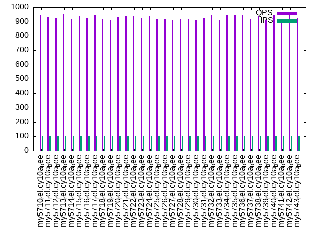

This is a report for the insert benchmark with 800M docs and 1 client(s). It is generated by scripts (bash, awk, sed) and Tufte might not be impressed. An overview of the insert benchmark is here and a short update is here. Below, by DBMS, I mean DBMS+version.config. An example is my8020.c10b40 where my means MySQL, 8020 is version 8.0.20 and c10b40 is the name for the configuration file.
The test server has 8 AMD cores, 16G RAM and an NVMe SSD. It is described here as the Beelink. The benchmark was run with 1 client and there were 1 or 3 connections per client (1 for queries or inserts without rate limits, 1+1 for rate limited inserts+deletes). There is 1 table. It loads 800M rows without secondary indexes, creates secondary indexes, then inserts 5M rows with a delete per insert to avoid growing the table. It then does 3 read+write tests for 1200s each that do queries as fast as possible with 100, 500 and then 1000 inserts/second/client concurrent with the queries and 1000 deletes/second to avoid growing the table. The database is larger than memory.
The tested DBMS are:
The numbers are inserts/s for l.i0 and l.i1, indexed docs (or rows) /s for l.x and queries/s for q100, q500, q1000. The values are the average rate over the entire test for inserts (IPS) and queries (QPS). The range of values for IPS and QPS is split into 3 parts: bottom 25%, middle 50%, top 25%. Values in the bottom 25% have a red background, values in the top 25% have a green background and values in the middle have no color. A gray background is used for values that can be ignored because the DBMS did not sustain the target insert rate. Red backgrounds are not used when the minimum value is within 80% of the max value.
| dbms | l.i0 | l.x | l.i1 | q100.1 | q500.1 | q1000.1 |
|---|---|---|---|---|---|---|
| my5710_rel.cy10a_bee | 86207 | 118009 | 1823 | 943 | 1109 | 988 |
| my5711_rel.cy10a_bee | 85233 | 114529 | 1825 | 929 | 1097 | 981 |
| my5712_rel.cy10a_bee | 84184 | 116888 | 1810 | 925 | 1101 | 979 |
| my5713_rel.cy10a_bee | 84273 | 117386 | 1818 | 951 | 1102 | 981 |
| my5714_rel.cy10a_bee | 84397 | 109633 | 1812 | 920 | 1095 | 978 |
| my5715_rel.cy10a_bee | 83490 | 111497 | 1819 | 937 | 1100 | 984 |
| my5716_rel.cy10a_bee | 83525 | 111824 | 1814 | 926 | 1104 | 981 |
| my5717_rel.cy10a_bee | 85043 | 114039 | 1820 | 949 | 1098 | 977 |
| my5718_rel.cy10a_bee | 83420 | 114056 | 1809 | 919 | 1102 | 982 |
| my5719_rel.cy10a_bee | 83814 | 114202 | 1836 | 914 | 1101 | 981 |
| my5720_rel.cy10a_bee | 83238 | 113329 | 1820 | 929 | 1095 | 979 |
| my5721_rel.cy10a_bee | 83446 | 116446 | 1810 | 941 | 1106 | 983 |
| my5722_rel.cy10a_bee | 78501 | 113796 | 1823 | 939 | 1099 | 980 |
| my5723_rel.cy10a_bee | 84549 | 108665 | 1815 | 926 | 1101 | 979 |
| my5724_rel.cy10a_bee | 83542 | 106937 | 1816 | 938 | 1095 | 978 |
| my5725_rel.cy10a_bee | 81708 | 114529 | 1763 | 919 | 1095 | 979 |
| my5726_rel.cy10a_bee | 82936 | 111824 | 1769 | 921 | 1090 | 975 |
| my5727_rel.cy10a_bee | 80898 | 113958 | 1755 | 912 | 1100 | 981 |
| my5728_rel.cy10a_bee | 80922 | 114202 | 1757 | 918 | 1092 | 972 |
| my5729_rel.cy10a_bee | 83533 | 110832 | 1766 | 918 | 1089 | 976 |
| my5730_rel.cy10a_bee | 82910 | 106595 | 1767 | 909 | 1096 | 972 |
| my5731_rel.cy10a_bee | 82610 | 110771 | 1763 | 924 | 1093 | 974 |
| my5732_rel.cy10a_bee | 82833 | 107627 | 1761 | 948 | 1087 | 969 |
| my5733_rel.cy10a_bee | 82355 | 107656 | 1762 | 912 | 1088 | 972 |
| my5734_rel.cy10a_bee | 81408 | 109828 | 1751 | 947 | 1089 | 971 |
| my5735_rel.cy10a_bee | 79792 | 109154 | 1749 | 947 | 1084 | 969 |
| my5736_rel.cy10a_bee | 80048 | 109783 | 1756 | 945 | 1083 | 966 |
| my5737_rel.cy10a_bee | 78895 | 108946 | 1751 | 915 | 1082 | 969 |
| my5738_rel.cy10a_bee | 80208 | 110496 | 1746 | 941 | 1085 | 966 |
| my5739_rel.cy10a_bee | 80233 | 110971 | 1742 | 912 | 1088 | 966 |
| my5740_rel.cy10a_bee | 80637 | 107584 | 1748 | 949 | 1088 | 968 |
| my5741_rel.cy10a_bee | 80499 | 107598 | 1748 | 914 | 1085 | 967 |
| my5742_rel.cy10a_bee | 80289 | 107281 | 1743 | 949 | 1089 | 968 |
| my5743_rel.cy10a_bee | 80922 | 108195 | 1746 | 926 | 1082 | 970 |
This table has relative throughput, throughput for the DBMS relative to the DBMS in the first line, using the absolute throughput from the previous table. Values less than 0.95 have a yellow background. Values greater than 1.05 have a blue background.
| dbms | l.i0 | l.x | l.i1 | q100.1 | q500.1 | q1000.1 |
|---|---|---|---|---|---|---|
| my5710_rel.cy10a_bee | 1.00 | 1.00 | 1.00 | 1.00 | 1.00 | 1.00 |
| my5711_rel.cy10a_bee | 0.99 | 0.97 | 1.00 | 0.99 | 0.99 | 0.99 |
| my5712_rel.cy10a_bee | 0.98 | 0.99 | 0.99 | 0.98 | 0.99 | 0.99 |
| my5713_rel.cy10a_bee | 0.98 | 0.99 | 1.00 | 1.01 | 0.99 | 0.99 |
| my5714_rel.cy10a_bee | 0.98 | 0.93 | 0.99 | 0.98 | 0.99 | 0.99 |
| my5715_rel.cy10a_bee | 0.97 | 0.94 | 1.00 | 0.99 | 0.99 | 1.00 |
| my5716_rel.cy10a_bee | 0.97 | 0.95 | 1.00 | 0.98 | 1.00 | 0.99 |
| my5717_rel.cy10a_bee | 0.99 | 0.97 | 1.00 | 1.01 | 0.99 | 0.99 |
| my5718_rel.cy10a_bee | 0.97 | 0.97 | 0.99 | 0.97 | 0.99 | 0.99 |
| my5719_rel.cy10a_bee | 0.97 | 0.97 | 1.01 | 0.97 | 0.99 | 0.99 |
| my5720_rel.cy10a_bee | 0.97 | 0.96 | 1.00 | 0.99 | 0.99 | 0.99 |
| my5721_rel.cy10a_bee | 0.97 | 0.99 | 0.99 | 1.00 | 1.00 | 0.99 |
| my5722_rel.cy10a_bee | 0.91 | 0.96 | 1.00 | 1.00 | 0.99 | 0.99 |
| my5723_rel.cy10a_bee | 0.98 | 0.92 | 1.00 | 0.98 | 0.99 | 0.99 |
| my5724_rel.cy10a_bee | 0.97 | 0.91 | 1.00 | 0.99 | 0.99 | 0.99 |
| my5725_rel.cy10a_bee | 0.95 | 0.97 | 0.97 | 0.97 | 0.99 | 0.99 |
| my5726_rel.cy10a_bee | 0.96 | 0.95 | 0.97 | 0.98 | 0.98 | 0.99 |
| my5727_rel.cy10a_bee | 0.94 | 0.97 | 0.96 | 0.97 | 0.99 | 0.99 |
| my5728_rel.cy10a_bee | 0.94 | 0.97 | 0.96 | 0.97 | 0.98 | 0.98 |
| my5729_rel.cy10a_bee | 0.97 | 0.94 | 0.97 | 0.97 | 0.98 | 0.99 |
| my5730_rel.cy10a_bee | 0.96 | 0.90 | 0.97 | 0.96 | 0.99 | 0.98 |
| my5731_rel.cy10a_bee | 0.96 | 0.94 | 0.97 | 0.98 | 0.99 | 0.99 |
| my5732_rel.cy10a_bee | 0.96 | 0.91 | 0.97 | 1.01 | 0.98 | 0.98 |
| my5733_rel.cy10a_bee | 0.96 | 0.91 | 0.97 | 0.97 | 0.98 | 0.98 |
| my5734_rel.cy10a_bee | 0.94 | 0.93 | 0.96 | 1.00 | 0.98 | 0.98 |
| my5735_rel.cy10a_bee | 0.93 | 0.92 | 0.96 | 1.00 | 0.98 | 0.98 |
| my5736_rel.cy10a_bee | 0.93 | 0.93 | 0.96 | 1.00 | 0.98 | 0.98 |
| my5737_rel.cy10a_bee | 0.92 | 0.92 | 0.96 | 0.97 | 0.98 | 0.98 |
| my5738_rel.cy10a_bee | 0.93 | 0.94 | 0.96 | 1.00 | 0.98 | 0.98 |
| my5739_rel.cy10a_bee | 0.93 | 0.94 | 0.96 | 0.97 | 0.98 | 0.98 |
| my5740_rel.cy10a_bee | 0.94 | 0.91 | 0.96 | 1.01 | 0.98 | 0.98 |
| my5741_rel.cy10a_bee | 0.93 | 0.91 | 0.96 | 0.97 | 0.98 | 0.98 |
| my5742_rel.cy10a_bee | 0.93 | 0.91 | 0.96 | 1.01 | 0.98 | 0.98 |
| my5743_rel.cy10a_bee | 0.94 | 0.92 | 0.96 | 0.98 | 0.98 | 0.98 |
This lists the average rate of inserts/s for the tests that do inserts concurrent with queries. For such tests the query rate is listed in the table above. The read+write tests are setup so that the insert rate should match the target rate every second. Cells that are not at least 95% of the target have a red background to indicate a failure to satisfy the target.
| dbms | q100.1 | q500.1 | q1000.1 |
|---|---|---|---|
| my5710_rel.cy10a_bee | 100 | 499 | 998 |
| my5711_rel.cy10a_bee | 100 | 499 | 998 |
| my5712_rel.cy10a_bee | 100 | 499 | 998 |
| my5713_rel.cy10a_bee | 100 | 499 | 998 |
| my5714_rel.cy10a_bee | 100 | 498 | 998 |
| my5715_rel.cy10a_bee | 100 | 499 | 997 |
| my5716_rel.cy10a_bee | 100 | 499 | 997 |
| my5717_rel.cy10a_bee | 100 | 499 | 998 |
| my5718_rel.cy10a_bee | 100 | 499 | 998 |
| my5719_rel.cy10a_bee | 100 | 499 | 998 |
| my5720_rel.cy10a_bee | 100 | 499 | 998 |
| my5721_rel.cy10a_bee | 100 | 499 | 998 |
| my5722_rel.cy10a_bee | 100 | 499 | 998 |
| my5723_rel.cy10a_bee | 100 | 499 | 997 |
| my5724_rel.cy10a_bee | 100 | 499 | 998 |
| my5725_rel.cy10a_bee | 100 | 499 | 998 |
| my5726_rel.cy10a_bee | 100 | 499 | 998 |
| my5727_rel.cy10a_bee | 100 | 499 | 998 |
| my5728_rel.cy10a_bee | 100 | 499 | 998 |
| my5729_rel.cy10a_bee | 100 | 499 | 998 |
| my5730_rel.cy10a_bee | 100 | 499 | 998 |
| my5731_rel.cy10a_bee | 100 | 499 | 998 |
| my5732_rel.cy10a_bee | 100 | 499 | 998 |
| my5733_rel.cy10a_bee | 100 | 499 | 998 |
| my5734_rel.cy10a_bee | 100 | 499 | 998 |
| my5735_rel.cy10a_bee | 100 | 499 | 998 |
| my5736_rel.cy10a_bee | 100 | 499 | 998 |
| my5737_rel.cy10a_bee | 100 | 499 | 998 |
| my5738_rel.cy10a_bee | 100 | 499 | 998 |
| my5739_rel.cy10a_bee | 100 | 499 | 998 |
| my5740_rel.cy10a_bee | 100 | 498 | 998 |
| my5741_rel.cy10a_bee | 100 | 499 | 998 |
| my5742_rel.cy10a_bee | 100 | 499 | 998 |
| my5743_rel.cy10a_bee | 100 | 499 | 998 |
| target | 100 | 500 | 1000 |
l.i0: load without secondary indexes. Graphs for performance per 1-second interval are here.
Average throughput:
Insert response time histogram: each cell has the percentage of responses that take <= the time in the header and max is the max response time in seconds. For the max column values in the top 25% of the range have a red background and in the bottom 25% of the range have a green background. The red background is not used when the min value is within 80% of the max value.
| dbms | 256us | 1ms | 4ms | 16ms | 64ms | 256ms | 1s | 4s | 16s | gt | max |
|---|---|---|---|---|---|---|---|---|---|---|---|
| my5710_rel.cy10a_bee | 6.055 | 93.652 | 0.286 | 0.004 | 0.003 | 0.135 | |||||
| my5711_rel.cy10a_bee | 3.200 | 96.505 | 0.287 | 0.005 | 0.003 | 0.133 | |||||
| my5712_rel.cy10a_bee | 2.667 | 97.045 | 0.267 | 0.017 | 0.004 | 0.236 | |||||
| my5713_rel.cy10a_bee | 3.115 | 96.596 | 0.269 | 0.017 | 0.004 | 0.228 | |||||
| my5714_rel.cy10a_bee | 1.684 | 98.018 | 0.291 | 0.004 | 0.003 | 0.153 | |||||
| my5715_rel.cy10a_bee | 0.697 | 99.002 | 0.294 | 0.005 | 0.003 | 0.160 | |||||
| my5716_rel.cy10a_bee | 0.780 | 98.919 | 0.293 | 0.005 | 0.003 | 0.141 | |||||
| my5717_rel.cy10a_bee | 2.838 | 96.865 | 0.289 | 0.005 | 0.003 | 0.137 | |||||
| my5718_rel.cy10a_bee | 0.787 | 98.912 | 0.294 | 0.004 | 0.003 | 0.135 | |||||
| my5719_rel.cy10a_bee | 0.886 | 98.818 | 0.289 | 0.005 | 0.003 | 0.130 | |||||
| my5720_rel.cy10a_bee | 0.632 | 99.067 | 0.294 | 0.005 | 0.003 | 0.145 | |||||
| my5721_rel.cy10a_bee | 0.651 | 99.047 | 0.295 | 0.005 | 0.003 | 0.129 | |||||
| my5722_rel.cy10a_bee | 1.400 | 98.288 | 0.300 | 0.006 | 0.004 | 0.001 | 0.001 | nonzero | nonzero | 55.941 | |
| my5723_rel.cy10a_bee | 1.758 | 97.943 | 0.291 | 0.004 | 0.003 | 0.142 | |||||
| my5724_rel.cy10a_bee | 0.740 | 98.961 | 0.292 | 0.005 | 0.003 | 0.140 | |||||
| my5725_rel.cy10a_bee | 0.519 | 99.150 | 0.190 | 0.138 | 0.002 | 0.137 | |||||
| my5726_rel.cy10a_bee | 1.530 | 98.143 | 0.186 | 0.138 | 0.003 | 0.143 | |||||
| my5727_rel.cy10a_bee | 0.286 | 99.383 | 0.190 | 0.138 | 0.002 | 0.144 | |||||
| my5728_rel.cy10a_bee | 0.324 | 99.345 | 0.190 | 0.139 | 0.002 | 0.159 | |||||
| my5729_rel.cy10a_bee | 2.458 | 97.214 | 0.189 | 0.136 | 0.003 | 0.150 | |||||
| my5730_rel.cy10a_bee | 1.296 | 98.376 | 0.189 | 0.136 | 0.003 | 0.145 | |||||
| my5731_rel.cy10a_bee | 0.896 | 98.777 | 0.186 | 0.138 | 0.003 | 0.139 | |||||
| my5732_rel.cy10a_bee | 1.484 | 98.189 | 0.189 | 0.137 | 0.003 | 0.136 | |||||
| my5733_rel.cy10a_bee | 0.819 | 98.851 | 0.191 | 0.135 | 0.003 | 0.125 | |||||
| my5734_rel.cy10a_bee | 0.330 | 99.339 | 0.191 | 0.138 | 0.002 | 0.132 | |||||
| my5735_rel.cy10a_bee | 0.149 | 99.518 | 0.191 | 0.140 | 0.002 | 0.139 | |||||
| my5736_rel.cy10a_bee | 0.197 | 99.470 | 0.192 | 0.139 | 0.002 | 0.136 | |||||
| my5737_rel.cy10a_bee | 0.018 | 99.647 | 0.193 | 0.140 | 0.002 | 0.127 | |||||
| my5738_rel.cy10a_bee | 0.203 | 99.463 | 0.193 | 0.138 | 0.002 | 0.131 | |||||
| my5739_rel.cy10a_bee | 0.199 | 99.468 | 0.192 | 0.140 | 0.002 | 0.132 | |||||
| my5740_rel.cy10a_bee | 0.262 | 99.406 | 0.192 | 0.138 | 0.002 | 0.137 | |||||
| my5741_rel.cy10a_bee | 0.207 | 99.461 | 0.191 | 0.139 | 0.002 | 0.132 | |||||
| my5742_rel.cy10a_bee | 0.180 | 99.487 | 0.193 | 0.138 | 0.002 | 0.138 | |||||
| my5743_rel.cy10a_bee | 0.330 | 99.338 | 0.190 | 0.140 | 0.002 | 0.132 |
Performance metrics for the DBMS listed above. Some are normalized by throughput, others are not. Legend for results is here.
ips qps rps rmbps wps wmbps rpq rkbpq wpi wkbpi csps cpups cspq cpupq dbgb1 dbgb2 rss maxop p50 p99 tag 86207 0 0 0.0 431.3 30.9 0.000 0.000 0.005 0.367 9541 21.3 0.111 20 52.6 93.1 10.9 0.135 86477 74823 800m.my5710_rel.cy10a_bee 85233 0 0 0.0 426.5 30.6 0.000 0.000 0.005 0.367 9450 21.4 0.111 20 52.6 93.1 10.9 0.133 85503 74220 800m.my5711_rel.cy10a_bee 84184 0 0 0.0 421.4 30.2 0.000 0.000 0.005 0.367 9339 21.3 0.111 20 52.6 93.1 10.9 0.236 84603 70747 800m.my5712_rel.cy10a_bee 84273 0 0 0.0 421.9 30.2 0.000 0.000 0.005 0.367 9332 21.2 0.111 20 52.6 93.1 10.9 0.228 84707 70428 800m.my5713_rel.cy10a_bee 84397 0 0 0.0 422.6 30.3 0.000 0.000 0.005 0.367 9385 21.5 0.111 20 52.6 93.1 10.9 0.153 84707 73917 800m.my5714_rel.cy10a_bee 83490 0 0 0.0 418.2 29.9 0.000 0.000 0.005 0.367 9285 21.7 0.111 21 52.6 93.1 10.9 0.160 83780 73323 800m.my5715_rel.cy10a_bee 83525 0 0 0.0 418.5 30.0 0.000 0.000 0.005 0.367 9303 21.7 0.111 21 52.6 93.1 10.9 0.141 83808 73118 800m.my5716_rel.cy10a_bee 85043 0 0 0.0 425.8 30.5 0.000 0.000 0.005 0.367 9433 21.4 0.111 20 52.6 93.1 10.9 0.137 85338 73937 800m.my5717_rel.cy10a_bee 83420 0 0 0.0 419.8 29.9 0.000 0.000 0.005 0.367 9279 21.7 0.111 21 52.6 93.1 10.9 0.135 83704 73519 800m.my5718_rel.cy10a_bee 83814 0 0 0.0 419.8 30.1 0.000 0.000 0.005 0.367 9311 21.6 0.111 21 52.6 93.1 10.9 0.130 84129 73417 800m.my5719_rel.cy10a_bee 83238 0 0 0.0 418.7 29.8 0.000 0.000 0.005 0.367 9275 21.7 0.111 21 52.6 93.1 10.9 0.145 83508 72927 800m.my5720_rel.cy10a_bee 83446 0 0 0.0 419.7 29.9 0.000 0.000 0.005 0.367 9282 21.7 0.111 21 52.6 93.1 10.9 0.129 83718 72917 800m.my5721_rel.cy10a_bee 78501 0 0 0.0 393.3 28.2 0.000 0.000 0.005 0.367 9417 21.7 0.120 22 52.6 93.1 10.7 55.941 84506 0 800m.my5722_rel.cy10a_bee 84549 0 0 0.0 423.2 30.3 0.000 0.000 0.005 0.367 9370 21.4 0.111 20 52.6 93.1 10.9 0.142 84895 73797 800m.my5723_rel.cy10a_bee 83542 0 0 0.0 418.2 30.0 0.000 0.000 0.005 0.367 9288 21.6 0.111 21 52.6 93.1 10.9 0.140 83838 73018 800m.my5724_rel.cy10a_bee 81708 0 0 0.0 410.9 29.3 0.000 0.000 0.005 0.367 9112 21.3 0.112 21 52.6 93.1 10.9 0.137 81924 72424 800m.my5725_rel.cy10a_bee 82936 0 0 0.0 416.9 29.7 0.000 0.000 0.005 0.367 9211 21.2 0.111 20 52.6 93.1 10.9 0.143 83208 72738 800m.my5726_rel.cy10a_bee 80898 0 0 0.0 406.9 29.0 0.000 0.000 0.005 0.367 9004 21.3 0.111 21 52.6 93.1 10.9 0.144 81075 71986 800m.my5727_rel.cy10a_bee 80922 0 0 0.0 407.1 29.0 0.000 0.000 0.005 0.367 9019 21.3 0.111 21 52.6 93.1 10.9 0.159 81109 72132 800m.my5728_rel.cy10a_bee 83533 0 0 0.0 420.0 30.0 0.000 0.000 0.005 0.367 9262 21.1 0.111 20 52.6 93.1 10.9 0.150 83817 72634 800m.my5729_rel.cy10a_bee 82910 0 0 0.0 416.9 29.7 0.000 0.000 0.005 0.367 9206 21.2 0.111 20 52.6 93.1 10.9 0.145 83215 72618 800m.my5730_rel.cy10a_bee 82610 0 0 0.0 415.5 29.6 0.000 0.000 0.005 0.367 9160 21.2 0.111 21 52.6 93.1 10.9 0.139 82928 72730 800m.my5731_rel.cy10a_bee 82833 0 0 0.0 416.6 29.7 0.000 0.000 0.005 0.367 9199 21.2 0.111 20 52.6 93.1 10.9 0.136 83143 72509 800m.my5732_rel.cy10a_bee 82355 0 0 0.0 414.0 29.5 0.000 0.000 0.005 0.367 9149 21.3 0.111 21 52.6 93.1 10.9 0.125 82662 72627 800m.my5733_rel.cy10a_bee 81408 0 0 0.0 409.6 29.2 0.000 0.000 0.005 0.367 9008 21.2 0.111 21 52.6 93.1 10.9 0.132 81708 72119 800m.my5734_rel.cy10a_bee 79792 0 0 0.0 401.5 28.6 0.000 0.000 0.005 0.367 8899 21.4 0.112 21 52.6 93.1 10.9 0.139 79912 71420 800m.my5735_rel.cy10a_bee 80048 0 0 0.0 402.8 28.7 0.000 0.000 0.005 0.367 8912 21.3 0.111 21 52.6 93.1 10.9 0.136 80145 71651 800m.my5736_rel.cy10a_bee 78895 0 0 0.0 397.2 28.3 0.000 0.000 0.005 0.367 8816 21.4 0.112 22 52.6 93.1 10.9 0.127 79016 71326 800m.my5737_rel.cy10a_bee 80208 0 0 0.0 403.4 28.8 0.000 0.000 0.005 0.367 8944 21.3 0.112 21 52.6 93.1 10.9 0.131 80311 71431 800m.my5738_rel.cy10a_bee 80233 0 0 0.0 403.8 28.8 0.000 0.000 0.005 0.367 8938 21.3 0.111 21 52.6 93.1 10.9 0.132 80311 72099 800m.my5739_rel.cy10a_bee 80637 0 0 0.0 405.8 28.9 0.000 0.000 0.005 0.367 8978 21.3 0.111 21 52.6 93.1 10.9 0.137 80747 72013 800m.my5740_rel.cy10a_bee 80499 0 0 0.0 405.0 28.9 0.000 0.000 0.005 0.367 8978 21.3 0.112 21 52.6 93.1 10.9 0.132 80617 72018 800m.my5741_rel.cy10a_bee 80289 0 0 0.0 403.8 28.8 0.000 0.000 0.005 0.367 8959 21.3 0.112 21 52.6 93.1 10.9 0.138 80487 71876 800m.my5742_rel.cy10a_bee 80922 0 0 0.0 407.1 29.0 0.000 0.000 0.005 0.367 9025 21.3 0.112 21 52.6 93.1 10.9 0.132 81108 72221 800m.my5743_rel.cy10a_bee
l.x: create secondary indexes.
Average throughput:
Performance metrics for the DBMS listed above. Some are normalized by throughput, others are not. Legend for results is here.
ips qps rps rmbps wps wmbps rpq rkbpq wpi wkbpi csps cpups cspq cpupq dbgb1 dbgb2 rss maxop p50 p99 tag 118009 0 718 110.7 981.7 132.8 0.006 0.961 0.008 1.152 6552 12.4 0.056 8 117.7 158.2 11.1 0.019 NA NA 800m.my5710_rel.cy10a_bee 114529 0 689 107.6 951.3 129.0 0.006 0.962 0.008 1.154 6485 12.5 0.057 9 117.7 158.2 11.1 0.013 NA NA 800m.my5711_rel.cy10a_bee 116888 0 700 109.7 970.2 131.6 0.006 0.961 0.008 1.153 6565 12.4 0.056 8 117.7 158.2 11.1 0.019 NA NA 800m.my5712_rel.cy10a_bee 117386 0 711 110.3 962.4 131.9 0.006 0.962 0.008 1.151 6479 12.4 0.055 8 117.7 158.2 11.1 0.022 NA NA 800m.my5713_rel.cy10a_bee 109633 0 662 102.9 899.4 123.2 0.006 0.961 0.008 1.151 6159 12.4 0.056 9 117.7 158.2 11.1 0.012 NA NA 800m.my5714_rel.cy10a_bee 111497 0 672 104.6 900.9 125.1 0.006 0.961 0.008 1.149 6167 12.4 0.055 9 117.7 158.2 11.1 0.008 NA NA 800m.my5715_rel.cy10a_bee 111824 0 670 104.9 926.1 125.9 0.006 0.961 0.008 1.153 6272 12.3 0.056 9 117.7 158.2 11.1 0.010 NA NA 800m.my5716_rel.cy10a_bee 114039 0 691 107.0 935.0 128.1 0.006 0.961 0.008 1.151 6349 12.4 0.056 9 117.7 158.2 11.1 0.007 NA NA 800m.my5717_rel.cy10a_bee 114056 0 687 107.0 941.6 128.3 0.006 0.961 0.008 1.152 6357 12.4 0.056 9 117.7 158.2 11.1 0.010 NA NA 800m.my5718_rel.cy10a_bee 114202 0 688 107.2 943.5 128.5 0.006 0.961 0.008 1.152 6358 12.4 0.056 9 117.7 158.2 11.1 0.014 NA NA 800m.my5719_rel.cy10a_bee 113329 0 677 106.3 926.8 127.3 0.006 0.961 0.008 1.151 6344 12.4 0.056 9 117.7 158.2 11.1 0.012 NA NA 800m.my5720_rel.cy10a_bee 116446 0 702 109.2 975.0 131.1 0.006 0.960 0.008 1.153 6443 12.4 0.055 9 117.7 158.2 11.1 0.011 NA NA 800m.my5721_rel.cy10a_bee 113796 0 691 106.1 939.1 127.8 0.006 0.955 0.008 1.150 6366 12.4 0.056 9 117.7 158.2 10.4 0.008 NA NA 800m.my5722_rel.cy10a_bee 108665 0 653 101.9 882.6 122.0 0.006 0.960 0.008 1.150 6062 12.3 0.056 9 117.7 158.2 11.1 0.022 NA NA 800m.my5723_rel.cy10a_bee 106937 0 638 100.3 863.8 120.0 0.006 0.960 0.008 1.149 5984 12.3 0.056 9 117.7 158.2 11.1 0.007 NA NA 800m.my5724_rel.cy10a_bee 114529 0 698 107.4 951.3 128.8 0.006 0.960 0.008 1.151 6417 12.0 0.056 8 117.7 158.2 11.1 0.016 NA NA 800m.my5725_rel.cy10a_bee 111824 0 684 104.9 924.4 125.6 0.006 0.960 0.008 1.150 6273 12.1 0.056 9 117.7 158.2 11.1 0.015 NA NA 800m.my5726_rel.cy10a_bee 113958 0 691 106.9 947.0 128.1 0.006 0.960 0.008 1.151 6413 12.1 0.056 8 117.7 158.2 11.1 0.011 NA NA 800m.my5727_rel.cy10a_bee 114202 0 690 107.1 952.0 128.5 0.006 0.961 0.008 1.152 6423 12.0 0.056 8 117.7 158.2 11.1 0.010 NA NA 800m.my5728_rel.cy10a_bee 110832 0 669 103.9 938.3 124.8 0.006 0.960 0.008 1.153 6185 12.1 0.056 9 117.7 158.2 11.1 0.015 NA NA 800m.my5729_rel.cy10a_bee 106595 0 652 100.0 892.1 119.9 0.006 0.960 0.008 1.152 6023 12.1 0.057 9 117.7 158.2 11.1 0.013 NA NA 800m.my5730_rel.cy10a_bee 110771 0 674 103.9 934.2 124.8 0.006 0.961 0.008 1.153 6254 12.1 0.056 9 117.7 158.2 11.1 0.016 NA NA 800m.my5731_rel.cy10a_bee 107627 0 656 101.0 899.5 121.1 0.006 0.961 0.008 1.152 6074 12.1 0.056 9 117.7 158.2 11.1 0.016 NA NA 800m.my5732_rel.cy10a_bee 107656 0 651 101.0 896.4 121.1 0.006 0.961 0.008 1.152 6045 12.1 0.056 9 117.7 158.2 11.1 0.018 NA NA 800m.my5733_rel.cy10a_bee 109828 0 660 103.1 914.4 123.6 0.006 0.961 0.008 1.152 6222 12.1 0.057 9 117.7 158.2 11.1 0.013 NA NA 800m.my5734_rel.cy10a_bee 109154 0 655 102.4 911.5 122.8 0.006 0.960 0.008 1.152 6208 12.0 0.057 9 117.7 158.2 11.1 0.011 NA NA 800m.my5735_rel.cy10a_bee 109783 0 662 102.9 932.6 123.6 0.006 0.960 0.008 1.153 6263 12.1 0.057 9 117.7 158.2 11.1 0.011 NA NA 800m.my5736_rel.cy10a_bee 108946 0 664 102.2 929.1 122.7 0.006 0.960 0.009 1.153 6137 12.0 0.056 9 117.7 158.2 11.1 0.011 NA NA 800m.my5737_rel.cy10a_bee 110496 0 661 103.6 926.3 124.4 0.006 0.960 0.008 1.152 6241 12.0 0.056 9 117.7 158.2 11.1 0.015 NA NA 800m.my5738_rel.cy10a_bee 110971 0 662 104.0 933.0 124.9 0.006 0.960 0.008 1.153 6200 12.0 0.056 9 117.7 158.2 11.1 0.017 NA NA 800m.my5739_rel.cy10a_bee 107584 0 650 100.9 905.1 121.1 0.006 0.960 0.008 1.153 6114 12.0 0.057 9 117.7 158.2 11.1 0.011 NA NA 800m.my5740_rel.cy10a_bee 107598 0 648 100.9 884.6 120.9 0.006 0.960 0.008 1.150 6046 12.0 0.056 9 117.7 158.2 11.1 0.011 NA NA 800m.my5741_rel.cy10a_bee 107281 0 648 100.6 900.6 120.7 0.006 0.960 0.008 1.152 6095 12.0 0.057 9 117.7 158.2 11.1 0.016 NA NA 800m.my5742_rel.cy10a_bee 108195 0 656 101.5 897.5 121.6 0.006 0.960 0.008 1.151 6078 12.0 0.056 9 117.7 158.2 11.1 0.015 NA NA 800m.my5743_rel.cy10a_bee
l.i1: continue load after secondary indexes created. Graphs for performance per 1-second interval are here.
Average throughput:
Insert response time histogram: each cell has the percentage of responses that take <= the time in the header and max is the max response time in seconds. For the max column values in the top 25% of the range have a red background and in the bottom 25% of the range have a green background. The red background is not used when the min value is within 80% of the max value.
| dbms | 256us | 1ms | 4ms | 16ms | 64ms | 256ms | 1s | 4s | 16s | gt | max |
|---|---|---|---|---|---|---|---|---|---|---|---|
| my5710_rel.cy10a_bee | 34.268 | 60.133 | 5.596 | 0.003 | 0.299 | ||||||
| my5711_rel.cy10a_bee | 33.910 | 60.597 | 5.490 | 0.003 | 0.289 | ||||||
| my5712_rel.cy10a_bee | 33.622 | 60.697 | 5.679 | 0.002 | 0.345 | ||||||
| my5713_rel.cy10a_bee | 32.970 | 61.507 | 5.520 | 0.003 | 0.324 | ||||||
| my5714_rel.cy10a_bee | 32.783 | 61.737 | 5.478 | 0.002 | 0.340 | ||||||
| my5715_rel.cy10a_bee | 33.061 | 61.467 | 5.470 | 0.002 | 0.310 | ||||||
| my5716_rel.cy10a_bee | 32.887 | 61.646 | 5.465 | 0.002 | 0.344 | ||||||
| my5717_rel.cy10a_bee | 33.085 | 61.474 | 5.437 | 0.004 | 0.544 | ||||||
| my5718_rel.cy10a_bee | 32.511 | 61.934 | 5.552 | 0.003 | 0.295 | ||||||
| my5719_rel.cy10a_bee | 34.109 | 60.519 | 5.370 | 0.002 | 0.319 | ||||||
| my5720_rel.cy10a_bee | 33.435 | 61.100 | 5.462 | 0.003 | 0.340 | ||||||
| my5721_rel.cy10a_bee | 32.822 | 61.618 | 5.557 | 0.003 | 0.549 | ||||||
| my5722_rel.cy10a_bee | 33.545 | 61.017 | 5.431 | 0.007 | 0.379 | ||||||
| my5723_rel.cy10a_bee | 33.095 | 61.342 | 5.561 | 0.002 | 0.338 | ||||||
| my5724_rel.cy10a_bee | 33.119 | 61.340 | 5.539 | 0.002 | 0.321 | ||||||
| my5725_rel.cy10a_bee | 32.947 | 60.752 | 6.298 | 0.003 | 0.333 | ||||||
| my5726_rel.cy10a_bee | 33.187 | 60.526 | 6.285 | 0.002 | 0.348 | ||||||
| my5727_rel.cy10a_bee | 32.347 | 61.298 | 6.350 | 0.005 | 0.422 | ||||||
| my5728_rel.cy10a_bee | 32.285 | 61.404 | 6.307 | 0.004 | 0.414 | ||||||
| my5729_rel.cy10a_bee | 32.869 | 60.950 | 6.177 | 0.004 | 0.368 | ||||||
| my5730_rel.cy10a_bee | 33.216 | 60.527 | 6.254 | 0.003 | 0.323 | ||||||
| my5731_rel.cy10a_bee | 33.113 | 60.615 | 6.269 | 0.003 | 0.333 | ||||||
| my5732_rel.cy10a_bee | 32.889 | 60.796 | 6.312 | 0.003 | 0.322 | ||||||
| my5733_rel.cy10a_bee | 32.892 | 60.836 | 6.268 | 0.004 | 0.300 | ||||||
| my5734_rel.cy10a_bee | 31.934 | 61.801 | 6.262 | 0.003 | 0.348 | ||||||
| my5735_rel.cy10a_bee | 31.938 | 61.723 | 6.334 | 0.005 | 0.393 | ||||||
| my5736_rel.cy10a_bee | 32.571 | 61.090 | 6.336 | 0.003 | 0.333 | ||||||
| my5737_rel.cy10a_bee | 32.050 | 61.649 | 6.297 | 0.004 | 0.336 | ||||||
| my5738_rel.cy10a_bee | 31.751 | 62.000 | 6.246 | 0.003 | 0.338 | ||||||
| my5739_rel.cy10a_bee | 31.670 | 61.985 | 6.342 | 0.003 | 0.364 | ||||||
| my5740_rel.cy10a_bee | 31.961 | 61.686 | 6.351 | 0.002 | 0.346 | ||||||
| my5741_rel.cy10a_bee | 31.837 | 61.869 | 6.291 | 0.003 | 0.338 | ||||||
| my5742_rel.cy10a_bee | 31.768 | 61.846 | 6.384 | 0.002 | 0.283 | ||||||
| my5743_rel.cy10a_bee | 32.006 | 61.564 | 6.428 | 0.002 | 0.346 |
Delete response time histogram: each cell has the percentage of responses that take <= the time in the header and max is the max response time in seconds. For the max column values in the top 25% of the range have a red background and in the bottom 25% of the range have a green background. The red background is not used when the min value is within 80% of the max value.
| dbms | 256us | 1ms | 4ms | 16ms | 64ms | 256ms | 1s | 4s | 16s | gt | max |
|---|---|---|---|---|---|---|---|---|---|---|---|
| my5710_rel.cy10a_bee | 91.756 | 8.037 | 0.199 | 0.008 | 0.117 | ||||||
| my5711_rel.cy10a_bee | 92.029 | 7.770 | 0.195 | 0.006 | 0.135 | ||||||
| my5712_rel.cy10a_bee | 90.952 | 8.862 | 0.182 | 0.004 | 0.099 | ||||||
| my5713_rel.cy10a_bee | 91.427 | 8.385 | 0.184 | 0.004 | 0.114 | ||||||
| my5714_rel.cy10a_bee | 91.035 | 8.726 | 0.232 | 0.007 | 0.087 | ||||||
| my5715_rel.cy10a_bee | 91.657 | 8.128 | 0.211 | 0.004 | 0.108 | ||||||
| my5716_rel.cy10a_bee | 91.218 | 8.596 | 0.179 | 0.007 | 0.084 | ||||||
| my5717_rel.cy10a_bee | 90.125 | 9.670 | 0.199 | 0.006 | 0.107 | ||||||
| my5718_rel.cy10a_bee | 90.068 | 9.709 | 0.217 | 0.006 | 0.126 | ||||||
| my5719_rel.cy10a_bee | 90.685 | 9.140 | 0.171 | 0.004 | 0.139 | ||||||
| my5720_rel.cy10a_bee | 91.103 | 8.686 | 0.203 | 0.008 | 0.115 | ||||||
| my5721_rel.cy10a_bee | 91.759 | 8.024 | 0.206 | 0.011 | 0.139 | ||||||
| my5722_rel.cy10a_bee | 91.755 | 8.028 | 0.210 | 0.007 | 0.114 | ||||||
| my5723_rel.cy10a_bee | 91.859 | 7.941 | 0.193 | 0.007 | 0.101 | ||||||
| my5724_rel.cy10a_bee | 91.587 | 8.222 | 0.186 | 0.005 | 0.135 | ||||||
| my5725_rel.cy10a_bee | 91.605 | 8.143 | 0.247 | 0.005 | 0.099 | ||||||
| my5726_rel.cy10a_bee | 92.292 | 7.462 | 0.239 | 0.007 | 0.117 | ||||||
| my5727_rel.cy10a_bee | 91.282 | 8.444 | 0.264 | 0.010 | 0.177 | ||||||
| my5728_rel.cy10a_bee | 91.454 | 8.290 | 0.245 | 0.011 | 0.115 | ||||||
| my5729_rel.cy10a_bee | 92.123 | 7.617 | 0.254 | 0.006 | 0.127 | ||||||
| my5730_rel.cy10a_bee | 92.593 | 7.147 | 0.249 | 0.011 | 0.106 | ||||||
| my5731_rel.cy10a_bee | 92.327 | 7.416 | 0.250 | 0.007 | 0.115 | ||||||
| my5732_rel.cy10a_bee | 92.131 | 7.627 | 0.238 | 0.004 | 0.141 | ||||||
| my5733_rel.cy10a_bee | 91.082 | 8.656 | 0.258 | 0.004 | 0.112 | ||||||
| my5734_rel.cy10a_bee | 90.499 | 9.252 | 0.244 | 0.005 | 0.106 | ||||||
| my5735_rel.cy10a_bee | 90.304 | 9.405 | 0.283 | 0.008 | 0.189 | ||||||
| my5736_rel.cy10a_bee | 91.016 | 8.697 | 0.280 | 0.007 | 0.154 | ||||||
| my5737_rel.cy10a_bee | 90.282 | 9.457 | 0.253 | 0.008 | 0.123 | ||||||
| my5738_rel.cy10a_bee | 89.535 | 10.195 | 0.263 | 0.007 | 0.107 | ||||||
| my5739_rel.cy10a_bee | 89.674 | 10.047 | 0.268 | 0.011 | 0.098 | ||||||
| my5740_rel.cy10a_bee | 90.250 | 9.496 | 0.245 | 0.009 | 0.096 | ||||||
| my5741_rel.cy10a_bee | 90.138 | 9.607 | 0.250 | 0.005 | 0.103 | ||||||
| my5742_rel.cy10a_bee | 89.754 | 9.975 | 0.263 | 0.008 | 0.145 | ||||||
| my5743_rel.cy10a_bee | 89.574 | 10.143 | 0.276 | 0.007 | 0.087 |
Performance metrics for the DBMS listed above. Some are normalized by throughput, others are not. Legend for results is here.
ips qps rps rmbps wps wmbps rpq rkbpq wpi wkbpi csps cpups cspq cpupq dbgb1 dbgb2 rss maxop p50 p99 tag 1823 0 9116 142.4 12135.0 389.4 5.000 79.993 6.655 218.692 58191 22.9 31.914 1005 149.5 190.4 10.7 0.299 1698 749 800m.my5710_rel.cy10a_bee 1825 0 9122 142.5 12140.1 389.6 4.997 79.956 6.651 218.581 58216 22.9 31.892 1004 149.5 190.5 10.7 0.289 1649 799 800m.my5711_rel.cy10a_bee 1810 0 9094 142.1 12095.4 388.1 5.024 80.381 6.682 219.536 58261 22.8 32.185 1008 149.3 190.3 10.7 0.345 1698 749 800m.my5712_rel.cy10a_bee 1818 0 9193 143.6 12312.5 391.9 5.058 80.932 6.774 220.804 59241 23.0 32.595 1012 149.2 190.1 10.7 0.324 1698 799 800m.my5713_rel.cy10a_bee 1812 0 9140 142.8 12149.3 389.7 5.046 80.729 6.707 220.317 59265 23.0 32.716 1016 149.2 190.1 10.7 0.340 1698 750 800m.my5714_rel.cy10a_bee 1819 0 9192 143.6 12217.0 392.0 5.054 80.862 6.717 220.690 58905 22.9 32.387 1007 149.2 190.2 10.7 0.310 1698 750 800m.my5715_rel.cy10a_bee 1814 0 9164 143.2 12181.4 390.8 5.052 80.825 6.714 220.573 58767 22.9 32.393 1010 149.2 190.1 10.7 0.344 1698 749 800m.my5716_rel.cy10a_bee 1820 0 9189 143.6 12213.4 391.8 5.050 80.805 6.712 220.484 59039 23.0 32.448 1011 149.2 190.1 10.7 0.544 1698 799 800m.my5717_rel.cy10a_bee 1809 0 9132 142.7 12133.9 389.3 5.048 80.770 6.708 220.360 58384 23.1 32.276 1022 149.2 190.1 10.7 0.295 1698 750 800m.my5718_rel.cy10a_bee 1836 0 9223 144.1 12267.1 393.7 5.025 80.393 6.683 219.631 58963 23.0 32.124 1002 149.3 190.3 10.7 0.319 1698 799 800m.my5719_rel.cy10a_bee 1820 0 9161 143.1 12176.6 390.7 5.033 80.532 6.690 219.822 58985 23.0 32.407 1011 149.3 190.2 10.7 0.340 1698 799 800m.my5720_rel.cy10a_bee 1810 0 9166 143.2 12172.4 390.5 5.065 81.040 6.727 220.955 58720 22.9 32.449 1012 149.1 190.2 10.7 0.549 1698 749 800m.my5721_rel.cy10a_bee 1823 0 9192 143.6 12216.5 392.0 5.041 80.662 6.700 220.115 59275 22.9 32.508 1005 149.3 190.2 10.7 0.379 1698 799 800m.my5722_rel.cy10a_bee 1815 0 9190 143.6 12213.5 391.8 5.064 81.024 6.730 221.060 58789 22.9 32.394 1009 149.2 190.1 10.7 0.338 1697 749 800m.my5723_rel.cy10a_bee 1816 0 9201 143.8 12225.5 392.2 5.066 81.056 6.731 221.100 58958 22.9 32.462 1009 149.2 190.1 10.7 0.321 1698 749 800m.my5724_rel.cy10a_bee 1763 0 8917 139.3 11858.3 380.2 5.058 80.928 6.726 220.849 57478 22.3 32.602 1012 149.2 190.1 10.7 0.333 1599 699 800m.my5725_rel.cy10a_bee 1769 0 8932 139.6 11871.3 380.7 5.048 80.774 6.710 220.370 57076 22.3 32.261 1008 149.2 190.2 10.7 0.348 1648 699 800m.my5726_rel.cy10a_bee 1755 0 8852 138.3 11768.8 377.4 5.044 80.703 6.706 220.224 56951 22.3 32.451 1017 149.3 190.2 10.7 0.422 1598 699 800m.my5727_rel.cy10a_bee 1757 0 8865 138.5 11791.5 378.2 5.045 80.714 6.710 220.344 57050 22.3 32.463 1015 149.3 190.3 10.7 0.414 1598 699 800m.my5728_rel.cy10a_bee 1766 0 8860 138.4 11884.8 378.2 5.017 80.272 6.729 219.289 57336 22.4 32.465 1015 149.4 190.3 10.7 0.368 1648 699 800m.my5729_rel.cy10a_bee 1767 0 8867 138.5 11795.7 378.3 5.017 80.269 6.674 219.185 57434 22.4 32.496 1014 149.4 190.4 10.7 0.323 1599 699 800m.my5730_rel.cy10a_bee 1763 0 8908 139.2 11846.2 379.9 5.053 80.845 6.719 220.670 57397 22.3 32.556 1012 149.2 190.2 10.7 0.333 1599 699 800m.my5731_rel.cy10a_bee 1761 0 8896 139.0 11822.7 379.1 5.051 80.822 6.713 220.442 57149 22.3 32.450 1013 149.2 190.1 10.7 0.322 1599 699 800m.my5732_rel.cy10a_bee 1762 0 8906 139.2 11935.0 379.8 5.054 80.856 6.772 220.645 57248 22.3 32.483 1012 149.2 190.2 10.7 0.300 1599 699 800m.my5733_rel.cy10a_bee 1751 0 8886 138.8 11808.7 378.7 5.076 81.214 6.745 221.476 57655 22.4 32.932 1024 149.1 190.1 10.7 0.348 1648 699 800m.my5734_rel.cy10a_bee 1749 0 8854 138.3 11764.2 377.2 5.063 81.002 6.727 220.885 57475 22.4 32.866 1025 149.2 190.1 10.7 0.393 1599 699 800m.my5735_rel.cy10a_bee 1756 0 8870 138.6 11887.7 378.2 5.053 80.842 6.771 220.613 57508 22.4 32.757 1021 149.2 190.1 10.7 0.333 1599 699 800m.my5736_rel.cy10a_bee 1751 0 8886 138.8 11900.2 378.5 5.076 81.208 6.797 221.397 57526 22.4 32.859 1024 149.1 190.0 10.7 0.336 1648 699 800m.my5737_rel.cy10a_bee 1746 0 8851 138.3 11765.6 377.2 5.068 81.090 6.737 221.185 57512 22.4 32.932 1026 149.1 190.1 10.7 0.338 1600 699 800m.my5738_rel.cy10a_bee 1742 0 8836 138.1 11744.5 376.6 5.072 81.151 6.742 221.346 57250 22.4 32.863 1029 149.2 190.1 10.7 0.364 1599 699 800m.my5739_rel.cy10a_bee 1748 0 8844 138.2 11756.8 376.9 5.061 80.973 6.727 220.872 57260 22.4 32.765 1025 149.2 190.1 10.7 0.346 1598 699 800m.my5740_rel.cy10a_bee 1748 0 8845 138.2 11760.9 377.1 5.061 80.978 6.730 220.960 57113 22.4 32.681 1025 149.2 190.1 10.7 0.338 1598 699 800m.my5741_rel.cy10a_bee 1743 0 8829 137.9 11733.2 376.2 5.064 81.029 6.730 220.992 57028 22.4 32.712 1028 149.2 190.1 10.7 0.283 1598 699 800m.my5742_rel.cy10a_bee 1746 0 8824 137.9 11732.4 376.3 5.055 80.874 6.720 220.692 57680 22.4 33.039 1026 149.2 190.2 10.7 0.346 1599 699 800m.my5743_rel.cy10a_bee
q100.1: range queries with 100 insert/s per client. Graphs for performance per 1-second interval are here.
Average throughput:
Query response time histogram: each cell has the percentage of responses that take <= the time in the header and max is the max response time in seconds. For max values in the top 25% of the range have a red background and in the bottom 25% of the range have a green background. The red background is not used when the min value is within 80% of the max value.
| dbms | 256us | 1ms | 4ms | 16ms | 64ms | 256ms | 1s | 4s | 16s | gt | max |
|---|---|---|---|---|---|---|---|---|---|---|---|
| my5710_rel.cy10a_bee | 12.008 | 30.501 | 55.350 | 2.130 | 0.011 | 0.041 | |||||
| my5711_rel.cy10a_bee | 12.690 | 29.590 | 55.500 | 2.209 | 0.011 | 0.045 | |||||
| my5712_rel.cy10a_bee | 11.060 | 31.054 | 55.602 | 2.272 | 0.012 | nonzero | 0.064 | ||||
| my5713_rel.cy10a_bee | 9.915 | 32.285 | 55.687 | 2.103 | 0.011 | 0.046 | |||||
| my5714_rel.cy10a_bee | 11.306 | 30.700 | 55.787 | 2.194 | 0.012 | 0.044 | |||||
| my5715_rel.cy10a_bee | 12.414 | 29.945 | 55.511 | 2.119 | 0.011 | 0.048 | |||||
| my5716_rel.cy10a_bee | 13.269 | 28.945 | 55.593 | 2.182 | 0.010 | 0.043 | |||||
| my5717_rel.cy10a_bee | 11.029 | 31.148 | 55.759 | 2.053 | 0.011 | 0.043 | |||||
| my5718_rel.cy10a_bee | 13.128 | 28.977 | 55.669 | 2.215 | 0.011 | 0.052 | |||||
| my5719_rel.cy10a_bee | 12.369 | 29.729 | 55.601 | 2.290 | 0.012 | 0.040 | |||||
| my5720_rel.cy10a_bee | 11.593 | 30.528 | 55.707 | 2.161 | 0.011 | 0.045 | |||||
| my5721_rel.cy10a_bee | 10.970 | 31.394 | 55.549 | 2.077 | 0.010 | 0.046 | |||||
| my5722_rel.cy10a_bee | 11.739 | 30.447 | 55.722 | 2.080 | 0.012 | 0.040 | |||||
| my5723_rel.cy10a_bee | 11.044 | 30.916 | 55.893 | 2.136 | 0.010 | 0.046 | |||||
| my5724_rel.cy10a_bee | 11.475 | 30.904 | 55.515 | 2.095 | 0.010 | 0.042 | |||||
| my5725_rel.cy10a_bee | 11.508 | 30.532 | 55.734 | 2.214 | 0.012 | 0.044 | |||||
| my5726_rel.cy10a_bee | 11.116 | 30.801 | 55.886 | 2.186 | 0.012 | 0.049 | |||||
| my5727_rel.cy10a_bee | 11.329 | 30.488 | 55.941 | 2.231 | 0.011 | 0.042 | |||||
| my5728_rel.cy10a_bee | 11.641 | 30.230 | 55.916 | 2.201 | 0.012 | 0.041 | |||||
| my5729_rel.cy10a_bee | 10.731 | 31.008 | 56.034 | 2.215 | 0.011 | 0.055 | |||||
| my5730_rel.cy10a_bee | 10.607 | 31.172 | 55.965 | 2.243 | 0.012 | 0.049 | |||||
| my5731_rel.cy10a_bee | 10.120 | 31.832 | 55.876 | 2.161 | 0.011 | 0.062 | |||||
| my5732_rel.cy10a_bee | 9.245 | 32.788 | 55.904 | 2.053 | 0.010 | 0.039 | |||||
| my5733_rel.cy10a_bee | 11.213 | 30.657 | 55.912 | 2.206 | 0.011 | 0.045 | |||||
| my5734_rel.cy10a_bee | 8.471 | 33.573 | 55.919 | 2.027 | 0.010 | 0.039 | |||||
| my5735_rel.cy10a_bee | 8.602 | 33.425 | 55.906 | 2.057 | 0.010 | 0.042 | |||||
| my5736_rel.cy10a_bee | 9.139 | 32.905 | 55.868 | 2.078 | 0.010 | 0.040 | |||||
| my5737_rel.cy10a_bee | 10.309 | 31.558 | 55.917 | 2.203 | 0.012 | nonzero | 0.073 | ||||
| my5738_rel.cy10a_bee | 8.469 | 33.453 | 56.011 | 2.057 | 0.010 | 0.042 | |||||
| my5739_rel.cy10a_bee | 9.554 | 32.177 | 56.063 | 2.195 | 0.011 | 0.040 | |||||
| my5740_rel.cy10a_bee | 8.859 | 33.277 | 55.804 | 2.050 | 0.010 | 0.046 | |||||
| my5741_rel.cy10a_bee | 9.444 | 32.259 | 56.086 | 2.201 | 0.011 | 0.046 | |||||
| my5742_rel.cy10a_bee | 8.804 | 33.323 | 55.847 | 2.016 | 0.010 | 0.044 | |||||
| my5743_rel.cy10a_bee | 8.906 | 32.900 | 56.017 | 2.166 | 0.011 | 0.046 |
Insert response time histogram: each cell has the percentage of responses that take <= the time in the header and max is the max response time in seconds. For max values in the top 25% of the range have a red background and in the bottom 25% of the range have a green background. The red background is not used when the min value is within 80% of the max value.
| dbms | 256us | 1ms | 4ms | 16ms | 64ms | 256ms | 1s | 4s | 16s | gt | max |
|---|---|---|---|---|---|---|---|---|---|---|---|
| my5710_rel.cy10a_bee | 21.708 | 64.417 | 13.875 | 0.119 | |||||||
| my5711_rel.cy10a_bee | 13.625 | 72.167 | 14.208 | 0.111 | |||||||
| my5712_rel.cy10a_bee | 2.417 | 90.917 | 6.667 | 0.114 | |||||||
| my5713_rel.cy10a_bee | 42.875 | 44.250 | 12.875 | 0.122 | |||||||
| my5714_rel.cy10a_bee | 2.583 | 82.792 | 14.625 | 0.109 | |||||||
| my5715_rel.cy10a_bee | 20.208 | 64.833 | 14.958 | 0.116 | |||||||
| my5716_rel.cy10a_bee | 3.375 | 82.875 | 13.750 | 0.125 | |||||||
| my5717_rel.cy10a_bee | 38.375 | 50.292 | 11.333 | 0.139 | |||||||
| my5718_rel.cy10a_bee | 0.208 | 85.833 | 13.958 | 0.116 | |||||||
| my5719_rel.cy10a_bee | 0.167 | 83.625 | 16.208 | 0.113 | |||||||
| my5720_rel.cy10a_bee | 8.792 | 81.708 | 9.500 | 0.144 | |||||||
| my5721_rel.cy10a_bee | 28.333 | 59.375 | 12.292 | 0.105 | |||||||
| my5722_rel.cy10a_bee | 8.792 | 88.667 | 2.542 | 0.087 | |||||||
| my5723_rel.cy10a_bee | 9.083 | 77.042 | 13.875 | 0.116 | |||||||
| my5724_rel.cy10a_bee | 12.000 | 78.667 | 9.333 | 0.115 | |||||||
| my5725_rel.cy10a_bee | 0.208 | 85.917 | 13.875 | 0.126 | |||||||
| my5726_rel.cy10a_bee | 9.000 | 76.750 | 14.250 | 0.110 | |||||||
| my5727_rel.cy10a_bee | 0.292 | 84.208 | 15.500 | 0.109 | |||||||
| my5728_rel.cy10a_bee | 7.250 | 78.417 | 14.333 | 0.109 | |||||||
| my5729_rel.cy10a_bee | 12.792 | 73.250 | 13.958 | 0.136 | |||||||
| my5730_rel.cy10a_bee | 0.042 | 85.250 | 14.708 | 0.127 | |||||||
| my5731_rel.cy10a_bee | 15.958 | 70.667 | 13.375 | 0.128 | |||||||
| my5732_rel.cy10a_bee | 40.083 | 48.292 | 11.625 | 0.115 | |||||||
| my5733_rel.cy10a_bee | 0.500 | 84.625 | 14.875 | 0.120 | |||||||
| my5734_rel.cy10a_bee | 41.458 | 48.042 | 10.500 | 0.120 | |||||||
| my5735_rel.cy10a_bee | 40.958 | 46.833 | 12.208 | 0.121 | |||||||
| my5736_rel.cy10a_bee | 40.250 | 48.208 | 11.542 | 0.115 | |||||||
| my5737_rel.cy10a_bee | 0.583 | 84.792 | 14.625 | 0.152 | |||||||
| my5738_rel.cy10a_bee | 40.500 | 47.125 | 12.375 | 0.112 | |||||||
| my5739_rel.cy10a_bee | 0.250 | 84.042 | 15.708 | 0.116 | |||||||
| my5740_rel.cy10a_bee | 42.042 | 46.792 | 11.167 | 0.124 | |||||||
| my5741_rel.cy10a_bee | 3.958 | 81.292 | 14.750 | 0.121 | |||||||
| my5742_rel.cy10a_bee | 40.625 | 48.542 | 10.833 | 0.107 | |||||||
| my5743_rel.cy10a_bee | 20.208 | 65.000 | 14.792 | 0.104 |
Delete response time histogram: each cell has the percentage of responses that take <= the time in the header and max is the max response time in seconds. For max values in the top 25% of the range have a red background and in the bottom 25% of the range have a green background. The red background is not used when the min value is within 80% of the max value.
| dbms | 256us | 1ms | 4ms | 16ms | 64ms | 256ms | 1s | 4s | 16s | gt | max |
|---|---|---|---|---|---|---|---|---|---|---|---|
| my5710_rel.cy10a_bee | 52.750 | 47.167 | 0.083 | 0.019 | |||||||
| my5711_rel.cy10a_bee | 51.333 | 48.417 | 0.250 | 0.029 | |||||||
| my5712_rel.cy10a_bee | 49.667 | 50.083 | 0.250 | 0.039 | |||||||
| my5713_rel.cy10a_bee | 57.125 | 42.542 | 0.333 | 0.042 | |||||||
| my5714_rel.cy10a_bee | 44.625 | 55.083 | 0.292 | 0.039 | |||||||
| my5715_rel.cy10a_bee | 51.958 | 47.833 | 0.208 | 0.032 | |||||||
| my5716_rel.cy10a_bee | 48.875 | 50.792 | 0.333 | 0.047 | |||||||
| my5717_rel.cy10a_bee | 53.833 | 46.125 | 0.042 | 0.017 | |||||||
| my5718_rel.cy10a_bee | 44.417 | 55.083 | 0.500 | 0.039 | |||||||
| my5719_rel.cy10a_bee | 47.792 | 51.958 | 0.250 | 0.038 | |||||||
| my5720_rel.cy10a_bee | 49.625 | 50.292 | 0.083 | 0.023 | |||||||
| my5721_rel.cy10a_bee | 54.958 | 45.000 | 0.042 | 0.018 | |||||||
| my5722_rel.cy10a_bee | 50.917 | 48.833 | 0.250 | 0.034 | |||||||
| my5723_rel.cy10a_bee | 51.208 | 48.625 | 0.167 | 0.028 | |||||||
| my5724_rel.cy10a_bee | 51.708 | 48.167 | 0.125 | 0.032 | |||||||
| my5725_rel.cy10a_bee | 50.042 | 49.833 | 0.125 | 0.034 | |||||||
| my5726_rel.cy10a_bee | 50.792 | 48.875 | 0.333 | 0.032 | |||||||
| my5727_rel.cy10a_bee | 45.417 | 54.500 | 0.083 | 0.037 | |||||||
| my5728_rel.cy10a_bee | 47.000 | 52.833 | 0.167 | 0.035 | |||||||
| my5729_rel.cy10a_bee | 48.667 | 51.083 | 0.250 | 0.020 | |||||||
| my5730_rel.cy10a_bee | 42.667 | 57.042 | 0.292 | 0.034 | |||||||
| my5731_rel.cy10a_bee | 52.583 | 47.375 | 0.042 | 0.023 | |||||||
| my5732_rel.cy10a_bee | 56.625 | 43.250 | 0.125 | 0.034 | |||||||
| my5733_rel.cy10a_bee | 47.625 | 52.083 | 0.292 | 0.033 | |||||||
| my5734_rel.cy10a_bee | 56.708 | 43.083 | 0.208 | 0.024 | |||||||
| my5735_rel.cy10a_bee | 55.000 | 44.708 | 0.292 | 0.057 | |||||||
| my5736_rel.cy10a_bee | 55.833 | 44.000 | 0.167 | 0.033 | |||||||
| my5737_rel.cy10a_bee | 46.083 | 53.583 | 0.333 | 0.035 | |||||||
| my5738_rel.cy10a_bee | 54.042 | 45.875 | 0.083 | 0.017 | |||||||
| my5739_rel.cy10a_bee | 45.417 | 54.250 | 0.333 | 0.034 | |||||||
| my5740_rel.cy10a_bee | 56.083 | 43.750 | 0.167 | 0.024 | |||||||
| my5741_rel.cy10a_bee | 46.792 | 53.042 | 0.167 | 0.027 | |||||||
| my5742_rel.cy10a_bee | 54.417 | 45.417 | 0.167 | 0.024 | |||||||
| my5743_rel.cy10a_bee | 49.708 | 49.917 | 0.375 | 0.036 |
Performance metrics for the DBMS listed above. Some are normalized by throughput, others are not. Legend for results is here.
ips qps rps rmbps wps wmbps rpq rkbpq wpi wkbpi csps cpups cspq cpupq dbgb1 dbgb2 rss maxop p50 p99 tag 100 943 11709 183.0 8438.2 241.6 12.419 198.696 84.721 2483.839 52656 16.7 55.844 1417 149.5 190.4 10.7 0.041 943 751 800m.my5710_rel.cy10a_bee 100 929 11629 181.7 8768.4 241.2 12.523 200.374 87.859 2474.432 53312 16.7 57.412 1439 149.5 190.5 10.7 0.045 927 783 800m.my5711_rel.cy10a_bee 100 925 11550 180.5 8618.2 238.3 12.490 199.842 86.528 2449.803 52745 16.5 57.040 1428 149.3 190.3 10.7 0.064 927 768 800m.my5712_rel.cy10a_bee 100 951 11558 180.6 8018.9 235.4 12.153 194.447 80.430 2418.233 51306 16.6 53.950 1396 149.2 190.1 10.7 0.046 943 783 800m.my5713_rel.cy10a_bee 100 920 11439 178.7 8760.8 235.6 12.435 198.963 87.783 2416.989 53228 16.5 57.863 1435 149.2 190.1 10.7 0.044 911 799 800m.my5714_rel.cy10a_bee 100 937 11492 179.6 8512.9 235.7 12.269 196.299 85.299 2418.475 52480 16.4 56.026 1401 149.2 190.2 10.7 0.048 927 784 800m.my5715_rel.cy10a_bee 100 926 11451 178.9 8754.4 234.9 12.366 197.863 87.719 2410.530 53001 16.3 57.237 1408 149.2 190.1 10.7 0.043 927 799 800m.my5716_rel.cy10a_bee 100 949 11567 180.7 8103.9 236.0 12.193 195.080 81.202 2421.190 51677 16.6 54.471 1400 149.2 190.1 10.7 0.043 943 783 800m.my5717_rel.cy10a_bee 100 919 11431 178.6 8867.5 235.8 12.436 198.975 88.853 2419.258 53149 16.4 57.821 1427 149.2 190.1 10.7 0.052 911 767 800m.my5718_rel.cy10a_bee 100 914 11475 179.3 8968.7 238.0 12.559 200.945 89.957 2443.980 53433 16.4 58.480 1436 149.3 190.3 10.7 0.040 911 767 800m.my5719_rel.cy10a_bee 100 929 11516 179.9 8619.6 237.3 12.394 198.297 86.455 2437.057 52837 16.6 56.863 1429 149.3 190.2 10.7 0.045 927 799 800m.my5720_rel.cy10a_bee 100 941 11483 179.4 8353.9 234.9 12.207 195.313 83.790 2413.037 52035 16.4 55.315 1395 149.1 190.2 10.7 0.046 927 783 800m.my5721_rel.cy10a_bee 100 939 11556 180.6 8396.0 236.7 12.309 196.942 84.213 2430.631 52537 16.4 55.962 1397 149.3 190.2 10.7 0.040 927 767 800m.my5722_rel.cy10a_bee 100 926 11415 178.4 8627.0 234.3 12.333 197.335 86.529 2406.843 52484 16.2 56.709 1400 149.2 190.1 10.7 0.046 911 815 800m.my5723_rel.cy10a_bee 100 938 11467 179.2 8454.7 233.9 12.219 195.501 84.716 2400.440 52195 16.3 55.615 1389 149.2 190.1 10.7 0.042 927 799 800m.my5724_rel.cy10a_bee 100 919 11393 178.0 8837.7 235.5 12.400 198.394 88.554 2415.875 53174 16.3 57.873 1419 149.2 190.1 10.7 0.044 911 799 800m.my5725_rel.cy10a_bee 100 921 11436 178.7 8696.7 235.4 12.415 198.641 87.229 2417.824 52620 16.3 57.128 1416 149.2 190.2 10.7 0.049 911 799 800m.my5726_rel.cy10a_bee 100 912 11433 178.6 8915.4 236.8 12.532 200.514 89.423 2431.924 53431 16.4 58.567 1438 149.3 190.2 10.7 0.042 911 799 800m.my5727_rel.cy10a_bee 100 918 11465 179.1 8760.3 236.7 12.488 199.810 87.866 2431.432 53174 16.5 57.917 1438 149.3 190.3 10.7 0.041 911 799 800m.my5728_rel.cy10a_bee 100 918 11538 180.3 8819.2 239.3 12.568 201.093 88.368 2455.397 53465 16.7 58.241 1455 149.4 190.3 10.7 0.055 911 783 800m.my5729_rel.cy10a_bee 100 909 11488 179.5 8977.3 239.0 12.636 202.173 90.043 2455.056 53881 16.6 59.262 1461 149.4 190.4 10.7 0.049 911 767 800m.my5730_rel.cy10a_bee 100 924 11446 178.8 8620.0 236.6 12.393 198.289 86.459 2429.931 52872 16.4 57.246 1420 149.2 190.2 10.7 0.062 912 783 800m.my5731_rel.cy10a_bee 100 948 11562 180.6 8016.4 236.3 12.201 195.214 80.325 2424.082 51507 16.6 54.356 1401 149.2 190.1 10.7 0.039 943 783 800m.my5732_rel.cy10a_bee 100 912 11386 177.9 8903.1 234.9 12.480 199.680 89.389 2414.636 53175 16.3 58.286 1429 149.2 190.2 10.7 0.045 911 767 800m.my5733_rel.cy10a_bee 100 947 11502 179.7 7901.1 234.7 12.149 194.392 79.248 2410.670 51454 16.7 54.351 1411 149.1 190.1 10.7 0.039 943 783 800m.my5734_rel.cy10a_bee 100 947 11529 180.1 7961.0 235.3 12.176 194.815 79.770 2414.197 51666 16.8 54.563 1419 149.2 190.1 10.7 0.042 943 783 800m.my5735_rel.cy10a_bee 100 945 11560 180.6 8120.0 236.6 12.238 195.806 81.444 2430.218 52004 16.8 55.054 1423 149.2 190.1 10.7 0.040 943 767 800m.my5736_rel.cy10a_bee 100 915 11345 177.3 8789.2 233.3 12.393 198.294 88.157 2396.580 52994 16.2 57.891 1416 149.1 190.0 10.7 0.073 911 783 800m.my5737_rel.cy10a_bee 100 941 11482 179.4 8007.7 234.5 12.207 195.306 80.398 2411.254 51709 16.7 54.974 1420 149.1 190.1 10.7 0.042 927 783 800m.my5738_rel.cy10a_bee 100 912 11362 177.5 8778.9 234.2 12.462 199.395 88.053 2405.671 53186 16.4 58.337 1439 149.2 190.1 10.7 0.040 911 768 800m.my5739_rel.cy10a_bee 100 949 11546 180.4 7991.8 235.9 12.172 194.751 80.158 2423.047 51725 16.7 54.528 1408 149.2 190.1 10.7 0.046 943 799 800m.my5740_rel.cy10a_bee 100 914 11386 177.9 8744.4 235.0 12.460 199.354 87.708 2413.434 53076 16.4 58.083 1436 149.2 190.1 10.7 0.046 911 783 800m.my5741_rel.cy10a_bee 100 949 11542 180.3 7952.0 235.6 12.164 194.618 79.759 2419.516 51540 16.7 54.315 1408 149.2 190.1 10.7 0.044 943 799 800m.my5742_rel.cy10a_bee 100 926 11453 178.9 8476.1 235.6 12.372 197.950 84.846 2415.415 52964 16.6 57.215 1435 149.2 190.2 10.7 0.046 927 799 800m.my5743_rel.cy10a_bee
q500.1: range queries with 500 insert/s per client. Graphs for performance per 1-second interval are here.
Average throughput:
Query response time histogram: each cell has the percentage of responses that take <= the time in the header and max is the max response time in seconds. For max values in the top 25% of the range have a red background and in the bottom 25% of the range have a green background. The red background is not used when the min value is within 80% of the max value.
| dbms | 256us | 1ms | 4ms | 16ms | 64ms | 256ms | 1s | 4s | 16s | gt | max |
|---|---|---|---|---|---|---|---|---|---|---|---|
| my5710_rel.cy10a_bee | 14.763 | 31.979 | 52.263 | 0.990 | 0.005 | 0.047 | |||||
| my5711_rel.cy10a_bee | 12.563 | 33.631 | 52.822 | 0.979 | 0.005 | 0.039 | |||||
| my5712_rel.cy10a_bee | 13.510 | 33.007 | 52.473 | 1.005 | 0.005 | 0.039 | |||||
| my5713_rel.cy10a_bee | 13.154 | 33.253 | 52.655 | 0.933 | 0.004 | 0.039 | |||||
| my5714_rel.cy10a_bee | 10.674 | 35.527 | 52.815 | 0.980 | 0.004 | 0.039 | |||||
| my5715_rel.cy10a_bee | 12.282 | 34.131 | 52.610 | 0.973 | 0.004 | 0.041 | |||||
| my5716_rel.cy10a_bee | 13.746 | 32.723 | 52.560 | 0.965 | 0.005 | 0.042 | |||||
| my5717_rel.cy10a_bee | 13.408 | 32.890 | 52.722 | 0.976 | 0.004 | 0.039 | |||||
| my5718_rel.cy10a_bee | 13.544 | 32.845 | 52.666 | 0.941 | 0.004 | 0.042 | |||||
| my5719_rel.cy10a_bee | 12.185 | 34.259 | 52.555 | 0.997 | 0.005 | 0.041 | |||||
| my5720_rel.cy10a_bee | 11.680 | 34.431 | 52.938 | 0.947 | 0.004 | 0.042 | |||||
| my5721_rel.cy10a_bee | 11.838 | 34.719 | 52.499 | 0.939 | 0.004 | 0.040 | |||||
| my5722_rel.cy10a_bee | 11.903 | 34.447 | 52.670 | 0.975 | 0.004 | 0.040 | |||||
| my5723_rel.cy10a_bee | 11.278 | 35.182 | 52.559 | 0.977 | 0.004 | 0.040 | |||||
| my5724_rel.cy10a_bee | 10.553 | 35.690 | 52.780 | 0.972 | 0.004 | 0.039 | |||||
| my5725_rel.cy10a_bee | 11.660 | 34.490 | 52.867 | 0.977 | 0.005 | 0.038 | |||||
| my5726_rel.cy10a_bee | 10.377 | 35.662 | 52.967 | 0.989 | 0.004 | nonzero | 0.114 | ||||
| my5727_rel.cy10a_bee | 13.012 | 33.381 | 52.625 | 0.978 | 0.004 | 0.040 | |||||
| my5728_rel.cy10a_bee | 11.272 | 34.832 | 52.916 | 0.975 | 0.004 | 0.040 | |||||
| my5729_rel.cy10a_bee | 11.355 | 34.593 | 53.076 | 0.972 | 0.004 | 0.041 | |||||
| my5730_rel.cy10a_bee | 11.645 | 34.612 | 52.748 | 0.990 | 0.005 | 0.043 | |||||
| my5731_rel.cy10a_bee | 10.500 | 35.629 | 52.920 | 0.946 | 0.005 | 0.045 | |||||
| my5732_rel.cy10a_bee | 10.002 | 35.910 | 53.111 | 0.972 | 0.005 | 0.044 | |||||
| my5733_rel.cy10a_bee | 9.886 | 35.932 | 53.225 | 0.953 | 0.005 | 0.042 | |||||
| my5734_rel.cy10a_bee | 9.524 | 36.450 | 53.078 | 0.944 | 0.005 | 0.041 | |||||
| my5735_rel.cy10a_bee | 8.831 | 37.068 | 53.132 | 0.964 | 0.004 | 0.042 | |||||
| my5736_rel.cy10a_bee | 8.707 | 37.024 | 53.316 | 0.948 | 0.004 | 0.043 | |||||
| my5737_rel.cy10a_bee | 8.700 | 37.035 | 53.280 | 0.980 | 0.005 | nonzero | 0.217 | ||||
| my5738_rel.cy10a_bee | 8.824 | 36.982 | 53.249 | 0.940 | 0.004 | 0.042 | |||||
| my5739_rel.cy10a_bee | 9.321 | 36.577 | 53.151 | 0.946 | 0.005 | 0.049 | |||||
| my5740_rel.cy10a_bee | 8.909 | 37.066 | 53.085 | 0.936 | 0.004 | 0.049 | |||||
| my5741_rel.cy10a_bee | 8.637 | 37.086 | 53.308 | 0.964 | 0.005 | 0.040 | |||||
| my5742_rel.cy10a_bee | 8.992 | 36.918 | 53.147 | 0.939 | 0.004 | 0.040 | |||||
| my5743_rel.cy10a_bee | 8.725 | 37.038 | 53.270 | 0.963 | 0.004 | 0.052 |
Insert response time histogram: each cell has the percentage of responses that take <= the time in the header and max is the max response time in seconds. For max values in the top 25% of the range have a red background and in the bottom 25% of the range have a green background. The red background is not used when the min value is within 80% of the max value.
| dbms | 256us | 1ms | 4ms | 16ms | 64ms | 256ms | 1s | 4s | 16s | gt | max |
|---|---|---|---|---|---|---|---|---|---|---|---|
| my5710_rel.cy10a_bee | 49.617 | 49.508 | 0.875 | 0.107 | |||||||
| my5711_rel.cy10a_bee | 52.883 | 46.942 | 0.175 | 0.095 | |||||||
| my5712_rel.cy10a_bee | 47.917 | 51.617 | 0.467 | 0.100 | |||||||
| my5713_rel.cy10a_bee | 58.108 | 41.350 | 0.542 | 0.112 | |||||||
| my5714_rel.cy10a_bee | 51.583 | 47.767 | 0.650 | 0.091 | |||||||
| my5715_rel.cy10a_bee | 54.525 | 44.983 | 0.492 | 0.093 | |||||||
| my5716_rel.cy10a_bee | 51.492 | 47.800 | 0.708 | 0.101 | |||||||
| my5717_rel.cy10a_bee | 54.092 | 45.183 | 0.725 | 0.093 | |||||||
| my5718_rel.cy10a_bee | 54.092 | 45.350 | 0.558 | 0.105 | |||||||
| my5719_rel.cy10a_bee | 50.583 | 48.775 | 0.642 | 0.095 | |||||||
| my5720_rel.cy10a_bee | 57.942 | 41.967 | 0.092 | 0.092 | |||||||
| my5721_rel.cy10a_bee | 51.050 | 48.225 | 0.725 | 0.095 | |||||||
| my5722_rel.cy10a_bee | 55.367 | 44.067 | 0.567 | 0.093 | |||||||
| my5723_rel.cy10a_bee | 52.200 | 47.158 | 0.642 | 0.092 | |||||||
| my5724_rel.cy10a_bee | 53.808 | 45.967 | 0.225 | 0.091 | |||||||
| my5725_rel.cy10a_bee | 53.975 | 45.442 | 0.583 | 0.109 | |||||||
| my5726_rel.cy10a_bee | 57.333 | 42.175 | 0.492 | 0.189 | |||||||
| my5727_rel.cy10a_bee | 50.358 | 49.000 | 0.642 | 0.119 | |||||||
| my5728_rel.cy10a_bee | 52.567 | 46.875 | 0.558 | 0.099 | |||||||
| my5729_rel.cy10a_bee | 56.617 | 43.358 | 0.025 | 0.083 | |||||||
| my5730_rel.cy10a_bee | 48.958 | 50.208 | 0.833 | 0.105 | |||||||
| my5731_rel.cy10a_bee | 63.800 | 35.883 | 0.317 | 0.095 | |||||||
| my5732_rel.cy10a_bee | 64.025 | 35.675 | 0.300 | 0.095 | |||||||
| my5733_rel.cy10a_bee | 64.233 | 35.608 | 0.158 | 0.095 | |||||||
| my5734_rel.cy10a_bee | 63.408 | 36.500 | 0.092 | 0.085 | |||||||
| my5735_rel.cy10a_bee | 60.650 | 39.167 | 0.183 | 0.095 | |||||||
| my5736_rel.cy10a_bee | 63.933 | 35.908 | 0.158 | 0.093 | |||||||
| my5737_rel.cy10a_bee | 62.958 | 36.775 | 0.267 | 0.097 | |||||||
| my5738_rel.cy10a_bee | 61.475 | 38.342 | 0.183 | 0.088 | |||||||
| my5739_rel.cy10a_bee | 60.367 | 39.458 | 0.175 | 0.093 | |||||||
| my5740_rel.cy10a_bee | 62.717 | 37.142 | 0.142 | 0.099 | |||||||
| my5741_rel.cy10a_bee | 58.817 | 40.942 | 0.242 | 0.081 | |||||||
| my5742_rel.cy10a_bee | 62.208 | 37.575 | 0.217 | 0.090 | |||||||
| my5743_rel.cy10a_bee | 60.683 | 39.067 | 0.250 | 0.088 |
Delete response time histogram: each cell has the percentage of responses that take <= the time in the header and max is the max response time in seconds. For max values in the top 25% of the range have a red background and in the bottom 25% of the range have a green background. The red background is not used when the min value is within 80% of the max value.
| dbms | 256us | 1ms | 4ms | 16ms | 64ms | 256ms | 1s | 4s | 16s | gt | max |
|---|---|---|---|---|---|---|---|---|---|---|---|
| my5710_rel.cy10a_bee | 99.017 | 0.983 | 0.013 | ||||||||
| my5711_rel.cy10a_bee | 98.967 | 1.033 | 0.013 | ||||||||
| my5712_rel.cy10a_bee | 98.900 | 1.092 | 0.008 | 0.018 | |||||||
| my5713_rel.cy10a_bee | 98.850 | 1.142 | 0.008 | 0.019 | |||||||
| my5714_rel.cy10a_bee | 99.025 | 0.975 | 0.014 | ||||||||
| my5715_rel.cy10a_bee | 99.083 | 0.917 | 0.012 | ||||||||
| my5716_rel.cy10a_bee | 98.942 | 1.058 | 0.014 | ||||||||
| my5717_rel.cy10a_bee | 98.958 | 1.033 | 0.008 | 0.030 | |||||||
| my5718_rel.cy10a_bee | 98.950 | 1.050 | 0.014 | ||||||||
| my5719_rel.cy10a_bee | 98.925 | 1.067 | 0.008 | 0.040 | |||||||
| my5720_rel.cy10a_bee | 98.942 | 1.058 | 0.013 | ||||||||
| my5721_rel.cy10a_bee | 99.017 | 0.983 | 0.015 | ||||||||
| my5722_rel.cy10a_bee | 99.033 | 0.958 | 0.008 | 0.036 | |||||||
| my5723_rel.cy10a_bee | 99.050 | 0.950 | 0.015 | ||||||||
| my5724_rel.cy10a_bee | 99.033 | 0.967 | 0.013 | ||||||||
| my5725_rel.cy10a_bee | 98.967 | 1.033 | 0.013 | ||||||||
| my5726_rel.cy10a_bee | 99.108 | 0.892 | 0.013 | ||||||||
| my5727_rel.cy10a_bee | 99.008 | 0.992 | 0.015 | ||||||||
| my5728_rel.cy10a_bee | 99.008 | 0.992 | 0.013 | ||||||||
| my5729_rel.cy10a_bee | 99.033 | 0.967 | 0.014 | ||||||||
| my5730_rel.cy10a_bee | 98.942 | 1.058 | 0.013 | ||||||||
| my5731_rel.cy10a_bee | 94.825 | 5.175 | 0.016 | ||||||||
| my5732_rel.cy10a_bee | 94.658 | 5.342 | 0.015 | ||||||||
| my5733_rel.cy10a_bee | 94.558 | 5.442 | 0.014 | ||||||||
| my5734_rel.cy10a_bee | 94.625 | 5.375 | 0.013 | ||||||||
| my5735_rel.cy10a_bee | 94.283 | 5.717 | 0.014 | ||||||||
| my5736_rel.cy10a_bee | 94.533 | 5.458 | 0.008 | 0.030 | |||||||
| my5737_rel.cy10a_bee | 94.600 | 5.392 | 0.008 | 0.022 | |||||||
| my5738_rel.cy10a_bee | 94.092 | 5.900 | 0.008 | 0.023 | |||||||
| my5739_rel.cy10a_bee | 94.425 | 5.567 | 0.008 | 0.023 | |||||||
| my5740_rel.cy10a_bee | 94.217 | 5.783 | 0.014 | ||||||||
| my5741_rel.cy10a_bee | 94.342 | 5.658 | 0.013 | ||||||||
| my5742_rel.cy10a_bee | 94.108 | 5.892 | 0.013 | ||||||||
| my5743_rel.cy10a_bee | 94.283 | 5.717 | 0.014 |
Performance metrics for the DBMS listed above. Some are normalized by throughput, others are not. Legend for results is here.
ips qps rps rmbps wps wmbps rpq rkbpq wpi wkbpi csps cpups cspq cpupq dbgb1 dbgb2 rss maxop p50 p99 tag 499 1109 9338 145.9 4360.8 133.4 8.420 134.713 8.744 274.013 36054 11.6 32.507 837 149.5 190.4 10.7 0.047 1103 1052 800m.my5710_rel.cy10a_bee 499 1097 9307 145.4 4361.3 133.7 8.484 135.744 8.738 274.411 35782 11.6 32.618 846 149.5 190.5 10.7 0.039 1103 1034 800m.my5711_rel.cy10a_bee 499 1101 9299 145.3 4352.8 133.4 8.443 135.090 8.728 273.912 35912 11.6 32.606 843 149.3 190.3 10.7 0.039 1103 1039 800m.my5712_rel.cy10a_bee 499 1102 9315 145.5 4326.1 131.8 8.449 135.180 8.675 270.718 35662 11.7 32.347 849 149.2 190.1 10.7 0.039 1103 1038 800m.my5713_rel.cy10a_bee 498 1095 9283 145.0 4346.2 133.0 8.475 135.601 8.722 273.355 36131 11.7 32.988 855 149.2 190.1 10.7 0.039 1103 1038 800m.my5714_rel.cy10a_bee 499 1100 9298 145.3 4335.6 132.8 8.449 135.179 8.694 272.744 35885 11.6 32.608 843 149.2 190.2 10.7 0.041 1103 1039 800m.my5715_rel.cy10a_bee 499 1104 9305 145.4 4344.1 132.9 8.433 134.920 8.711 272.948 35977 11.7 32.603 848 149.2 190.1 10.7 0.042 1103 1039 800m.my5716_rel.cy10a_bee 499 1098 9272 144.9 4323.3 132.3 8.447 135.154 8.669 271.679 35891 11.6 32.697 845 149.2 190.1 10.7 0.039 1103 1023 800m.my5717_rel.cy10a_bee 499 1102 9315 145.6 4354.1 133.4 8.451 135.212 8.731 274.001 35792 11.7 32.471 849 149.2 190.1 10.7 0.042 1103 1039 800m.my5718_rel.cy10a_bee 499 1101 9307 145.4 4368.7 133.7 8.452 135.238 8.760 274.599 35983 11.7 32.679 850 149.3 190.3 10.7 0.041 1103 1038 800m.my5719_rel.cy10a_bee 499 1095 9286 145.1 4338.2 133.2 8.480 135.679 8.692 273.236 35755 11.6 32.650 847 149.3 190.2 10.7 0.042 1088 1023 800m.my5720_rel.cy10a_bee 499 1106 9301 145.3 4308.5 131.9 8.409 134.541 8.632 270.532 35848 11.6 32.409 839 149.1 190.2 10.7 0.040 1103 1039 800m.my5721_rel.cy10a_bee 499 1099 9293 145.2 4334.8 132.8 8.454 135.257 8.692 272.698 36037 11.6 32.781 844 149.3 190.2 10.7 0.040 1103 1039 800m.my5722_rel.cy10a_bee 499 1101 9275 144.9 4324.6 132.3 8.422 134.750 8.672 271.728 35825 11.6 32.530 843 149.2 190.1 10.7 0.040 1103 1037 800m.my5723_rel.cy10a_bee 499 1095 9273 144.9 4323.1 132.6 8.471 135.535 8.669 272.296 35635 11.6 32.552 848 149.2 190.1 10.7 0.039 1102 1037 800m.my5724_rel.cy10a_bee 499 1095 9282 145.0 4335.5 132.9 8.477 135.634 8.694 272.822 35879 11.6 32.770 848 149.2 190.1 10.7 0.038 1102 1023 800m.my5725_rel.cy10a_bee 499 1090 9238 144.3 4332.8 132.8 8.478 135.643 8.681 272.461 35603 11.6 32.672 852 149.2 190.2 10.7 0.114 1087 1023 800m.my5726_rel.cy10a_bee 499 1100 9289 145.1 4357.8 133.3 8.442 135.068 8.731 273.508 36058 11.7 32.768 851 149.3 190.2 10.7 0.040 1103 1038 800m.my5727_rel.cy10a_bee 499 1092 9260 144.7 4345.4 133.1 8.477 135.628 8.714 273.315 35959 11.7 32.918 857 149.3 190.3 10.7 0.040 1088 1035 800m.my5728_rel.cy10a_bee 499 1089 9275 144.9 4389.3 133.8 8.514 136.217 8.801 274.655 35881 11.8 32.937 867 149.4 190.3 10.7 0.041 1087 1023 800m.my5729_rel.cy10a_bee 499 1096 9278 145.0 4389.8 134.2 8.465 135.438 8.802 275.562 36247 11.8 33.069 861 149.4 190.4 10.7 0.043 1102 1039 800m.my5730_rel.cy10a_bee 499 1093 9246 144.5 4307.7 132.2 8.457 135.315 8.638 271.438 35657 11.6 32.614 849 149.2 190.2 10.7 0.045 1088 1021 800m.my5731_rel.cy10a_bee 499 1087 9223 144.1 4295.7 131.9 8.484 135.736 8.614 270.907 35553 11.6 32.701 854 149.2 190.1 10.7 0.044 1087 1023 800m.my5732_rel.cy10a_bee 499 1088 9241 144.4 4359.7 132.8 8.497 135.956 8.742 272.769 35646 11.6 32.778 853 149.2 190.2 10.7 0.042 1087 1007 800m.my5733_rel.cy10a_bee 499 1089 9230 144.2 4272.1 131.3 8.474 135.583 8.567 269.549 35633 11.6 32.714 852 149.1 190.1 10.7 0.041 1087 1023 800m.my5734_rel.cy10a_bee 499 1084 9209 143.9 4292.6 131.8 8.494 135.904 8.608 270.613 35708 11.7 32.935 863 149.2 190.1 10.7 0.042 1087 1007 800m.my5735_rel.cy10a_bee 499 1083 9205 143.8 4322.2 131.8 8.499 135.979 8.660 270.397 35626 11.7 32.892 864 149.2 190.1 10.7 0.043 1087 1007 800m.my5736_rel.cy10a_bee 499 1082 9205 143.8 4344.9 132.4 8.510 136.161 8.712 271.893 35654 11.6 32.961 858 149.1 190.0 10.7 0.217 1087 1022 800m.my5737_rel.cy10a_bee 499 1085 9209 143.9 4282.1 131.5 8.486 135.782 8.587 270.092 35650 11.8 32.854 870 149.1 190.1 10.7 0.042 1087 1007 800m.my5738_rel.cy10a_bee 499 1088 9233 144.3 4322.9 132.7 8.490 135.845 8.668 272.567 35805 11.7 32.925 861 149.2 190.1 10.7 0.049 1087 1022 800m.my5739_rel.cy10a_bee 498 1088 9228 144.2 4285.7 131.6 8.482 135.714 8.601 270.370 35685 11.7 32.802 860 149.2 190.1 10.7 0.049 1087 1022 800m.my5740_rel.cy10a_bee 499 1085 9216 144.0 4314.0 132.5 8.496 135.942 8.644 271.791 35674 11.7 32.888 863 149.2 190.1 10.7 0.040 1087 1021 800m.my5741_rel.cy10a_bee 499 1089 9222 144.1 4283.9 131.5 8.470 135.521 8.583 269.746 35588 11.7 32.686 860 149.2 190.1 10.7 0.040 1087 1021 800m.my5742_rel.cy10a_bee 499 1082 9203 143.8 4318.6 132.6 8.503 136.046 8.660 272.236 35900 11.7 33.170 865 149.2 190.2 10.7 0.052 1087 1023 800m.my5743_rel.cy10a_bee
q1000.1: range queries with 1000 insert/s per client. Graphs for performance per 1-second interval are here.
Average throughput:
Query response time histogram: each cell has the percentage of responses that take <= the time in the header and max is the max response time in seconds. For max values in the top 25% of the range have a red background and in the bottom 25% of the range have a green background. The red background is not used when the min value is within 80% of the max value.
| dbms | 256us | 1ms | 4ms | 16ms | 64ms | 256ms | 1s | 4s | 16s | gt | max |
|---|---|---|---|---|---|---|---|---|---|---|---|
| my5710_rel.cy10a_bee | 13.361 | 30.153 | 54.532 | 1.943 | 0.011 | 0.049 | |||||
| my5711_rel.cy10a_bee | 12.477 | 30.722 | 54.817 | 1.974 | 0.010 | 0.041 | |||||
| my5712_rel.cy10a_bee | 12.168 | 30.922 | 54.932 | 1.968 | 0.010 | 0.049 | |||||
| my5713_rel.cy10a_bee | 11.798 | 31.364 | 54.877 | 1.952 | 0.010 | 0.045 | |||||
| my5714_rel.cy10a_bee | 10.387 | 32.681 | 54.972 | 1.950 | 0.010 | 0.042 | |||||
| my5715_rel.cy10a_bee | 12.730 | 30.558 | 54.792 | 1.910 | 0.010 | 0.041 | |||||
| my5716_rel.cy10a_bee | 13.001 | 30.193 | 54.868 | 1.927 | 0.010 | 0.042 | |||||
| my5717_rel.cy10a_bee | 11.354 | 31.603 | 55.073 | 1.959 | 0.011 | 0.050 | |||||
| my5718_rel.cy10a_bee | 13.023 | 30.122 | 54.864 | 1.980 | 0.011 | 0.052 | |||||
| my5719_rel.cy10a_bee | 10.923 | 32.279 | 54.821 | 1.967 | 0.010 | 0.044 | |||||
| my5720_rel.cy10a_bee | 10.952 | 32.188 | 54.893 | 1.956 | 0.010 | 0.041 | |||||
| my5721_rel.cy10a_bee | 11.200 | 32.053 | 54.788 | 1.948 | 0.010 | 0.043 | |||||
| my5722_rel.cy10a_bee | 11.637 | 31.432 | 54.947 | 1.972 | 0.011 | 0.042 | |||||
| my5723_rel.cy10a_bee | 11.347 | 31.769 | 54.930 | 1.943 | 0.010 | 0.044 | |||||
| my5724_rel.cy10a_bee | 9.842 | 33.201 | 55.011 | 1.936 | 0.010 | 0.040 | |||||
| my5725_rel.cy10a_bee | 10.931 | 32.061 | 55.055 | 1.944 | 0.009 | 0.040 | |||||
| my5726_rel.cy10a_bee | 10.708 | 32.222 | 55.095 | 1.965 | 0.010 | 0.042 | |||||
| my5727_rel.cy10a_bee | 12.379 | 30.827 | 54.833 | 1.951 | 0.010 | 0.045 | |||||
| my5728_rel.cy10a_bee | 10.400 | 32.470 | 55.144 | 1.975 | 0.011 | 0.040 | |||||
| my5729_rel.cy10a_bee | 11.785 | 31.231 | 55.010 | 1.963 | 0.011 | 0.039 | |||||
| my5730_rel.cy10a_bee | 9.725 | 33.187 | 55.100 | 1.977 | 0.011 | 0.050 | |||||
| my5731_rel.cy10a_bee | 10.453 | 32.485 | 55.083 | 1.967 | 0.012 | 0.039 | |||||
| my5732_rel.cy10a_bee | 9.780 | 32.922 | 55.305 | 1.982 | 0.011 | 0.054 | |||||
| my5733_rel.cy10a_bee | 10.543 | 32.297 | 55.176 | 1.972 | 0.011 | 0.046 | |||||
| my5734_rel.cy10a_bee | 9.593 | 33.250 | 55.196 | 1.949 | 0.011 | 0.043 | |||||
| my5735_rel.cy10a_bee | 9.230 | 33.571 | 55.223 | 1.965 | 0.011 | 0.039 | |||||
| my5736_rel.cy10a_bee | 8.882 | 33.763 | 55.355 | 1.988 | 0.012 | 0.045 | |||||
| my5737_rel.cy10a_bee | 9.193 | 33.524 | 55.299 | 1.973 | 0.011 | 0.043 | |||||
| my5738_rel.cy10a_bee | 8.927 | 33.688 | 55.370 | 2.004 | 0.011 | 0.043 | |||||
| my5739_rel.cy10a_bee | 8.934 | 33.743 | 55.343 | 1.968 | 0.011 | 0.044 | |||||
| my5740_rel.cy10a_bee | 8.967 | 33.656 | 55.398 | 1.968 | 0.011 | 0.042 | |||||
| my5741_rel.cy10a_bee | 8.754 | 33.867 | 55.380 | 1.987 | 0.012 | 0.043 | |||||
| my5742_rel.cy10a_bee | 9.293 | 33.418 | 55.312 | 1.965 | 0.012 | 0.043 | |||||
| my5743_rel.cy10a_bee | 9.625 | 33.116 | 55.248 | 2.000 | 0.011 | 0.043 |
Insert response time histogram: each cell has the percentage of responses that take <= the time in the header and max is the max response time in seconds. For max values in the top 25% of the range have a red background and in the bottom 25% of the range have a green background. The red background is not used when the min value is within 80% of the max value.
| dbms | 256us | 1ms | 4ms | 16ms | 64ms | 256ms | 1s | 4s | 16s | gt | max |
|---|---|---|---|---|---|---|---|---|---|---|---|
| my5710_rel.cy10a_bee | 70.183 | 29.517 | 0.300 | 0.106 | |||||||
| my5711_rel.cy10a_bee | 70.483 | 29.196 | 0.321 | 0.137 | |||||||
| my5712_rel.cy10a_bee | 77.758 | 22.042 | 0.200 | 0.089 | |||||||
| my5713_rel.cy10a_bee | 80.392 | 19.479 | 0.129 | 0.093 | |||||||
| my5714_rel.cy10a_bee | 72.079 | 27.642 | 0.279 | 0.088 | |||||||
| my5715_rel.cy10a_bee | 75.575 | 24.233 | 0.192 | 0.081 | |||||||
| my5716_rel.cy10a_bee | 83.675 | 16.142 | 0.183 | 0.091 | |||||||
| my5717_rel.cy10a_bee | 70.592 | 29.154 | 0.254 | 0.097 | |||||||
| my5718_rel.cy10a_bee | 70.696 | 29.004 | 0.300 | 0.097 | |||||||
| my5719_rel.cy10a_bee | 71.858 | 27.871 | 0.271 | 0.108 | |||||||
| my5720_rel.cy10a_bee | 69.671 | 30.054 | 0.275 | 0.103 | |||||||
| my5721_rel.cy10a_bee | 69.729 | 29.967 | 0.304 | 0.126 | |||||||
| my5722_rel.cy10a_bee | 71.292 | 28.413 | 0.296 | 0.093 | |||||||
| my5723_rel.cy10a_bee | 74.354 | 25.400 | 0.246 | 0.091 | |||||||
| my5724_rel.cy10a_bee | 74.087 | 25.629 | 0.283 | 0.090 | |||||||
| my5725_rel.cy10a_bee | 83.258 | 16.625 | 0.117 | 0.087 | |||||||
| my5726_rel.cy10a_bee | 77.608 | 22.200 | 0.192 | 0.106 | |||||||
| my5727_rel.cy10a_bee | 69.562 | 30.121 | 0.317 | 0.102 | |||||||
| my5728_rel.cy10a_bee | 69.104 | 30.625 | 0.271 | 0.090 | |||||||
| my5729_rel.cy10a_bee | 70.442 | 29.288 | 0.271 | 0.089 | |||||||
| my5730_rel.cy10a_bee | 70.046 | 29.629 | 0.325 | 0.094 | |||||||
| my5731_rel.cy10a_bee | 68.842 | 30.867 | 0.292 | 0.106 | |||||||
| my5732_rel.cy10a_bee | 72.854 | 26.896 | 0.250 | 0.085 | |||||||
| my5733_rel.cy10a_bee | 67.938 | 31.758 | 0.304 | 0.094 | |||||||
| my5734_rel.cy10a_bee | 69.825 | 29.942 | 0.233 | 0.112 | |||||||
| my5735_rel.cy10a_bee | 73.338 | 26.467 | 0.196 | 0.090 | |||||||
| my5736_rel.cy10a_bee | 68.312 | 31.379 | 0.308 | 0.097 | |||||||
| my5737_rel.cy10a_bee | 71.558 | 28.183 | 0.258 | 0.089 | |||||||
| my5738_rel.cy10a_bee | 69.679 | 30.038 | 0.283 | 0.094 | |||||||
| my5739_rel.cy10a_bee | 75.587 | 24.217 | 0.196 | 0.093 | |||||||
| my5740_rel.cy10a_bee | 72.188 | 27.550 | 0.263 | 0.105 | |||||||
| my5741_rel.cy10a_bee | 69.108 | 30.625 | 0.267 | 0.100 | |||||||
| my5742_rel.cy10a_bee | 67.979 | 31.758 | 0.263 | 0.090 | |||||||
| my5743_rel.cy10a_bee | 70.525 | 29.204 | 0.271 | 0.095 |
Delete response time histogram: each cell has the percentage of responses that take <= the time in the header and max is the max response time in seconds. For max values in the top 25% of the range have a red background and in the bottom 25% of the range have a green background. The red background is not used when the min value is within 80% of the max value.
| dbms | 256us | 1ms | 4ms | 16ms | 64ms | 256ms | 1s | 4s | 16s | gt | max |
|---|---|---|---|---|---|---|---|---|---|---|---|
| my5710_rel.cy10a_bee | 96.775 | 3.200 | 0.025 | 0.042 | |||||||
| my5711_rel.cy10a_bee | 96.875 | 3.108 | 0.017 | 0.026 | |||||||
| my5712_rel.cy10a_bee | 97.467 | 2.521 | 0.013 | 0.021 | |||||||
| my5713_rel.cy10a_bee | 97.204 | 2.767 | 0.029 | 0.042 | |||||||
| my5714_rel.cy10a_bee | 97.171 | 2.817 | 0.013 | 0.029 | |||||||
| my5715_rel.cy10a_bee | 97.204 | 2.783 | 0.013 | 0.025 | |||||||
| my5716_rel.cy10a_bee | 98.271 | 1.729 | 0.015 | ||||||||
| my5717_rel.cy10a_bee | 96.571 | 3.396 | 0.033 | 0.026 | |||||||
| my5718_rel.cy10a_bee | 96.988 | 2.987 | 0.025 | 0.034 | |||||||
| my5719_rel.cy10a_bee | 96.650 | 3.312 | 0.037 | 0.031 | |||||||
| my5720_rel.cy10a_bee | 96.713 | 3.258 | 0.029 | 0.035 | |||||||
| my5721_rel.cy10a_bee | 96.792 | 3.188 | 0.021 | 0.031 | |||||||
| my5722_rel.cy10a_bee | 96.971 | 3.008 | 0.021 | 0.031 | |||||||
| my5723_rel.cy10a_bee | 97.233 | 2.746 | 0.021 | 0.022 | |||||||
| my5724_rel.cy10a_bee | 97.379 | 2.608 | 0.013 | 0.025 | |||||||
| my5725_rel.cy10a_bee | 98.171 | 1.825 | 0.004 | 0.017 | |||||||
| my5726_rel.cy10a_bee | 97.413 | 2.562 | 0.025 | 0.034 | |||||||
| my5727_rel.cy10a_bee | 96.879 | 3.108 | 0.013 | 0.031 | |||||||
| my5728_rel.cy10a_bee | 96.742 | 3.233 | 0.025 | 0.036 | |||||||
| my5729_rel.cy10a_bee | 96.917 | 3.079 | 0.004 | 0.020 | |||||||
| my5730_rel.cy10a_bee | 96.871 | 3.100 | 0.029 | 0.027 | |||||||
| my5731_rel.cy10a_bee | 96.275 | 3.721 | 0.004 | 0.029 | |||||||
| my5732_rel.cy10a_bee | 96.213 | 3.758 | 0.029 | 0.034 | |||||||
| my5733_rel.cy10a_bee | 95.929 | 4.050 | 0.021 | 0.020 | |||||||
| my5734_rel.cy10a_bee | 96.125 | 3.862 | 0.013 | 0.020 | |||||||
| my5735_rel.cy10a_bee | 95.938 | 4.046 | 0.017 | 0.025 | |||||||
| my5736_rel.cy10a_bee | 96.071 | 3.925 | 0.004 | 0.016 | |||||||
| my5737_rel.cy10a_bee | 96.150 | 3.846 | 0.004 | 0.018 | |||||||
| my5738_rel.cy10a_bee | 95.800 | 4.175 | 0.021 | 0.004 | 0.070 | ||||||
| my5739_rel.cy10a_bee | 95.917 | 4.054 | 0.029 | 0.021 | |||||||
| my5740_rel.cy10a_bee | 95.958 | 4.025 | 0.017 | 0.035 | |||||||
| my5741_rel.cy10a_bee | 95.846 | 4.142 | 0.013 | 0.018 | |||||||
| my5742_rel.cy10a_bee | 95.967 | 4.025 | 0.008 | 0.024 | |||||||
| my5743_rel.cy10a_bee | 96.075 | 3.921 | 0.004 | 0.016 |
Performance metrics for the DBMS listed above. Some are normalized by throughput, others are not. Legend for results is here.
ips qps rps rmbps wps wmbps rpq rkbpq wpi wkbpi csps cpups cspq cpupq dbgb1 dbgb2 rss maxop p50 p99 tag 998 988 12060 188.4 7741.0 238.8 12.201 195.218 7.754 244.955 51964 17.0 52.573 1376 149.5 190.4 10.7 0.049 991 863 800m.my5710_rel.cy10a_bee 998 981 12026 187.9 7740.4 238.7 12.259 196.136 7.760 245.082 51811 17.2 52.814 1403 149.5 190.5 10.7 0.041 991 847 800m.my5711_rel.cy10a_bee 998 979 12024 187.9 7746.9 238.9 12.282 196.512 7.766 245.292 51841 17.0 52.953 1389 149.3 190.3 10.7 0.049 975 864 800m.my5712_rel.cy10a_bee 998 981 12016 187.8 7794.9 238.5 12.245 195.921 7.808 244.639 51929 17.1 52.919 1394 149.2 190.1 10.7 0.045 975 847 800m.my5713_rel.cy10a_bee 998 978 12000 187.5 7748.2 238.7 12.273 196.365 7.768 245.022 52428 17.2 53.618 1407 149.2 190.1 10.7 0.042 975 879 800m.my5714_rel.cy10a_bee 997 984 12034 188.0 7735.5 238.5 12.232 195.717 7.762 245.051 51966 17.0 52.822 1382 149.2 190.2 10.7 0.041 991 879 800m.my5715_rel.cy10a_bee 997 981 12029 188.0 7737.8 238.3 12.257 196.118 7.764 244.895 51865 16.9 52.848 1378 149.2 190.1 10.7 0.042 975 911 800m.my5716_rel.cy10a_bee 998 977 11994 187.4 7732.2 238.5 12.275 196.396 7.745 244.589 52062 17.1 53.282 1400 149.2 190.1 10.7 0.050 991 847 800m.my5717_rel.cy10a_bee 998 982 12028 187.9 7745.6 238.6 12.245 195.917 7.759 244.739 51986 17.2 52.923 1401 149.2 190.1 10.7 0.052 991 847 800m.my5718_rel.cy10a_bee 998 981 12014 187.7 7735.4 238.7 12.249 195.981 7.749 244.896 51794 17.1 52.808 1395 149.3 190.3 10.7 0.044 991 847 800m.my5719_rel.cy10a_bee 998 979 12002 187.5 7730.4 238.5 12.258 196.125 7.750 244.790 52117 17.1 53.230 1397 149.3 190.2 10.7 0.041 990 863 800m.my5720_rel.cy10a_bee 998 983 12018 187.8 7735.8 238.5 12.226 195.613 7.749 244.622 52008 17.1 52.907 1392 149.1 190.2 10.7 0.043 991 863 800m.my5721_rel.cy10a_bee 998 980 12014 187.7 7740.2 238.6 12.259 196.141 7.753 244.774 52337 17.1 53.405 1396 149.3 190.2 10.7 0.042 975 863 800m.my5722_rel.cy10a_bee 997 979 12010 187.7 7735.8 238.5 12.264 196.226 7.762 245.105 51859 17.0 52.955 1389 149.2 190.1 10.7 0.044 975 863 800m.my5723_rel.cy10a_bee 998 978 12000 187.5 7734.4 238.4 12.267 196.275 7.754 244.683 51918 17.1 53.075 1398 149.2 190.1 10.7 0.040 975 863 800m.my5724_rel.cy10a_bee 998 979 12016 187.8 7746.2 238.7 12.276 196.422 7.759 244.837 52014 17.0 53.141 1389 149.2 190.1 10.7 0.040 975 895 800m.my5725_rel.cy10a_bee 998 975 11989 187.3 7734.7 238.5 12.294 196.709 7.748 244.641 51653 17.0 52.966 1395 149.2 190.2 10.7 0.042 975 847 800m.my5726_rel.cy10a_bee 998 981 12014 187.7 7732.7 238.4 12.247 195.951 7.752 244.747 52112 17.2 53.121 1403 149.3 190.2 10.7 0.045 990 863 800m.my5727_rel.cy10a_bee 998 972 11971 187.0 7732.7 238.4 12.314 197.016 7.752 244.763 52056 17.2 53.544 1415 149.3 190.3 10.7 0.040 975 847 800m.my5728_rel.cy10a_bee 998 976 12003 187.5 7804.7 238.8 12.297 196.747 7.824 245.093 52303 17.3 53.583 1418 149.4 190.3 10.7 0.039 975 847 800m.my5729_rel.cy10a_bee 998 972 11974 187.1 7741.7 238.7 12.317 197.078 7.761 245.070 52210 17.2 53.708 1415 149.4 190.4 10.7 0.050 975 847 800m.my5730_rel.cy10a_bee 998 974 11975 187.1 7735.9 238.3 12.297 196.755 7.755 244.608 52223 17.1 53.628 1405 149.2 190.2 10.7 0.039 975 832 800m.my5731_rel.cy10a_bee 998 969 11944 186.6 7729.8 238.1 12.325 197.205 7.749 244.436 51956 17.1 53.613 1412 149.2 190.1 10.7 0.054 975 831 800m.my5732_rel.cy10a_bee 998 972 11960 186.9 7792.9 238.2 12.302 196.838 7.812 244.574 52104 17.2 53.594 1415 149.2 190.2 10.7 0.046 975 847 800m.my5733_rel.cy10a_bee 998 971 11949 186.7 7733.0 238.2 12.301 196.815 7.752 244.516 52393 17.3 53.936 1425 149.1 190.1 10.7 0.043 975 832 800m.my5734_rel.cy10a_bee 998 969 11946 186.6 7730.0 238.1 12.329 197.264 7.749 244.468 52400 17.3 54.082 1428 149.2 190.1 10.7 0.039 975 863 800m.my5735_rel.cy10a_bee 998 966 11927 186.4 7791.7 238.1 12.340 197.440 7.811 244.418 52379 17.4 54.194 1440 149.2 190.1 10.7 0.045 975 831 800m.my5736_rel.cy10a_bee 998 969 11935 186.5 7789.0 238.1 12.318 197.092 7.802 244.246 52218 17.3 53.894 1428 149.1 190.0 10.7 0.043 975 832 800m.my5737_rel.cy10a_bee 998 966 11911 186.1 7721.9 237.7 12.329 197.270 7.735 243.859 52354 17.3 54.191 1433 149.1 190.1 10.7 0.043 975 831 800m.my5738_rel.cy10a_bee 998 966 11925 186.3 7716.0 237.9 12.346 197.536 7.729 244.067 52128 17.3 53.969 1433 149.2 190.1 10.7 0.044 959 831 800m.my5739_rel.cy10a_bee 998 968 11939 186.5 7728.0 238.1 12.335 197.359 7.741 244.274 52262 17.3 53.996 1430 149.2 190.1 10.7 0.042 975 831 800m.my5740_rel.cy10a_bee 998 967 11923 186.3 7721.4 237.9 12.333 197.324 7.735 244.016 52129 17.4 53.919 1440 149.2 190.1 10.7 0.043 975 831 800m.my5741_rel.cy10a_bee 998 968 11941 186.6 7724.5 238.0 12.329 197.270 7.744 244.338 52246 17.4 53.945 1437 149.2 190.1 10.7 0.043 975 831 800m.my5742_rel.cy10a_bee 998 970 11944 186.6 7730.4 238.0 12.316 197.062 7.744 244.141 52646 17.3 54.286 1427 149.2 190.2 10.7 0.043 975 831 800m.my5743_rel.cy10a_bee
l.i0: load without secondary indexes
Performance metrics for all DBMS, not just the ones listed above. Some are normalized by throughput, others are not. Legend for results is here.
ips qps rps rmbps wps wmbps rpq rkbpq wpi wkbpi csps cpups cspq cpupq dbgb1 dbgb2 rss maxop p50 p99 tag 86207 0 0 0.0 431.3 30.9 0.000 0.000 0.005 0.367 9541 21.3 0.111 20 52.6 93.1 10.9 0.135 86477 74823 800m.my5710_rel.cy10a_bee 85233 0 0 0.0 426.5 30.6 0.000 0.000 0.005 0.367 9450 21.4 0.111 20 52.6 93.1 10.9 0.133 85503 74220 800m.my5711_rel.cy10a_bee 84184 0 0 0.0 421.4 30.2 0.000 0.000 0.005 0.367 9339 21.3 0.111 20 52.6 93.1 10.9 0.236 84603 70747 800m.my5712_rel.cy10a_bee 84273 0 0 0.0 421.9 30.2 0.000 0.000 0.005 0.367 9332 21.2 0.111 20 52.6 93.1 10.9 0.228 84707 70428 800m.my5713_rel.cy10a_bee 84397 0 0 0.0 422.6 30.3 0.000 0.000 0.005 0.367 9385 21.5 0.111 20 52.6 93.1 10.9 0.153 84707 73917 800m.my5714_rel.cy10a_bee 83490 0 0 0.0 418.2 29.9 0.000 0.000 0.005 0.367 9285 21.7 0.111 21 52.6 93.1 10.9 0.160 83780 73323 800m.my5715_rel.cy10a_bee 83525 0 0 0.0 418.5 30.0 0.000 0.000 0.005 0.367 9303 21.7 0.111 21 52.6 93.1 10.9 0.141 83808 73118 800m.my5716_rel.cy10a_bee 85043 0 0 0.0 425.8 30.5 0.000 0.000 0.005 0.367 9433 21.4 0.111 20 52.6 93.1 10.9 0.137 85338 73937 800m.my5717_rel.cy10a_bee 83420 0 0 0.0 419.8 29.9 0.000 0.000 0.005 0.367 9279 21.7 0.111 21 52.6 93.1 10.9 0.135 83704 73519 800m.my5718_rel.cy10a_bee 83814 0 0 0.0 419.8 30.1 0.000 0.000 0.005 0.367 9311 21.6 0.111 21 52.6 93.1 10.9 0.130 84129 73417 800m.my5719_rel.cy10a_bee 83238 0 0 0.0 418.7 29.8 0.000 0.000 0.005 0.367 9275 21.7 0.111 21 52.6 93.1 10.9 0.145 83508 72927 800m.my5720_rel.cy10a_bee 83446 0 0 0.0 419.7 29.9 0.000 0.000 0.005 0.367 9282 21.7 0.111 21 52.6 93.1 10.9 0.129 83718 72917 800m.my5721_rel.cy10a_bee 78501 0 0 0.0 393.3 28.2 0.000 0.000 0.005 0.367 9417 21.7 0.120 22 52.6 93.1 10.7 55.941 84506 0 800m.my5722_rel.cy10a_bee 84549 0 0 0.0 423.2 30.3 0.000 0.000 0.005 0.367 9370 21.4 0.111 20 52.6 93.1 10.9 0.142 84895 73797 800m.my5723_rel.cy10a_bee 83542 0 0 0.0 418.2 30.0 0.000 0.000 0.005 0.367 9288 21.6 0.111 21 52.6 93.1 10.9 0.140 83838 73018 800m.my5724_rel.cy10a_bee 81708 0 0 0.0 410.9 29.3 0.000 0.000 0.005 0.367 9112 21.3 0.112 21 52.6 93.1 10.9 0.137 81924 72424 800m.my5725_rel.cy10a_bee 82936 0 0 0.0 416.9 29.7 0.000 0.000 0.005 0.367 9211 21.2 0.111 20 52.6 93.1 10.9 0.143 83208 72738 800m.my5726_rel.cy10a_bee 80898 0 0 0.0 406.9 29.0 0.000 0.000 0.005 0.367 9004 21.3 0.111 21 52.6 93.1 10.9 0.144 81075 71986 800m.my5727_rel.cy10a_bee 80922 0 0 0.0 407.1 29.0 0.000 0.000 0.005 0.367 9019 21.3 0.111 21 52.6 93.1 10.9 0.159 81109 72132 800m.my5728_rel.cy10a_bee 83533 0 0 0.0 420.0 30.0 0.000 0.000 0.005 0.367 9262 21.1 0.111 20 52.6 93.1 10.9 0.150 83817 72634 800m.my5729_rel.cy10a_bee 82910 0 0 0.0 416.9 29.7 0.000 0.000 0.005 0.367 9206 21.2 0.111 20 52.6 93.1 10.9 0.145 83215 72618 800m.my5730_rel.cy10a_bee 82610 0 0 0.0 415.5 29.6 0.000 0.000 0.005 0.367 9160 21.2 0.111 21 52.6 93.1 10.9 0.139 82928 72730 800m.my5731_rel.cy10a_bee 82833 0 0 0.0 416.6 29.7 0.000 0.000 0.005 0.367 9199 21.2 0.111 20 52.6 93.1 10.9 0.136 83143 72509 800m.my5732_rel.cy10a_bee 82355 0 0 0.0 414.0 29.5 0.000 0.000 0.005 0.367 9149 21.3 0.111 21 52.6 93.1 10.9 0.125 82662 72627 800m.my5733_rel.cy10a_bee 81408 0 0 0.0 409.6 29.2 0.000 0.000 0.005 0.367 9008 21.2 0.111 21 52.6 93.1 10.9 0.132 81708 72119 800m.my5734_rel.cy10a_bee 79792 0 0 0.0 401.5 28.6 0.000 0.000 0.005 0.367 8899 21.4 0.112 21 52.6 93.1 10.9 0.139 79912 71420 800m.my5735_rel.cy10a_bee 80048 0 0 0.0 402.8 28.7 0.000 0.000 0.005 0.367 8912 21.3 0.111 21 52.6 93.1 10.9 0.136 80145 71651 800m.my5736_rel.cy10a_bee 78895 0 0 0.0 397.2 28.3 0.000 0.000 0.005 0.367 8816 21.4 0.112 22 52.6 93.1 10.9 0.127 79016 71326 800m.my5737_rel.cy10a_bee 80208 0 0 0.0 403.4 28.8 0.000 0.000 0.005 0.367 8944 21.3 0.112 21 52.6 93.1 10.9 0.131 80311 71431 800m.my5738_rel.cy10a_bee 80233 0 0 0.0 403.8 28.8 0.000 0.000 0.005 0.367 8938 21.3 0.111 21 52.6 93.1 10.9 0.132 80311 72099 800m.my5739_rel.cy10a_bee 80637 0 0 0.0 405.8 28.9 0.000 0.000 0.005 0.367 8978 21.3 0.111 21 52.6 93.1 10.9 0.137 80747 72013 800m.my5740_rel.cy10a_bee 80499 0 0 0.0 405.0 28.9 0.000 0.000 0.005 0.367 8978 21.3 0.112 21 52.6 93.1 10.9 0.132 80617 72018 800m.my5741_rel.cy10a_bee 80289 0 0 0.0 403.8 28.8 0.000 0.000 0.005 0.367 8959 21.3 0.112 21 52.6 93.1 10.9 0.138 80487 71876 800m.my5742_rel.cy10a_bee 80922 0 0 0.0 407.1 29.0 0.000 0.000 0.005 0.367 9025 21.3 0.112 21 52.6 93.1 10.9 0.132 81108 72221 800m.my5743_rel.cy10a_bee
l.x: create secondary indexes
Performance metrics for all DBMS, not just the ones listed above. Some are normalized by throughput, others are not. Legend for results is here.
ips qps rps rmbps wps wmbps rpq rkbpq wpi wkbpi csps cpups cspq cpupq dbgb1 dbgb2 rss maxop p50 p99 tag 118009 0 718 110.7 981.7 132.8 0.006 0.961 0.008 1.152 6552 12.4 0.056 8 117.7 158.2 11.1 0.019 NA NA 800m.my5710_rel.cy10a_bee 114529 0 689 107.6 951.3 129.0 0.006 0.962 0.008 1.154 6485 12.5 0.057 9 117.7 158.2 11.1 0.013 NA NA 800m.my5711_rel.cy10a_bee 116888 0 700 109.7 970.2 131.6 0.006 0.961 0.008 1.153 6565 12.4 0.056 8 117.7 158.2 11.1 0.019 NA NA 800m.my5712_rel.cy10a_bee 117386 0 711 110.3 962.4 131.9 0.006 0.962 0.008 1.151 6479 12.4 0.055 8 117.7 158.2 11.1 0.022 NA NA 800m.my5713_rel.cy10a_bee 109633 0 662 102.9 899.4 123.2 0.006 0.961 0.008 1.151 6159 12.4 0.056 9 117.7 158.2 11.1 0.012 NA NA 800m.my5714_rel.cy10a_bee 111497 0 672 104.6 900.9 125.1 0.006 0.961 0.008 1.149 6167 12.4 0.055 9 117.7 158.2 11.1 0.008 NA NA 800m.my5715_rel.cy10a_bee 111824 0 670 104.9 926.1 125.9 0.006 0.961 0.008 1.153 6272 12.3 0.056 9 117.7 158.2 11.1 0.010 NA NA 800m.my5716_rel.cy10a_bee 114039 0 691 107.0 935.0 128.1 0.006 0.961 0.008 1.151 6349 12.4 0.056 9 117.7 158.2 11.1 0.007 NA NA 800m.my5717_rel.cy10a_bee 114056 0 687 107.0 941.6 128.3 0.006 0.961 0.008 1.152 6357 12.4 0.056 9 117.7 158.2 11.1 0.010 NA NA 800m.my5718_rel.cy10a_bee 114202 0 688 107.2 943.5 128.5 0.006 0.961 0.008 1.152 6358 12.4 0.056 9 117.7 158.2 11.1 0.014 NA NA 800m.my5719_rel.cy10a_bee 113329 0 677 106.3 926.8 127.3 0.006 0.961 0.008 1.151 6344 12.4 0.056 9 117.7 158.2 11.1 0.012 NA NA 800m.my5720_rel.cy10a_bee 116446 0 702 109.2 975.0 131.1 0.006 0.960 0.008 1.153 6443 12.4 0.055 9 117.7 158.2 11.1 0.011 NA NA 800m.my5721_rel.cy10a_bee 113796 0 691 106.1 939.1 127.8 0.006 0.955 0.008 1.150 6366 12.4 0.056 9 117.7 158.2 10.4 0.008 NA NA 800m.my5722_rel.cy10a_bee 108665 0 653 101.9 882.6 122.0 0.006 0.960 0.008 1.150 6062 12.3 0.056 9 117.7 158.2 11.1 0.022 NA NA 800m.my5723_rel.cy10a_bee 106937 0 638 100.3 863.8 120.0 0.006 0.960 0.008 1.149 5984 12.3 0.056 9 117.7 158.2 11.1 0.007 NA NA 800m.my5724_rel.cy10a_bee 114529 0 698 107.4 951.3 128.8 0.006 0.960 0.008 1.151 6417 12.0 0.056 8 117.7 158.2 11.1 0.016 NA NA 800m.my5725_rel.cy10a_bee 111824 0 684 104.9 924.4 125.6 0.006 0.960 0.008 1.150 6273 12.1 0.056 9 117.7 158.2 11.1 0.015 NA NA 800m.my5726_rel.cy10a_bee 113958 0 691 106.9 947.0 128.1 0.006 0.960 0.008 1.151 6413 12.1 0.056 8 117.7 158.2 11.1 0.011 NA NA 800m.my5727_rel.cy10a_bee 114202 0 690 107.1 952.0 128.5 0.006 0.961 0.008 1.152 6423 12.0 0.056 8 117.7 158.2 11.1 0.010 NA NA 800m.my5728_rel.cy10a_bee 110832 0 669 103.9 938.3 124.8 0.006 0.960 0.008 1.153 6185 12.1 0.056 9 117.7 158.2 11.1 0.015 NA NA 800m.my5729_rel.cy10a_bee 106595 0 652 100.0 892.1 119.9 0.006 0.960 0.008 1.152 6023 12.1 0.057 9 117.7 158.2 11.1 0.013 NA NA 800m.my5730_rel.cy10a_bee 110771 0 674 103.9 934.2 124.8 0.006 0.961 0.008 1.153 6254 12.1 0.056 9 117.7 158.2 11.1 0.016 NA NA 800m.my5731_rel.cy10a_bee 107627 0 656 101.0 899.5 121.1 0.006 0.961 0.008 1.152 6074 12.1 0.056 9 117.7 158.2 11.1 0.016 NA NA 800m.my5732_rel.cy10a_bee 107656 0 651 101.0 896.4 121.1 0.006 0.961 0.008 1.152 6045 12.1 0.056 9 117.7 158.2 11.1 0.018 NA NA 800m.my5733_rel.cy10a_bee 109828 0 660 103.1 914.4 123.6 0.006 0.961 0.008 1.152 6222 12.1 0.057 9 117.7 158.2 11.1 0.013 NA NA 800m.my5734_rel.cy10a_bee 109154 0 655 102.4 911.5 122.8 0.006 0.960 0.008 1.152 6208 12.0 0.057 9 117.7 158.2 11.1 0.011 NA NA 800m.my5735_rel.cy10a_bee 109783 0 662 102.9 932.6 123.6 0.006 0.960 0.008 1.153 6263 12.1 0.057 9 117.7 158.2 11.1 0.011 NA NA 800m.my5736_rel.cy10a_bee 108946 0 664 102.2 929.1 122.7 0.006 0.960 0.009 1.153 6137 12.0 0.056 9 117.7 158.2 11.1 0.011 NA NA 800m.my5737_rel.cy10a_bee 110496 0 661 103.6 926.3 124.4 0.006 0.960 0.008 1.152 6241 12.0 0.056 9 117.7 158.2 11.1 0.015 NA NA 800m.my5738_rel.cy10a_bee 110971 0 662 104.0 933.0 124.9 0.006 0.960 0.008 1.153 6200 12.0 0.056 9 117.7 158.2 11.1 0.017 NA NA 800m.my5739_rel.cy10a_bee 107584 0 650 100.9 905.1 121.1 0.006 0.960 0.008 1.153 6114 12.0 0.057 9 117.7 158.2 11.1 0.011 NA NA 800m.my5740_rel.cy10a_bee 107598 0 648 100.9 884.6 120.9 0.006 0.960 0.008 1.150 6046 12.0 0.056 9 117.7 158.2 11.1 0.011 NA NA 800m.my5741_rel.cy10a_bee 107281 0 648 100.6 900.6 120.7 0.006 0.960 0.008 1.152 6095 12.0 0.057 9 117.7 158.2 11.1 0.016 NA NA 800m.my5742_rel.cy10a_bee 108195 0 656 101.5 897.5 121.6 0.006 0.960 0.008 1.151 6078 12.0 0.056 9 117.7 158.2 11.1 0.015 NA NA 800m.my5743_rel.cy10a_bee
l.i1: continue load after secondary indexes created
Performance metrics for all DBMS, not just the ones listed above. Some are normalized by throughput, others are not. Legend for results is here.
ips qps rps rmbps wps wmbps rpq rkbpq wpi wkbpi csps cpups cspq cpupq dbgb1 dbgb2 rss maxop p50 p99 tag 1823 0 9116 142.4 12135.0 389.4 5.000 79.993 6.655 218.692 58191 22.9 31.914 1005 149.5 190.4 10.7 0.299 1698 749 800m.my5710_rel.cy10a_bee 1825 0 9122 142.5 12140.1 389.6 4.997 79.956 6.651 218.581 58216 22.9 31.892 1004 149.5 190.5 10.7 0.289 1649 799 800m.my5711_rel.cy10a_bee 1810 0 9094 142.1 12095.4 388.1 5.024 80.381 6.682 219.536 58261 22.8 32.185 1008 149.3 190.3 10.7 0.345 1698 749 800m.my5712_rel.cy10a_bee 1818 0 9193 143.6 12312.5 391.9 5.058 80.932 6.774 220.804 59241 23.0 32.595 1012 149.2 190.1 10.7 0.324 1698 799 800m.my5713_rel.cy10a_bee 1812 0 9140 142.8 12149.3 389.7 5.046 80.729 6.707 220.317 59265 23.0 32.716 1016 149.2 190.1 10.7 0.340 1698 750 800m.my5714_rel.cy10a_bee 1819 0 9192 143.6 12217.0 392.0 5.054 80.862 6.717 220.690 58905 22.9 32.387 1007 149.2 190.2 10.7 0.310 1698 750 800m.my5715_rel.cy10a_bee 1814 0 9164 143.2 12181.4 390.8 5.052 80.825 6.714 220.573 58767 22.9 32.393 1010 149.2 190.1 10.7 0.344 1698 749 800m.my5716_rel.cy10a_bee 1820 0 9189 143.6 12213.4 391.8 5.050 80.805 6.712 220.484 59039 23.0 32.448 1011 149.2 190.1 10.7 0.544 1698 799 800m.my5717_rel.cy10a_bee 1809 0 9132 142.7 12133.9 389.3 5.048 80.770 6.708 220.360 58384 23.1 32.276 1022 149.2 190.1 10.7 0.295 1698 750 800m.my5718_rel.cy10a_bee 1836 0 9223 144.1 12267.1 393.7 5.025 80.393 6.683 219.631 58963 23.0 32.124 1002 149.3 190.3 10.7 0.319 1698 799 800m.my5719_rel.cy10a_bee 1820 0 9161 143.1 12176.6 390.7 5.033 80.532 6.690 219.822 58985 23.0 32.407 1011 149.3 190.2 10.7 0.340 1698 799 800m.my5720_rel.cy10a_bee 1810 0 9166 143.2 12172.4 390.5 5.065 81.040 6.727 220.955 58720 22.9 32.449 1012 149.1 190.2 10.7 0.549 1698 749 800m.my5721_rel.cy10a_bee 1823 0 9192 143.6 12216.5 392.0 5.041 80.662 6.700 220.115 59275 22.9 32.508 1005 149.3 190.2 10.7 0.379 1698 799 800m.my5722_rel.cy10a_bee 1815 0 9190 143.6 12213.5 391.8 5.064 81.024 6.730 221.060 58789 22.9 32.394 1009 149.2 190.1 10.7 0.338 1697 749 800m.my5723_rel.cy10a_bee 1816 0 9201 143.8 12225.5 392.2 5.066 81.056 6.731 221.100 58958 22.9 32.462 1009 149.2 190.1 10.7 0.321 1698 749 800m.my5724_rel.cy10a_bee 1763 0 8917 139.3 11858.3 380.2 5.058 80.928 6.726 220.849 57478 22.3 32.602 1012 149.2 190.1 10.7 0.333 1599 699 800m.my5725_rel.cy10a_bee 1769 0 8932 139.6 11871.3 380.7 5.048 80.774 6.710 220.370 57076 22.3 32.261 1008 149.2 190.2 10.7 0.348 1648 699 800m.my5726_rel.cy10a_bee 1755 0 8852 138.3 11768.8 377.4 5.044 80.703 6.706 220.224 56951 22.3 32.451 1017 149.3 190.2 10.7 0.422 1598 699 800m.my5727_rel.cy10a_bee 1757 0 8865 138.5 11791.5 378.2 5.045 80.714 6.710 220.344 57050 22.3 32.463 1015 149.3 190.3 10.7 0.414 1598 699 800m.my5728_rel.cy10a_bee 1766 0 8860 138.4 11884.8 378.2 5.017 80.272 6.729 219.289 57336 22.4 32.465 1015 149.4 190.3 10.7 0.368 1648 699 800m.my5729_rel.cy10a_bee 1767 0 8867 138.5 11795.7 378.3 5.017 80.269 6.674 219.185 57434 22.4 32.496 1014 149.4 190.4 10.7 0.323 1599 699 800m.my5730_rel.cy10a_bee 1763 0 8908 139.2 11846.2 379.9 5.053 80.845 6.719 220.670 57397 22.3 32.556 1012 149.2 190.2 10.7 0.333 1599 699 800m.my5731_rel.cy10a_bee 1761 0 8896 139.0 11822.7 379.1 5.051 80.822 6.713 220.442 57149 22.3 32.450 1013 149.2 190.1 10.7 0.322 1599 699 800m.my5732_rel.cy10a_bee 1762 0 8906 139.2 11935.0 379.8 5.054 80.856 6.772 220.645 57248 22.3 32.483 1012 149.2 190.2 10.7 0.300 1599 699 800m.my5733_rel.cy10a_bee 1751 0 8886 138.8 11808.7 378.7 5.076 81.214 6.745 221.476 57655 22.4 32.932 1024 149.1 190.1 10.7 0.348 1648 699 800m.my5734_rel.cy10a_bee 1749 0 8854 138.3 11764.2 377.2 5.063 81.002 6.727 220.885 57475 22.4 32.866 1025 149.2 190.1 10.7 0.393 1599 699 800m.my5735_rel.cy10a_bee 1756 0 8870 138.6 11887.7 378.2 5.053 80.842 6.771 220.613 57508 22.4 32.757 1021 149.2 190.1 10.7 0.333 1599 699 800m.my5736_rel.cy10a_bee 1751 0 8886 138.8 11900.2 378.5 5.076 81.208 6.797 221.397 57526 22.4 32.859 1024 149.1 190.0 10.7 0.336 1648 699 800m.my5737_rel.cy10a_bee 1746 0 8851 138.3 11765.6 377.2 5.068 81.090 6.737 221.185 57512 22.4 32.932 1026 149.1 190.1 10.7 0.338 1600 699 800m.my5738_rel.cy10a_bee 1742 0 8836 138.1 11744.5 376.6 5.072 81.151 6.742 221.346 57250 22.4 32.863 1029 149.2 190.1 10.7 0.364 1599 699 800m.my5739_rel.cy10a_bee 1748 0 8844 138.2 11756.8 376.9 5.061 80.973 6.727 220.872 57260 22.4 32.765 1025 149.2 190.1 10.7 0.346 1598 699 800m.my5740_rel.cy10a_bee 1748 0 8845 138.2 11760.9 377.1 5.061 80.978 6.730 220.960 57113 22.4 32.681 1025 149.2 190.1 10.7 0.338 1598 699 800m.my5741_rel.cy10a_bee 1743 0 8829 137.9 11733.2 376.2 5.064 81.029 6.730 220.992 57028 22.4 32.712 1028 149.2 190.1 10.7 0.283 1598 699 800m.my5742_rel.cy10a_bee 1746 0 8824 137.9 11732.4 376.3 5.055 80.874 6.720 220.692 57680 22.4 33.039 1026 149.2 190.2 10.7 0.346 1599 699 800m.my5743_rel.cy10a_bee
q100.1: range queries with 100 insert/s per client
Performance metrics for all DBMS, not just the ones listed above. Some are normalized by throughput, others are not. Legend for results is here.
ips qps rps rmbps wps wmbps rpq rkbpq wpi wkbpi csps cpups cspq cpupq dbgb1 dbgb2 rss maxop p50 p99 tag 100 943 11709 183.0 8438.2 241.6 12.419 198.696 84.721 2483.839 52656 16.7 55.844 1417 149.5 190.4 10.7 0.041 943 751 800m.my5710_rel.cy10a_bee 100 929 11629 181.7 8768.4 241.2 12.523 200.374 87.859 2474.432 53312 16.7 57.412 1439 149.5 190.5 10.7 0.045 927 783 800m.my5711_rel.cy10a_bee 100 925 11550 180.5 8618.2 238.3 12.490 199.842 86.528 2449.803 52745 16.5 57.040 1428 149.3 190.3 10.7 0.064 927 768 800m.my5712_rel.cy10a_bee 100 951 11558 180.6 8018.9 235.4 12.153 194.447 80.430 2418.233 51306 16.6 53.950 1396 149.2 190.1 10.7 0.046 943 783 800m.my5713_rel.cy10a_bee 100 920 11439 178.7 8760.8 235.6 12.435 198.963 87.783 2416.989 53228 16.5 57.863 1435 149.2 190.1 10.7 0.044 911 799 800m.my5714_rel.cy10a_bee 100 937 11492 179.6 8512.9 235.7 12.269 196.299 85.299 2418.475 52480 16.4 56.026 1401 149.2 190.2 10.7 0.048 927 784 800m.my5715_rel.cy10a_bee 100 926 11451 178.9 8754.4 234.9 12.366 197.863 87.719 2410.530 53001 16.3 57.237 1408 149.2 190.1 10.7 0.043 927 799 800m.my5716_rel.cy10a_bee 100 949 11567 180.7 8103.9 236.0 12.193 195.080 81.202 2421.190 51677 16.6 54.471 1400 149.2 190.1 10.7 0.043 943 783 800m.my5717_rel.cy10a_bee 100 919 11431 178.6 8867.5 235.8 12.436 198.975 88.853 2419.258 53149 16.4 57.821 1427 149.2 190.1 10.7 0.052 911 767 800m.my5718_rel.cy10a_bee 100 914 11475 179.3 8968.7 238.0 12.559 200.945 89.957 2443.980 53433 16.4 58.480 1436 149.3 190.3 10.7 0.040 911 767 800m.my5719_rel.cy10a_bee 100 929 11516 179.9 8619.6 237.3 12.394 198.297 86.455 2437.057 52837 16.6 56.863 1429 149.3 190.2 10.7 0.045 927 799 800m.my5720_rel.cy10a_bee 100 941 11483 179.4 8353.9 234.9 12.207 195.313 83.790 2413.037 52035 16.4 55.315 1395 149.1 190.2 10.7 0.046 927 783 800m.my5721_rel.cy10a_bee 100 939 11556 180.6 8396.0 236.7 12.309 196.942 84.213 2430.631 52537 16.4 55.962 1397 149.3 190.2 10.7 0.040 927 767 800m.my5722_rel.cy10a_bee 100 926 11415 178.4 8627.0 234.3 12.333 197.335 86.529 2406.843 52484 16.2 56.709 1400 149.2 190.1 10.7 0.046 911 815 800m.my5723_rel.cy10a_bee 100 938 11467 179.2 8454.7 233.9 12.219 195.501 84.716 2400.440 52195 16.3 55.615 1389 149.2 190.1 10.7 0.042 927 799 800m.my5724_rel.cy10a_bee 100 919 11393 178.0 8837.7 235.5 12.400 198.394 88.554 2415.875 53174 16.3 57.873 1419 149.2 190.1 10.7 0.044 911 799 800m.my5725_rel.cy10a_bee 100 921 11436 178.7 8696.7 235.4 12.415 198.641 87.229 2417.824 52620 16.3 57.128 1416 149.2 190.2 10.7 0.049 911 799 800m.my5726_rel.cy10a_bee 100 912 11433 178.6 8915.4 236.8 12.532 200.514 89.423 2431.924 53431 16.4 58.567 1438 149.3 190.2 10.7 0.042 911 799 800m.my5727_rel.cy10a_bee 100 918 11465 179.1 8760.3 236.7 12.488 199.810 87.866 2431.432 53174 16.5 57.917 1438 149.3 190.3 10.7 0.041 911 799 800m.my5728_rel.cy10a_bee 100 918 11538 180.3 8819.2 239.3 12.568 201.093 88.368 2455.397 53465 16.7 58.241 1455 149.4 190.3 10.7 0.055 911 783 800m.my5729_rel.cy10a_bee 100 909 11488 179.5 8977.3 239.0 12.636 202.173 90.043 2455.056 53881 16.6 59.262 1461 149.4 190.4 10.7 0.049 911 767 800m.my5730_rel.cy10a_bee 100 924 11446 178.8 8620.0 236.6 12.393 198.289 86.459 2429.931 52872 16.4 57.246 1420 149.2 190.2 10.7 0.062 912 783 800m.my5731_rel.cy10a_bee 100 948 11562 180.6 8016.4 236.3 12.201 195.214 80.325 2424.082 51507 16.6 54.356 1401 149.2 190.1 10.7 0.039 943 783 800m.my5732_rel.cy10a_bee 100 912 11386 177.9 8903.1 234.9 12.480 199.680 89.389 2414.636 53175 16.3 58.286 1429 149.2 190.2 10.7 0.045 911 767 800m.my5733_rel.cy10a_bee 100 947 11502 179.7 7901.1 234.7 12.149 194.392 79.248 2410.670 51454 16.7 54.351 1411 149.1 190.1 10.7 0.039 943 783 800m.my5734_rel.cy10a_bee 100 947 11529 180.1 7961.0 235.3 12.176 194.815 79.770 2414.197 51666 16.8 54.563 1419 149.2 190.1 10.7 0.042 943 783 800m.my5735_rel.cy10a_bee 100 945 11560 180.6 8120.0 236.6 12.238 195.806 81.444 2430.218 52004 16.8 55.054 1423 149.2 190.1 10.7 0.040 943 767 800m.my5736_rel.cy10a_bee 100 915 11345 177.3 8789.2 233.3 12.393 198.294 88.157 2396.580 52994 16.2 57.891 1416 149.1 190.0 10.7 0.073 911 783 800m.my5737_rel.cy10a_bee 100 941 11482 179.4 8007.7 234.5 12.207 195.306 80.398 2411.254 51709 16.7 54.974 1420 149.1 190.1 10.7 0.042 927 783 800m.my5738_rel.cy10a_bee 100 912 11362 177.5 8778.9 234.2 12.462 199.395 88.053 2405.671 53186 16.4 58.337 1439 149.2 190.1 10.7 0.040 911 768 800m.my5739_rel.cy10a_bee 100 949 11546 180.4 7991.8 235.9 12.172 194.751 80.158 2423.047 51725 16.7 54.528 1408 149.2 190.1 10.7 0.046 943 799 800m.my5740_rel.cy10a_bee 100 914 11386 177.9 8744.4 235.0 12.460 199.354 87.708 2413.434 53076 16.4 58.083 1436 149.2 190.1 10.7 0.046 911 783 800m.my5741_rel.cy10a_bee 100 949 11542 180.3 7952.0 235.6 12.164 194.618 79.759 2419.516 51540 16.7 54.315 1408 149.2 190.1 10.7 0.044 943 799 800m.my5742_rel.cy10a_bee 100 926 11453 178.9 8476.1 235.6 12.372 197.950 84.846 2415.415 52964 16.6 57.215 1435 149.2 190.2 10.7 0.046 927 799 800m.my5743_rel.cy10a_bee
q500.1: range queries with 500 insert/s per client
Performance metrics for all DBMS, not just the ones listed above. Some are normalized by throughput, others are not. Legend for results is here.
ips qps rps rmbps wps wmbps rpq rkbpq wpi wkbpi csps cpups cspq cpupq dbgb1 dbgb2 rss maxop p50 p99 tag 499 1109 9338 145.9 4360.8 133.4 8.420 134.713 8.744 274.013 36054 11.6 32.507 837 149.5 190.4 10.7 0.047 1103 1052 800m.my5710_rel.cy10a_bee 499 1097 9307 145.4 4361.3 133.7 8.484 135.744 8.738 274.411 35782 11.6 32.618 846 149.5 190.5 10.7 0.039 1103 1034 800m.my5711_rel.cy10a_bee 499 1101 9299 145.3 4352.8 133.4 8.443 135.090 8.728 273.912 35912 11.6 32.606 843 149.3 190.3 10.7 0.039 1103 1039 800m.my5712_rel.cy10a_bee 499 1102 9315 145.5 4326.1 131.8 8.449 135.180 8.675 270.718 35662 11.7 32.347 849 149.2 190.1 10.7 0.039 1103 1038 800m.my5713_rel.cy10a_bee 498 1095 9283 145.0 4346.2 133.0 8.475 135.601 8.722 273.355 36131 11.7 32.988 855 149.2 190.1 10.7 0.039 1103 1038 800m.my5714_rel.cy10a_bee 499 1100 9298 145.3 4335.6 132.8 8.449 135.179 8.694 272.744 35885 11.6 32.608 843 149.2 190.2 10.7 0.041 1103 1039 800m.my5715_rel.cy10a_bee 499 1104 9305 145.4 4344.1 132.9 8.433 134.920 8.711 272.948 35977 11.7 32.603 848 149.2 190.1 10.7 0.042 1103 1039 800m.my5716_rel.cy10a_bee 499 1098 9272 144.9 4323.3 132.3 8.447 135.154 8.669 271.679 35891 11.6 32.697 845 149.2 190.1 10.7 0.039 1103 1023 800m.my5717_rel.cy10a_bee 499 1102 9315 145.6 4354.1 133.4 8.451 135.212 8.731 274.001 35792 11.7 32.471 849 149.2 190.1 10.7 0.042 1103 1039 800m.my5718_rel.cy10a_bee 499 1101 9307 145.4 4368.7 133.7 8.452 135.238 8.760 274.599 35983 11.7 32.679 850 149.3 190.3 10.7 0.041 1103 1038 800m.my5719_rel.cy10a_bee 499 1095 9286 145.1 4338.2 133.2 8.480 135.679 8.692 273.236 35755 11.6 32.650 847 149.3 190.2 10.7 0.042 1088 1023 800m.my5720_rel.cy10a_bee 499 1106 9301 145.3 4308.5 131.9 8.409 134.541 8.632 270.532 35848 11.6 32.409 839 149.1 190.2 10.7 0.040 1103 1039 800m.my5721_rel.cy10a_bee 499 1099 9293 145.2 4334.8 132.8 8.454 135.257 8.692 272.698 36037 11.6 32.781 844 149.3 190.2 10.7 0.040 1103 1039 800m.my5722_rel.cy10a_bee 499 1101 9275 144.9 4324.6 132.3 8.422 134.750 8.672 271.728 35825 11.6 32.530 843 149.2 190.1 10.7 0.040 1103 1037 800m.my5723_rel.cy10a_bee 499 1095 9273 144.9 4323.1 132.6 8.471 135.535 8.669 272.296 35635 11.6 32.552 848 149.2 190.1 10.7 0.039 1102 1037 800m.my5724_rel.cy10a_bee 499 1095 9282 145.0 4335.5 132.9 8.477 135.634 8.694 272.822 35879 11.6 32.770 848 149.2 190.1 10.7 0.038 1102 1023 800m.my5725_rel.cy10a_bee 499 1090 9238 144.3 4332.8 132.8 8.478 135.643 8.681 272.461 35603 11.6 32.672 852 149.2 190.2 10.7 0.114 1087 1023 800m.my5726_rel.cy10a_bee 499 1100 9289 145.1 4357.8 133.3 8.442 135.068 8.731 273.508 36058 11.7 32.768 851 149.3 190.2 10.7 0.040 1103 1038 800m.my5727_rel.cy10a_bee 499 1092 9260 144.7 4345.4 133.1 8.477 135.628 8.714 273.315 35959 11.7 32.918 857 149.3 190.3 10.7 0.040 1088 1035 800m.my5728_rel.cy10a_bee 499 1089 9275 144.9 4389.3 133.8 8.514 136.217 8.801 274.655 35881 11.8 32.937 867 149.4 190.3 10.7 0.041 1087 1023 800m.my5729_rel.cy10a_bee 499 1096 9278 145.0 4389.8 134.2 8.465 135.438 8.802 275.562 36247 11.8 33.069 861 149.4 190.4 10.7 0.043 1102 1039 800m.my5730_rel.cy10a_bee 499 1093 9246 144.5 4307.7 132.2 8.457 135.315 8.638 271.438 35657 11.6 32.614 849 149.2 190.2 10.7 0.045 1088 1021 800m.my5731_rel.cy10a_bee 499 1087 9223 144.1 4295.7 131.9 8.484 135.736 8.614 270.907 35553 11.6 32.701 854 149.2 190.1 10.7 0.044 1087 1023 800m.my5732_rel.cy10a_bee 499 1088 9241 144.4 4359.7 132.8 8.497 135.956 8.742 272.769 35646 11.6 32.778 853 149.2 190.2 10.7 0.042 1087 1007 800m.my5733_rel.cy10a_bee 499 1089 9230 144.2 4272.1 131.3 8.474 135.583 8.567 269.549 35633 11.6 32.714 852 149.1 190.1 10.7 0.041 1087 1023 800m.my5734_rel.cy10a_bee 499 1084 9209 143.9 4292.6 131.8 8.494 135.904 8.608 270.613 35708 11.7 32.935 863 149.2 190.1 10.7 0.042 1087 1007 800m.my5735_rel.cy10a_bee 499 1083 9205 143.8 4322.2 131.8 8.499 135.979 8.660 270.397 35626 11.7 32.892 864 149.2 190.1 10.7 0.043 1087 1007 800m.my5736_rel.cy10a_bee 499 1082 9205 143.8 4344.9 132.4 8.510 136.161 8.712 271.893 35654 11.6 32.961 858 149.1 190.0 10.7 0.217 1087 1022 800m.my5737_rel.cy10a_bee 499 1085 9209 143.9 4282.1 131.5 8.486 135.782 8.587 270.092 35650 11.8 32.854 870 149.1 190.1 10.7 0.042 1087 1007 800m.my5738_rel.cy10a_bee 499 1088 9233 144.3 4322.9 132.7 8.490 135.845 8.668 272.567 35805 11.7 32.925 861 149.2 190.1 10.7 0.049 1087 1022 800m.my5739_rel.cy10a_bee 498 1088 9228 144.2 4285.7 131.6 8.482 135.714 8.601 270.370 35685 11.7 32.802 860 149.2 190.1 10.7 0.049 1087 1022 800m.my5740_rel.cy10a_bee 499 1085 9216 144.0 4314.0 132.5 8.496 135.942 8.644 271.791 35674 11.7 32.888 863 149.2 190.1 10.7 0.040 1087 1021 800m.my5741_rel.cy10a_bee 499 1089 9222 144.1 4283.9 131.5 8.470 135.521 8.583 269.746 35588 11.7 32.686 860 149.2 190.1 10.7 0.040 1087 1021 800m.my5742_rel.cy10a_bee 499 1082 9203 143.8 4318.6 132.6 8.503 136.046 8.660 272.236 35900 11.7 33.170 865 149.2 190.2 10.7 0.052 1087 1023 800m.my5743_rel.cy10a_bee
q1000.1: range queries with 1000 insert/s per client
Performance metrics for all DBMS, not just the ones listed above. Some are normalized by throughput, others are not. Legend for results is here.
ips qps rps rmbps wps wmbps rpq rkbpq wpi wkbpi csps cpups cspq cpupq dbgb1 dbgb2 rss maxop p50 p99 tag 998 988 12060 188.4 7741.0 238.8 12.201 195.218 7.754 244.955 51964 17.0 52.573 1376 149.5 190.4 10.7 0.049 991 863 800m.my5710_rel.cy10a_bee 998 981 12026 187.9 7740.4 238.7 12.259 196.136 7.760 245.082 51811 17.2 52.814 1403 149.5 190.5 10.7 0.041 991 847 800m.my5711_rel.cy10a_bee 998 979 12024 187.9 7746.9 238.9 12.282 196.512 7.766 245.292 51841 17.0 52.953 1389 149.3 190.3 10.7 0.049 975 864 800m.my5712_rel.cy10a_bee 998 981 12016 187.8 7794.9 238.5 12.245 195.921 7.808 244.639 51929 17.1 52.919 1394 149.2 190.1 10.7 0.045 975 847 800m.my5713_rel.cy10a_bee 998 978 12000 187.5 7748.2 238.7 12.273 196.365 7.768 245.022 52428 17.2 53.618 1407 149.2 190.1 10.7 0.042 975 879 800m.my5714_rel.cy10a_bee 997 984 12034 188.0 7735.5 238.5 12.232 195.717 7.762 245.051 51966 17.0 52.822 1382 149.2 190.2 10.7 0.041 991 879 800m.my5715_rel.cy10a_bee 997 981 12029 188.0 7737.8 238.3 12.257 196.118 7.764 244.895 51865 16.9 52.848 1378 149.2 190.1 10.7 0.042 975 911 800m.my5716_rel.cy10a_bee 998 977 11994 187.4 7732.2 238.5 12.275 196.396 7.745 244.589 52062 17.1 53.282 1400 149.2 190.1 10.7 0.050 991 847 800m.my5717_rel.cy10a_bee 998 982 12028 187.9 7745.6 238.6 12.245 195.917 7.759 244.739 51986 17.2 52.923 1401 149.2 190.1 10.7 0.052 991 847 800m.my5718_rel.cy10a_bee 998 981 12014 187.7 7735.4 238.7 12.249 195.981 7.749 244.896 51794 17.1 52.808 1395 149.3 190.3 10.7 0.044 991 847 800m.my5719_rel.cy10a_bee 998 979 12002 187.5 7730.4 238.5 12.258 196.125 7.750 244.790 52117 17.1 53.230 1397 149.3 190.2 10.7 0.041 990 863 800m.my5720_rel.cy10a_bee 998 983 12018 187.8 7735.8 238.5 12.226 195.613 7.749 244.622 52008 17.1 52.907 1392 149.1 190.2 10.7 0.043 991 863 800m.my5721_rel.cy10a_bee 998 980 12014 187.7 7740.2 238.6 12.259 196.141 7.753 244.774 52337 17.1 53.405 1396 149.3 190.2 10.7 0.042 975 863 800m.my5722_rel.cy10a_bee 997 979 12010 187.7 7735.8 238.5 12.264 196.226 7.762 245.105 51859 17.0 52.955 1389 149.2 190.1 10.7 0.044 975 863 800m.my5723_rel.cy10a_bee 998 978 12000 187.5 7734.4 238.4 12.267 196.275 7.754 244.683 51918 17.1 53.075 1398 149.2 190.1 10.7 0.040 975 863 800m.my5724_rel.cy10a_bee 998 979 12016 187.8 7746.2 238.7 12.276 196.422 7.759 244.837 52014 17.0 53.141 1389 149.2 190.1 10.7 0.040 975 895 800m.my5725_rel.cy10a_bee 998 975 11989 187.3 7734.7 238.5 12.294 196.709 7.748 244.641 51653 17.0 52.966 1395 149.2 190.2 10.7 0.042 975 847 800m.my5726_rel.cy10a_bee 998 981 12014 187.7 7732.7 238.4 12.247 195.951 7.752 244.747 52112 17.2 53.121 1403 149.3 190.2 10.7 0.045 990 863 800m.my5727_rel.cy10a_bee 998 972 11971 187.0 7732.7 238.4 12.314 197.016 7.752 244.763 52056 17.2 53.544 1415 149.3 190.3 10.7 0.040 975 847 800m.my5728_rel.cy10a_bee 998 976 12003 187.5 7804.7 238.8 12.297 196.747 7.824 245.093 52303 17.3 53.583 1418 149.4 190.3 10.7 0.039 975 847 800m.my5729_rel.cy10a_bee 998 972 11974 187.1 7741.7 238.7 12.317 197.078 7.761 245.070 52210 17.2 53.708 1415 149.4 190.4 10.7 0.050 975 847 800m.my5730_rel.cy10a_bee 998 974 11975 187.1 7735.9 238.3 12.297 196.755 7.755 244.608 52223 17.1 53.628 1405 149.2 190.2 10.7 0.039 975 832 800m.my5731_rel.cy10a_bee 998 969 11944 186.6 7729.8 238.1 12.325 197.205 7.749 244.436 51956 17.1 53.613 1412 149.2 190.1 10.7 0.054 975 831 800m.my5732_rel.cy10a_bee 998 972 11960 186.9 7792.9 238.2 12.302 196.838 7.812 244.574 52104 17.2 53.594 1415 149.2 190.2 10.7 0.046 975 847 800m.my5733_rel.cy10a_bee 998 971 11949 186.7 7733.0 238.2 12.301 196.815 7.752 244.516 52393 17.3 53.936 1425 149.1 190.1 10.7 0.043 975 832 800m.my5734_rel.cy10a_bee 998 969 11946 186.6 7730.0 238.1 12.329 197.264 7.749 244.468 52400 17.3 54.082 1428 149.2 190.1 10.7 0.039 975 863 800m.my5735_rel.cy10a_bee 998 966 11927 186.4 7791.7 238.1 12.340 197.440 7.811 244.418 52379 17.4 54.194 1440 149.2 190.1 10.7 0.045 975 831 800m.my5736_rel.cy10a_bee 998 969 11935 186.5 7789.0 238.1 12.318 197.092 7.802 244.246 52218 17.3 53.894 1428 149.1 190.0 10.7 0.043 975 832 800m.my5737_rel.cy10a_bee 998 966 11911 186.1 7721.9 237.7 12.329 197.270 7.735 243.859 52354 17.3 54.191 1433 149.1 190.1 10.7 0.043 975 831 800m.my5738_rel.cy10a_bee 998 966 11925 186.3 7716.0 237.9 12.346 197.536 7.729 244.067 52128 17.3 53.969 1433 149.2 190.1 10.7 0.044 959 831 800m.my5739_rel.cy10a_bee 998 968 11939 186.5 7728.0 238.1 12.335 197.359 7.741 244.274 52262 17.3 53.996 1430 149.2 190.1 10.7 0.042 975 831 800m.my5740_rel.cy10a_bee 998 967 11923 186.3 7721.4 237.9 12.333 197.324 7.735 244.016 52129 17.4 53.919 1440 149.2 190.1 10.7 0.043 975 831 800m.my5741_rel.cy10a_bee 998 968 11941 186.6 7724.5 238.0 12.329 197.270 7.744 244.338 52246 17.4 53.945 1437 149.2 190.1 10.7 0.043 975 831 800m.my5742_rel.cy10a_bee 998 970 11944 186.6 7730.4 238.0 12.316 197.062 7.744 244.141 52646 17.3 54.286 1427 149.2 190.2 10.7 0.043 975 831 800m.my5743_rel.cy10a_bee
Insert response time histogram
256us 1ms 4ms 16ms 64ms 256ms 1s 4s 16s gt max tag 0.000 6.055 93.652 0.286 0.004 0.003 0.000 0.000 0.000 0.000 0.135 my5710_rel.cy10a_bee 0.000 3.200 96.505 0.287 0.005 0.003 0.000 0.000 0.000 0.000 0.133 my5711_rel.cy10a_bee 0.000 2.667 97.045 0.267 0.017 0.004 0.000 0.000 0.000 0.000 0.236 my5712_rel.cy10a_bee 0.000 3.115 96.596 0.269 0.017 0.004 0.000 0.000 0.000 0.000 0.228 my5713_rel.cy10a_bee 0.000 1.684 98.018 0.291 0.004 0.003 0.000 0.000 0.000 0.000 0.153 my5714_rel.cy10a_bee 0.000 0.697 99.002 0.294 0.005 0.003 0.000 0.000 0.000 0.000 0.160 my5715_rel.cy10a_bee 0.000 0.780 98.919 0.293 0.005 0.003 0.000 0.000 0.000 0.000 0.141 my5716_rel.cy10a_bee 0.000 2.838 96.865 0.289 0.005 0.003 0.000 0.000 0.000 0.000 0.137 my5717_rel.cy10a_bee 0.000 0.787 98.912 0.294 0.004 0.003 0.000 0.000 0.000 0.000 0.135 my5718_rel.cy10a_bee 0.000 0.886 98.818 0.289 0.005 0.003 0.000 0.000 0.000 0.000 0.130 my5719_rel.cy10a_bee 0.000 0.632 99.067 0.294 0.005 0.003 0.000 0.000 0.000 0.000 0.145 my5720_rel.cy10a_bee 0.000 0.651 99.047 0.295 0.005 0.003 0.000 0.000 0.000 0.000 0.129 my5721_rel.cy10a_bee 0.000 1.400 98.288 0.300 0.006 0.004 0.001 0.001 nonzero nonzero 55.941 my5722_rel.cy10a_bee 0.000 1.758 97.943 0.291 0.004 0.003 0.000 0.000 0.000 0.000 0.142 my5723_rel.cy10a_bee 0.000 0.740 98.961 0.292 0.005 0.003 0.000 0.000 0.000 0.000 0.140 my5724_rel.cy10a_bee 0.000 0.519 99.150 0.190 0.138 0.002 0.000 0.000 0.000 0.000 0.137 my5725_rel.cy10a_bee 0.000 1.530 98.143 0.186 0.138 0.003 0.000 0.000 0.000 0.000 0.143 my5726_rel.cy10a_bee 0.000 0.286 99.383 0.190 0.138 0.002 0.000 0.000 0.000 0.000 0.144 my5727_rel.cy10a_bee 0.000 0.324 99.345 0.190 0.139 0.002 0.000 0.000 0.000 0.000 0.159 my5728_rel.cy10a_bee 0.000 2.458 97.214 0.189 0.136 0.003 0.000 0.000 0.000 0.000 0.150 my5729_rel.cy10a_bee 0.000 1.296 98.376 0.189 0.136 0.003 0.000 0.000 0.000 0.000 0.145 my5730_rel.cy10a_bee 0.000 0.896 98.777 0.186 0.138 0.003 0.000 0.000 0.000 0.000 0.139 my5731_rel.cy10a_bee 0.000 1.484 98.189 0.189 0.137 0.003 0.000 0.000 0.000 0.000 0.136 my5732_rel.cy10a_bee 0.000 0.819 98.851 0.191 0.135 0.003 0.000 0.000 0.000 0.000 0.125 my5733_rel.cy10a_bee 0.000 0.330 99.339 0.191 0.138 0.002 0.000 0.000 0.000 0.000 0.132 my5734_rel.cy10a_bee 0.000 0.149 99.518 0.191 0.140 0.002 0.000 0.000 0.000 0.000 0.139 my5735_rel.cy10a_bee 0.000 0.197 99.470 0.192 0.139 0.002 0.000 0.000 0.000 0.000 0.136 my5736_rel.cy10a_bee 0.000 0.018 99.647 0.193 0.140 0.002 0.000 0.000 0.000 0.000 0.127 my5737_rel.cy10a_bee 0.000 0.203 99.463 0.193 0.138 0.002 0.000 0.000 0.000 0.000 0.131 my5738_rel.cy10a_bee 0.000 0.199 99.468 0.192 0.140 0.002 0.000 0.000 0.000 0.000 0.132 my5739_rel.cy10a_bee 0.000 0.262 99.406 0.192 0.138 0.002 0.000 0.000 0.000 0.000 0.137 my5740_rel.cy10a_bee 0.000 0.207 99.461 0.191 0.139 0.002 0.000 0.000 0.000 0.000 0.132 my5741_rel.cy10a_bee 0.000 0.180 99.487 0.193 0.138 0.002 0.000 0.000 0.000 0.000 0.138 my5742_rel.cy10a_bee 0.000 0.330 99.338 0.190 0.140 0.002 0.000 0.000 0.000 0.000 0.132 my5743_rel.cy10a_bee
TODO - determine whether there is data for create index response time
Insert response time histogram
256us 1ms 4ms 16ms 64ms 256ms 1s 4s 16s gt max tag 0.000 0.000 0.000 34.268 60.133 5.596 0.003 0.000 0.000 0.000 0.299 my5710_rel.cy10a_bee 0.000 0.000 0.000 33.910 60.597 5.490 0.003 0.000 0.000 0.000 0.289 my5711_rel.cy10a_bee 0.000 0.000 0.000 33.622 60.697 5.679 0.002 0.000 0.000 0.000 0.345 my5712_rel.cy10a_bee 0.000 0.000 0.000 32.970 61.507 5.520 0.003 0.000 0.000 0.000 0.324 my5713_rel.cy10a_bee 0.000 0.000 0.000 32.783 61.737 5.478 0.002 0.000 0.000 0.000 0.340 my5714_rel.cy10a_bee 0.000 0.000 0.000 33.061 61.467 5.470 0.002 0.000 0.000 0.000 0.310 my5715_rel.cy10a_bee 0.000 0.000 0.000 32.887 61.646 5.465 0.002 0.000 0.000 0.000 0.344 my5716_rel.cy10a_bee 0.000 0.000 0.000 33.085 61.474 5.437 0.004 0.000 0.000 0.000 0.544 my5717_rel.cy10a_bee 0.000 0.000 0.000 32.511 61.934 5.552 0.003 0.000 0.000 0.000 0.295 my5718_rel.cy10a_bee 0.000 0.000 0.000 34.109 60.519 5.370 0.002 0.000 0.000 0.000 0.319 my5719_rel.cy10a_bee 0.000 0.000 0.000 33.435 61.100 5.462 0.003 0.000 0.000 0.000 0.340 my5720_rel.cy10a_bee 0.000 0.000 0.000 32.822 61.618 5.557 0.003 0.000 0.000 0.000 0.549 my5721_rel.cy10a_bee 0.000 0.000 0.000 33.545 61.017 5.431 0.007 0.000 0.000 0.000 0.379 my5722_rel.cy10a_bee 0.000 0.000 0.000 33.095 61.342 5.561 0.002 0.000 0.000 0.000 0.338 my5723_rel.cy10a_bee 0.000 0.000 0.000 33.119 61.340 5.539 0.002 0.000 0.000 0.000 0.321 my5724_rel.cy10a_bee 0.000 0.000 0.000 32.947 60.752 6.298 0.003 0.000 0.000 0.000 0.333 my5725_rel.cy10a_bee 0.000 0.000 0.000 33.187 60.526 6.285 0.002 0.000 0.000 0.000 0.348 my5726_rel.cy10a_bee 0.000 0.000 0.000 32.347 61.298 6.350 0.005 0.000 0.000 0.000 0.422 my5727_rel.cy10a_bee 0.000 0.000 0.000 32.285 61.404 6.307 0.004 0.000 0.000 0.000 0.414 my5728_rel.cy10a_bee 0.000 0.000 0.000 32.869 60.950 6.177 0.004 0.000 0.000 0.000 0.368 my5729_rel.cy10a_bee 0.000 0.000 0.000 33.216 60.527 6.254 0.003 0.000 0.000 0.000 0.323 my5730_rel.cy10a_bee 0.000 0.000 0.000 33.113 60.615 6.269 0.003 0.000 0.000 0.000 0.333 my5731_rel.cy10a_bee 0.000 0.000 0.000 32.889 60.796 6.312 0.003 0.000 0.000 0.000 0.322 my5732_rel.cy10a_bee 0.000 0.000 0.000 32.892 60.836 6.268 0.004 0.000 0.000 0.000 0.300 my5733_rel.cy10a_bee 0.000 0.000 0.000 31.934 61.801 6.262 0.003 0.000 0.000 0.000 0.348 my5734_rel.cy10a_bee 0.000 0.000 0.000 31.938 61.723 6.334 0.005 0.000 0.000 0.000 0.393 my5735_rel.cy10a_bee 0.000 0.000 0.000 32.571 61.090 6.336 0.003 0.000 0.000 0.000 0.333 my5736_rel.cy10a_bee 0.000 0.000 0.000 32.050 61.649 6.297 0.004 0.000 0.000 0.000 0.336 my5737_rel.cy10a_bee 0.000 0.000 0.000 31.751 62.000 6.246 0.003 0.000 0.000 0.000 0.338 my5738_rel.cy10a_bee 0.000 0.000 0.000 31.670 61.985 6.342 0.003 0.000 0.000 0.000 0.364 my5739_rel.cy10a_bee 0.000 0.000 0.000 31.961 61.686 6.351 0.002 0.000 0.000 0.000 0.346 my5740_rel.cy10a_bee 0.000 0.000 0.000 31.837 61.869 6.291 0.003 0.000 0.000 0.000 0.338 my5741_rel.cy10a_bee 0.000 0.000 0.000 31.768 61.846 6.384 0.002 0.000 0.000 0.000 0.283 my5742_rel.cy10a_bee 0.000 0.000 0.000 32.006 61.564 6.428 0.002 0.000 0.000 0.000 0.346 my5743_rel.cy10a_bee
Delete response time histogram
256us 1ms 4ms 16ms 64ms 256ms 1s 4s 16s gt max tag 0.000 0.000 91.756 8.037 0.199 0.008 0.000 0.000 0.000 0.000 0.117 my5710_rel.cy10a_bee 0.000 0.000 92.029 7.770 0.195 0.006 0.000 0.000 0.000 0.000 0.135 my5711_rel.cy10a_bee 0.000 0.000 90.952 8.862 0.182 0.004 0.000 0.000 0.000 0.000 0.099 my5712_rel.cy10a_bee 0.000 0.000 91.427 8.385 0.184 0.004 0.000 0.000 0.000 0.000 0.114 my5713_rel.cy10a_bee 0.000 0.000 91.035 8.726 0.232 0.007 0.000 0.000 0.000 0.000 0.087 my5714_rel.cy10a_bee 0.000 0.000 91.657 8.128 0.211 0.004 0.000 0.000 0.000 0.000 0.108 my5715_rel.cy10a_bee 0.000 0.000 91.218 8.596 0.179 0.007 0.000 0.000 0.000 0.000 0.084 my5716_rel.cy10a_bee 0.000 0.000 90.125 9.670 0.199 0.006 0.000 0.000 0.000 0.000 0.107 my5717_rel.cy10a_bee 0.000 0.000 90.068 9.709 0.217 0.006 0.000 0.000 0.000 0.000 0.126 my5718_rel.cy10a_bee 0.000 0.000 90.685 9.140 0.171 0.004 0.000 0.000 0.000 0.000 0.139 my5719_rel.cy10a_bee 0.000 0.000 91.103 8.686 0.203 0.008 0.000 0.000 0.000 0.000 0.115 my5720_rel.cy10a_bee 0.000 0.000 91.759 8.024 0.206 0.011 0.000 0.000 0.000 0.000 0.139 my5721_rel.cy10a_bee 0.000 0.000 91.755 8.028 0.210 0.007 0.000 0.000 0.000 0.000 0.114 my5722_rel.cy10a_bee 0.000 0.000 91.859 7.941 0.193 0.007 0.000 0.000 0.000 0.000 0.101 my5723_rel.cy10a_bee 0.000 0.000 91.587 8.222 0.186 0.005 0.000 0.000 0.000 0.000 0.135 my5724_rel.cy10a_bee 0.000 0.000 91.605 8.143 0.247 0.005 0.000 0.000 0.000 0.000 0.099 my5725_rel.cy10a_bee 0.000 0.000 92.292 7.462 0.239 0.007 0.000 0.000 0.000 0.000 0.117 my5726_rel.cy10a_bee 0.000 0.000 91.282 8.444 0.264 0.010 0.000 0.000 0.000 0.000 0.177 my5727_rel.cy10a_bee 0.000 0.000 91.454 8.290 0.245 0.011 0.000 0.000 0.000 0.000 0.115 my5728_rel.cy10a_bee 0.000 0.000 92.123 7.617 0.254 0.006 0.000 0.000 0.000 0.000 0.127 my5729_rel.cy10a_bee 0.000 0.000 92.593 7.147 0.249 0.011 0.000 0.000 0.000 0.000 0.106 my5730_rel.cy10a_bee 0.000 0.000 92.327 7.416 0.250 0.007 0.000 0.000 0.000 0.000 0.115 my5731_rel.cy10a_bee 0.000 0.000 92.131 7.627 0.238 0.004 0.000 0.000 0.000 0.000 0.141 my5732_rel.cy10a_bee 0.000 0.000 91.082 8.656 0.258 0.004 0.000 0.000 0.000 0.000 0.112 my5733_rel.cy10a_bee 0.000 0.000 90.499 9.252 0.244 0.005 0.000 0.000 0.000 0.000 0.106 my5734_rel.cy10a_bee 0.000 0.000 90.304 9.405 0.283 0.008 0.000 0.000 0.000 0.000 0.189 my5735_rel.cy10a_bee 0.000 0.000 91.016 8.697 0.280 0.007 0.000 0.000 0.000 0.000 0.154 my5736_rel.cy10a_bee 0.000 0.000 90.282 9.457 0.253 0.008 0.000 0.000 0.000 0.000 0.123 my5737_rel.cy10a_bee 0.000 0.000 89.535 10.195 0.263 0.007 0.000 0.000 0.000 0.000 0.107 my5738_rel.cy10a_bee 0.000 0.000 89.674 10.047 0.268 0.011 0.000 0.000 0.000 0.000 0.098 my5739_rel.cy10a_bee 0.000 0.000 90.250 9.496 0.245 0.009 0.000 0.000 0.000 0.000 0.096 my5740_rel.cy10a_bee 0.000 0.000 90.138 9.607 0.250 0.005 0.000 0.000 0.000 0.000 0.103 my5741_rel.cy10a_bee 0.000 0.000 89.754 9.975 0.263 0.008 0.000 0.000 0.000 0.000 0.145 my5742_rel.cy10a_bee 0.000 0.000 89.574 10.143 0.276 0.007 0.000 0.000 0.000 0.000 0.087 my5743_rel.cy10a_bee
Query response time histogram
256us 1ms 4ms 16ms 64ms 256ms 1s 4s 16s gt max tag 12.008 30.501 55.350 2.130 0.011 0.000 0.000 0.000 0.000 0.000 0.041 my5710_rel.cy10a_bee 12.690 29.590 55.500 2.209 0.011 0.000 0.000 0.000 0.000 0.000 0.045 my5711_rel.cy10a_bee 11.060 31.054 55.602 2.272 0.012 nonzero 0.000 0.000 0.000 0.000 0.064 my5712_rel.cy10a_bee 9.915 32.285 55.687 2.103 0.011 0.000 0.000 0.000 0.000 0.000 0.046 my5713_rel.cy10a_bee 11.306 30.700 55.787 2.194 0.012 0.000 0.000 0.000 0.000 0.000 0.044 my5714_rel.cy10a_bee 12.414 29.945 55.511 2.119 0.011 0.000 0.000 0.000 0.000 0.000 0.048 my5715_rel.cy10a_bee 13.269 28.945 55.593 2.182 0.010 0.000 0.000 0.000 0.000 0.000 0.043 my5716_rel.cy10a_bee 11.029 31.148 55.759 2.053 0.011 0.000 0.000 0.000 0.000 0.000 0.043 my5717_rel.cy10a_bee 13.128 28.977 55.669 2.215 0.011 0.000 0.000 0.000 0.000 0.000 0.052 my5718_rel.cy10a_bee 12.369 29.729 55.601 2.290 0.012 0.000 0.000 0.000 0.000 0.000 0.040 my5719_rel.cy10a_bee 11.593 30.528 55.707 2.161 0.011 0.000 0.000 0.000 0.000 0.000 0.045 my5720_rel.cy10a_bee 10.970 31.394 55.549 2.077 0.010 0.000 0.000 0.000 0.000 0.000 0.046 my5721_rel.cy10a_bee 11.739 30.447 55.722 2.080 0.012 0.000 0.000 0.000 0.000 0.000 0.040 my5722_rel.cy10a_bee 11.044 30.916 55.893 2.136 0.010 0.000 0.000 0.000 0.000 0.000 0.046 my5723_rel.cy10a_bee 11.475 30.904 55.515 2.095 0.010 0.000 0.000 0.000 0.000 0.000 0.042 my5724_rel.cy10a_bee 11.508 30.532 55.734 2.214 0.012 0.000 0.000 0.000 0.000 0.000 0.044 my5725_rel.cy10a_bee 11.116 30.801 55.886 2.186 0.012 0.000 0.000 0.000 0.000 0.000 0.049 my5726_rel.cy10a_bee 11.329 30.488 55.941 2.231 0.011 0.000 0.000 0.000 0.000 0.000 0.042 my5727_rel.cy10a_bee 11.641 30.230 55.916 2.201 0.012 0.000 0.000 0.000 0.000 0.000 0.041 my5728_rel.cy10a_bee 10.731 31.008 56.034 2.215 0.011 0.000 0.000 0.000 0.000 0.000 0.055 my5729_rel.cy10a_bee 10.607 31.172 55.965 2.243 0.012 0.000 0.000 0.000 0.000 0.000 0.049 my5730_rel.cy10a_bee 10.120 31.832 55.876 2.161 0.011 0.000 0.000 0.000 0.000 0.000 0.062 my5731_rel.cy10a_bee 9.245 32.788 55.904 2.053 0.010 0.000 0.000 0.000 0.000 0.000 0.039 my5732_rel.cy10a_bee 11.213 30.657 55.912 2.206 0.011 0.000 0.000 0.000 0.000 0.000 0.045 my5733_rel.cy10a_bee 8.471 33.573 55.919 2.027 0.010 0.000 0.000 0.000 0.000 0.000 0.039 my5734_rel.cy10a_bee 8.602 33.425 55.906 2.057 0.010 0.000 0.000 0.000 0.000 0.000 0.042 my5735_rel.cy10a_bee 9.139 32.905 55.868 2.078 0.010 0.000 0.000 0.000 0.000 0.000 0.040 my5736_rel.cy10a_bee 10.309 31.558 55.917 2.203 0.012 nonzero 0.000 0.000 0.000 0.000 0.073 my5737_rel.cy10a_bee 8.469 33.453 56.011 2.057 0.010 0.000 0.000 0.000 0.000 0.000 0.042 my5738_rel.cy10a_bee 9.554 32.177 56.063 2.195 0.011 0.000 0.000 0.000 0.000 0.000 0.040 my5739_rel.cy10a_bee 8.859 33.277 55.804 2.050 0.010 0.000 0.000 0.000 0.000 0.000 0.046 my5740_rel.cy10a_bee 9.444 32.259 56.086 2.201 0.011 0.000 0.000 0.000 0.000 0.000 0.046 my5741_rel.cy10a_bee 8.804 33.323 55.847 2.016 0.010 0.000 0.000 0.000 0.000 0.000 0.044 my5742_rel.cy10a_bee 8.906 32.900 56.017 2.166 0.011 0.000 0.000 0.000 0.000 0.000 0.046 my5743_rel.cy10a_bee
Insert response time histogram
256us 1ms 4ms 16ms 64ms 256ms 1s 4s 16s gt max tag 0.000 0.000 0.000 21.708 64.417 13.875 0.000 0.000 0.000 0.000 0.119 my5710_rel.cy10a_bee 0.000 0.000 0.000 13.625 72.167 14.208 0.000 0.000 0.000 0.000 0.111 my5711_rel.cy10a_bee 0.000 0.000 0.000 2.417 90.917 6.667 0.000 0.000 0.000 0.000 0.114 my5712_rel.cy10a_bee 0.000 0.000 0.000 42.875 44.250 12.875 0.000 0.000 0.000 0.000 0.122 my5713_rel.cy10a_bee 0.000 0.000 0.000 2.583 82.792 14.625 0.000 0.000 0.000 0.000 0.109 my5714_rel.cy10a_bee 0.000 0.000 0.000 20.208 64.833 14.958 0.000 0.000 0.000 0.000 0.116 my5715_rel.cy10a_bee 0.000 0.000 0.000 3.375 82.875 13.750 0.000 0.000 0.000 0.000 0.125 my5716_rel.cy10a_bee 0.000 0.000 0.000 38.375 50.292 11.333 0.000 0.000 0.000 0.000 0.139 my5717_rel.cy10a_bee 0.000 0.000 0.000 0.208 85.833 13.958 0.000 0.000 0.000 0.000 0.116 my5718_rel.cy10a_bee 0.000 0.000 0.000 0.167 83.625 16.208 0.000 0.000 0.000 0.000 0.113 my5719_rel.cy10a_bee 0.000 0.000 0.000 8.792 81.708 9.500 0.000 0.000 0.000 0.000 0.144 my5720_rel.cy10a_bee 0.000 0.000 0.000 28.333 59.375 12.292 0.000 0.000 0.000 0.000 0.105 my5721_rel.cy10a_bee 0.000 0.000 0.000 8.792 88.667 2.542 0.000 0.000 0.000 0.000 0.087 my5722_rel.cy10a_bee 0.000 0.000 0.000 9.083 77.042 13.875 0.000 0.000 0.000 0.000 0.116 my5723_rel.cy10a_bee 0.000 0.000 0.000 12.000 78.667 9.333 0.000 0.000 0.000 0.000 0.115 my5724_rel.cy10a_bee 0.000 0.000 0.000 0.208 85.917 13.875 0.000 0.000 0.000 0.000 0.126 my5725_rel.cy10a_bee 0.000 0.000 0.000 9.000 76.750 14.250 0.000 0.000 0.000 0.000 0.110 my5726_rel.cy10a_bee 0.000 0.000 0.000 0.292 84.208 15.500 0.000 0.000 0.000 0.000 0.109 my5727_rel.cy10a_bee 0.000 0.000 0.000 7.250 78.417 14.333 0.000 0.000 0.000 0.000 0.109 my5728_rel.cy10a_bee 0.000 0.000 0.000 12.792 73.250 13.958 0.000 0.000 0.000 0.000 0.136 my5729_rel.cy10a_bee 0.000 0.000 0.000 0.042 85.250 14.708 0.000 0.000 0.000 0.000 0.127 my5730_rel.cy10a_bee 0.000 0.000 0.000 15.958 70.667 13.375 0.000 0.000 0.000 0.000 0.128 my5731_rel.cy10a_bee 0.000 0.000 0.000 40.083 48.292 11.625 0.000 0.000 0.000 0.000 0.115 my5732_rel.cy10a_bee 0.000 0.000 0.000 0.500 84.625 14.875 0.000 0.000 0.000 0.000 0.120 my5733_rel.cy10a_bee 0.000 0.000 0.000 41.458 48.042 10.500 0.000 0.000 0.000 0.000 0.120 my5734_rel.cy10a_bee 0.000 0.000 0.000 40.958 46.833 12.208 0.000 0.000 0.000 0.000 0.121 my5735_rel.cy10a_bee 0.000 0.000 0.000 40.250 48.208 11.542 0.000 0.000 0.000 0.000 0.115 my5736_rel.cy10a_bee 0.000 0.000 0.000 0.583 84.792 14.625 0.000 0.000 0.000 0.000 0.152 my5737_rel.cy10a_bee 0.000 0.000 0.000 40.500 47.125 12.375 0.000 0.000 0.000 0.000 0.112 my5738_rel.cy10a_bee 0.000 0.000 0.000 0.250 84.042 15.708 0.000 0.000 0.000 0.000 0.116 my5739_rel.cy10a_bee 0.000 0.000 0.000 42.042 46.792 11.167 0.000 0.000 0.000 0.000 0.124 my5740_rel.cy10a_bee 0.000 0.000 0.000 3.958 81.292 14.750 0.000 0.000 0.000 0.000 0.121 my5741_rel.cy10a_bee 0.000 0.000 0.000 40.625 48.542 10.833 0.000 0.000 0.000 0.000 0.107 my5742_rel.cy10a_bee 0.000 0.000 0.000 20.208 65.000 14.792 0.000 0.000 0.000 0.000 0.104 my5743_rel.cy10a_bee
Delete response time histogram
256us 1ms 4ms 16ms 64ms 256ms 1s 4s 16s gt max tag 0.000 0.000 52.750 47.167 0.083 0.000 0.000 0.000 0.000 0.000 0.019 my5710_rel.cy10a_bee 0.000 0.000 51.333 48.417 0.250 0.000 0.000 0.000 0.000 0.000 0.029 my5711_rel.cy10a_bee 0.000 0.000 49.667 50.083 0.250 0.000 0.000 0.000 0.000 0.000 0.039 my5712_rel.cy10a_bee 0.000 0.000 57.125 42.542 0.333 0.000 0.000 0.000 0.000 0.000 0.042 my5713_rel.cy10a_bee 0.000 0.000 44.625 55.083 0.292 0.000 0.000 0.000 0.000 0.000 0.039 my5714_rel.cy10a_bee 0.000 0.000 51.958 47.833 0.208 0.000 0.000 0.000 0.000 0.000 0.032 my5715_rel.cy10a_bee 0.000 0.000 48.875 50.792 0.333 0.000 0.000 0.000 0.000 0.000 0.047 my5716_rel.cy10a_bee 0.000 0.000 53.833 46.125 0.042 0.000 0.000 0.000 0.000 0.000 0.017 my5717_rel.cy10a_bee 0.000 0.000 44.417 55.083 0.500 0.000 0.000 0.000 0.000 0.000 0.039 my5718_rel.cy10a_bee 0.000 0.000 47.792 51.958 0.250 0.000 0.000 0.000 0.000 0.000 0.038 my5719_rel.cy10a_bee 0.000 0.000 49.625 50.292 0.083 0.000 0.000 0.000 0.000 0.000 0.023 my5720_rel.cy10a_bee 0.000 0.000 54.958 45.000 0.042 0.000 0.000 0.000 0.000 0.000 0.018 my5721_rel.cy10a_bee 0.000 0.000 50.917 48.833 0.250 0.000 0.000 0.000 0.000 0.000 0.034 my5722_rel.cy10a_bee 0.000 0.000 51.208 48.625 0.167 0.000 0.000 0.000 0.000 0.000 0.028 my5723_rel.cy10a_bee 0.000 0.000 51.708 48.167 0.125 0.000 0.000 0.000 0.000 0.000 0.032 my5724_rel.cy10a_bee 0.000 0.000 50.042 49.833 0.125 0.000 0.000 0.000 0.000 0.000 0.034 my5725_rel.cy10a_bee 0.000 0.000 50.792 48.875 0.333 0.000 0.000 0.000 0.000 0.000 0.032 my5726_rel.cy10a_bee 0.000 0.000 45.417 54.500 0.083 0.000 0.000 0.000 0.000 0.000 0.037 my5727_rel.cy10a_bee 0.000 0.000 47.000 52.833 0.167 0.000 0.000 0.000 0.000 0.000 0.035 my5728_rel.cy10a_bee 0.000 0.000 48.667 51.083 0.250 0.000 0.000 0.000 0.000 0.000 0.020 my5729_rel.cy10a_bee 0.000 0.000 42.667 57.042 0.292 0.000 0.000 0.000 0.000 0.000 0.034 my5730_rel.cy10a_bee 0.000 0.000 52.583 47.375 0.042 0.000 0.000 0.000 0.000 0.000 0.023 my5731_rel.cy10a_bee 0.000 0.000 56.625 43.250 0.125 0.000 0.000 0.000 0.000 0.000 0.034 my5732_rel.cy10a_bee 0.000 0.000 47.625 52.083 0.292 0.000 0.000 0.000 0.000 0.000 0.033 my5733_rel.cy10a_bee 0.000 0.000 56.708 43.083 0.208 0.000 0.000 0.000 0.000 0.000 0.024 my5734_rel.cy10a_bee 0.000 0.000 55.000 44.708 0.292 0.000 0.000 0.000 0.000 0.000 0.057 my5735_rel.cy10a_bee 0.000 0.000 55.833 44.000 0.167 0.000 0.000 0.000 0.000 0.000 0.033 my5736_rel.cy10a_bee 0.000 0.000 46.083 53.583 0.333 0.000 0.000 0.000 0.000 0.000 0.035 my5737_rel.cy10a_bee 0.000 0.000 54.042 45.875 0.083 0.000 0.000 0.000 0.000 0.000 0.017 my5738_rel.cy10a_bee 0.000 0.000 45.417 54.250 0.333 0.000 0.000 0.000 0.000 0.000 0.034 my5739_rel.cy10a_bee 0.000 0.000 56.083 43.750 0.167 0.000 0.000 0.000 0.000 0.000 0.024 my5740_rel.cy10a_bee 0.000 0.000 46.792 53.042 0.167 0.000 0.000 0.000 0.000 0.000 0.027 my5741_rel.cy10a_bee 0.000 0.000 54.417 45.417 0.167 0.000 0.000 0.000 0.000 0.000 0.024 my5742_rel.cy10a_bee 0.000 0.000 49.708 49.917 0.375 0.000 0.000 0.000 0.000 0.000 0.036 my5743_rel.cy10a_bee
Query response time histogram
256us 1ms 4ms 16ms 64ms 256ms 1s 4s 16s gt max tag 14.763 31.979 52.263 0.990 0.005 0.000 0.000 0.000 0.000 0.000 0.047 my5710_rel.cy10a_bee 12.563 33.631 52.822 0.979 0.005 0.000 0.000 0.000 0.000 0.000 0.039 my5711_rel.cy10a_bee 13.510 33.007 52.473 1.005 0.005 0.000 0.000 0.000 0.000 0.000 0.039 my5712_rel.cy10a_bee 13.154 33.253 52.655 0.933 0.004 0.000 0.000 0.000 0.000 0.000 0.039 my5713_rel.cy10a_bee 10.674 35.527 52.815 0.980 0.004 0.000 0.000 0.000 0.000 0.000 0.039 my5714_rel.cy10a_bee 12.282 34.131 52.610 0.973 0.004 0.000 0.000 0.000 0.000 0.000 0.041 my5715_rel.cy10a_bee 13.746 32.723 52.560 0.965 0.005 0.000 0.000 0.000 0.000 0.000 0.042 my5716_rel.cy10a_bee 13.408 32.890 52.722 0.976 0.004 0.000 0.000 0.000 0.000 0.000 0.039 my5717_rel.cy10a_bee 13.544 32.845 52.666 0.941 0.004 0.000 0.000 0.000 0.000 0.000 0.042 my5718_rel.cy10a_bee 12.185 34.259 52.555 0.997 0.005 0.000 0.000 0.000 0.000 0.000 0.041 my5719_rel.cy10a_bee 11.680 34.431 52.938 0.947 0.004 0.000 0.000 0.000 0.000 0.000 0.042 my5720_rel.cy10a_bee 11.838 34.719 52.499 0.939 0.004 0.000 0.000 0.000 0.000 0.000 0.040 my5721_rel.cy10a_bee 11.903 34.447 52.670 0.975 0.004 0.000 0.000 0.000 0.000 0.000 0.040 my5722_rel.cy10a_bee 11.278 35.182 52.559 0.977 0.004 0.000 0.000 0.000 0.000 0.000 0.040 my5723_rel.cy10a_bee 10.553 35.690 52.780 0.972 0.004 0.000 0.000 0.000 0.000 0.000 0.039 my5724_rel.cy10a_bee 11.660 34.490 52.867 0.977 0.005 0.000 0.000 0.000 0.000 0.000 0.038 my5725_rel.cy10a_bee 10.377 35.662 52.967 0.989 0.004 nonzero 0.000 0.000 0.000 0.000 0.114 my5726_rel.cy10a_bee 13.012 33.381 52.625 0.978 0.004 0.000 0.000 0.000 0.000 0.000 0.040 my5727_rel.cy10a_bee 11.272 34.832 52.916 0.975 0.004 0.000 0.000 0.000 0.000 0.000 0.040 my5728_rel.cy10a_bee 11.355 34.593 53.076 0.972 0.004 0.000 0.000 0.000 0.000 0.000 0.041 my5729_rel.cy10a_bee 11.645 34.612 52.748 0.990 0.005 0.000 0.000 0.000 0.000 0.000 0.043 my5730_rel.cy10a_bee 10.500 35.629 52.920 0.946 0.005 0.000 0.000 0.000 0.000 0.000 0.045 my5731_rel.cy10a_bee 10.002 35.910 53.111 0.972 0.005 0.000 0.000 0.000 0.000 0.000 0.044 my5732_rel.cy10a_bee 9.886 35.932 53.225 0.953 0.005 0.000 0.000 0.000 0.000 0.000 0.042 my5733_rel.cy10a_bee 9.524 36.450 53.078 0.944 0.005 0.000 0.000 0.000 0.000 0.000 0.041 my5734_rel.cy10a_bee 8.831 37.068 53.132 0.964 0.004 0.000 0.000 0.000 0.000 0.000 0.042 my5735_rel.cy10a_bee 8.707 37.024 53.316 0.948 0.004 0.000 0.000 0.000 0.000 0.000 0.043 my5736_rel.cy10a_bee 8.700 37.035 53.280 0.980 0.005 nonzero 0.000 0.000 0.000 0.000 0.217 my5737_rel.cy10a_bee 8.824 36.982 53.249 0.940 0.004 0.000 0.000 0.000 0.000 0.000 0.042 my5738_rel.cy10a_bee 9.321 36.577 53.151 0.946 0.005 0.000 0.000 0.000 0.000 0.000 0.049 my5739_rel.cy10a_bee 8.909 37.066 53.085 0.936 0.004 0.000 0.000 0.000 0.000 0.000 0.049 my5740_rel.cy10a_bee 8.637 37.086 53.308 0.964 0.005 0.000 0.000 0.000 0.000 0.000 0.040 my5741_rel.cy10a_bee 8.992 36.918 53.147 0.939 0.004 0.000 0.000 0.000 0.000 0.000 0.040 my5742_rel.cy10a_bee 8.725 37.038 53.270 0.963 0.004 0.000 0.000 0.000 0.000 0.000 0.052 my5743_rel.cy10a_bee
Insert response time histogram
256us 1ms 4ms 16ms 64ms 256ms 1s 4s 16s gt max tag 0.000 0.000 0.000 49.617 49.508 0.875 0.000 0.000 0.000 0.000 0.107 my5710_rel.cy10a_bee 0.000 0.000 0.000 52.883 46.942 0.175 0.000 0.000 0.000 0.000 0.095 my5711_rel.cy10a_bee 0.000 0.000 0.000 47.917 51.617 0.467 0.000 0.000 0.000 0.000 0.100 my5712_rel.cy10a_bee 0.000 0.000 0.000 58.108 41.350 0.542 0.000 0.000 0.000 0.000 0.112 my5713_rel.cy10a_bee 0.000 0.000 0.000 51.583 47.767 0.650 0.000 0.000 0.000 0.000 0.091 my5714_rel.cy10a_bee 0.000 0.000 0.000 54.525 44.983 0.492 0.000 0.000 0.000 0.000 0.093 my5715_rel.cy10a_bee 0.000 0.000 0.000 51.492 47.800 0.708 0.000 0.000 0.000 0.000 0.101 my5716_rel.cy10a_bee 0.000 0.000 0.000 54.092 45.183 0.725 0.000 0.000 0.000 0.000 0.093 my5717_rel.cy10a_bee 0.000 0.000 0.000 54.092 45.350 0.558 0.000 0.000 0.000 0.000 0.105 my5718_rel.cy10a_bee 0.000 0.000 0.000 50.583 48.775 0.642 0.000 0.000 0.000 0.000 0.095 my5719_rel.cy10a_bee 0.000 0.000 0.000 57.942 41.967 0.092 0.000 0.000 0.000 0.000 0.092 my5720_rel.cy10a_bee 0.000 0.000 0.000 51.050 48.225 0.725 0.000 0.000 0.000 0.000 0.095 my5721_rel.cy10a_bee 0.000 0.000 0.000 55.367 44.067 0.567 0.000 0.000 0.000 0.000 0.093 my5722_rel.cy10a_bee 0.000 0.000 0.000 52.200 47.158 0.642 0.000 0.000 0.000 0.000 0.092 my5723_rel.cy10a_bee 0.000 0.000 0.000 53.808 45.967 0.225 0.000 0.000 0.000 0.000 0.091 my5724_rel.cy10a_bee 0.000 0.000 0.000 53.975 45.442 0.583 0.000 0.000 0.000 0.000 0.109 my5725_rel.cy10a_bee 0.000 0.000 0.000 57.333 42.175 0.492 0.000 0.000 0.000 0.000 0.189 my5726_rel.cy10a_bee 0.000 0.000 0.000 50.358 49.000 0.642 0.000 0.000 0.000 0.000 0.119 my5727_rel.cy10a_bee 0.000 0.000 0.000 52.567 46.875 0.558 0.000 0.000 0.000 0.000 0.099 my5728_rel.cy10a_bee 0.000 0.000 0.000 56.617 43.358 0.025 0.000 0.000 0.000 0.000 0.083 my5729_rel.cy10a_bee 0.000 0.000 0.000 48.958 50.208 0.833 0.000 0.000 0.000 0.000 0.105 my5730_rel.cy10a_bee 0.000 0.000 0.000 63.800 35.883 0.317 0.000 0.000 0.000 0.000 0.095 my5731_rel.cy10a_bee 0.000 0.000 0.000 64.025 35.675 0.300 0.000 0.000 0.000 0.000 0.095 my5732_rel.cy10a_bee 0.000 0.000 0.000 64.233 35.608 0.158 0.000 0.000 0.000 0.000 0.095 my5733_rel.cy10a_bee 0.000 0.000 0.000 63.408 36.500 0.092 0.000 0.000 0.000 0.000 0.085 my5734_rel.cy10a_bee 0.000 0.000 0.000 60.650 39.167 0.183 0.000 0.000 0.000 0.000 0.095 my5735_rel.cy10a_bee 0.000 0.000 0.000 63.933 35.908 0.158 0.000 0.000 0.000 0.000 0.093 my5736_rel.cy10a_bee 0.000 0.000 0.000 62.958 36.775 0.267 0.000 0.000 0.000 0.000 0.097 my5737_rel.cy10a_bee 0.000 0.000 0.000 61.475 38.342 0.183 0.000 0.000 0.000 0.000 0.088 my5738_rel.cy10a_bee 0.000 0.000 0.000 60.367 39.458 0.175 0.000 0.000 0.000 0.000 0.093 my5739_rel.cy10a_bee 0.000 0.000 0.000 62.717 37.142 0.142 0.000 0.000 0.000 0.000 0.099 my5740_rel.cy10a_bee 0.000 0.000 0.000 58.817 40.942 0.242 0.000 0.000 0.000 0.000 0.081 my5741_rel.cy10a_bee 0.000 0.000 0.000 62.208 37.575 0.217 0.000 0.000 0.000 0.000 0.090 my5742_rel.cy10a_bee 0.000 0.000 0.000 60.683 39.067 0.250 0.000 0.000 0.000 0.000 0.088 my5743_rel.cy10a_bee
Delete response time histogram
256us 1ms 4ms 16ms 64ms 256ms 1s 4s 16s gt max tag 0.000 0.000 99.017 0.983 0.000 0.000 0.000 0.000 0.000 0.000 0.013 my5710_rel.cy10a_bee 0.000 0.000 98.967 1.033 0.000 0.000 0.000 0.000 0.000 0.000 0.013 my5711_rel.cy10a_bee 0.000 0.000 98.900 1.092 0.008 0.000 0.000 0.000 0.000 0.000 0.018 my5712_rel.cy10a_bee 0.000 0.000 98.850 1.142 0.008 0.000 0.000 0.000 0.000 0.000 0.019 my5713_rel.cy10a_bee 0.000 0.000 99.025 0.975 0.000 0.000 0.000 0.000 0.000 0.000 0.014 my5714_rel.cy10a_bee 0.000 0.000 99.083 0.917 0.000 0.000 0.000 0.000 0.000 0.000 0.012 my5715_rel.cy10a_bee 0.000 0.000 98.942 1.058 0.000 0.000 0.000 0.000 0.000 0.000 0.014 my5716_rel.cy10a_bee 0.000 0.000 98.958 1.033 0.008 0.000 0.000 0.000 0.000 0.000 0.030 my5717_rel.cy10a_bee 0.000 0.000 98.950 1.050 0.000 0.000 0.000 0.000 0.000 0.000 0.014 my5718_rel.cy10a_bee 0.000 0.000 98.925 1.067 0.008 0.000 0.000 0.000 0.000 0.000 0.040 my5719_rel.cy10a_bee 0.000 0.000 98.942 1.058 0.000 0.000 0.000 0.000 0.000 0.000 0.013 my5720_rel.cy10a_bee 0.000 0.000 99.017 0.983 0.000 0.000 0.000 0.000 0.000 0.000 0.015 my5721_rel.cy10a_bee 0.000 0.000 99.033 0.958 0.008 0.000 0.000 0.000 0.000 0.000 0.036 my5722_rel.cy10a_bee 0.000 0.000 99.050 0.950 0.000 0.000 0.000 0.000 0.000 0.000 0.015 my5723_rel.cy10a_bee 0.000 0.000 99.033 0.967 0.000 0.000 0.000 0.000 0.000 0.000 0.013 my5724_rel.cy10a_bee 0.000 0.000 98.967 1.033 0.000 0.000 0.000 0.000 0.000 0.000 0.013 my5725_rel.cy10a_bee 0.000 0.000 99.108 0.892 0.000 0.000 0.000 0.000 0.000 0.000 0.013 my5726_rel.cy10a_bee 0.000 0.000 99.008 0.992 0.000 0.000 0.000 0.000 0.000 0.000 0.015 my5727_rel.cy10a_bee 0.000 0.000 99.008 0.992 0.000 0.000 0.000 0.000 0.000 0.000 0.013 my5728_rel.cy10a_bee 0.000 0.000 99.033 0.967 0.000 0.000 0.000 0.000 0.000 0.000 0.014 my5729_rel.cy10a_bee 0.000 0.000 98.942 1.058 0.000 0.000 0.000 0.000 0.000 0.000 0.013 my5730_rel.cy10a_bee 0.000 0.000 94.825 5.175 0.000 0.000 0.000 0.000 0.000 0.000 0.016 my5731_rel.cy10a_bee 0.000 0.000 94.658 5.342 0.000 0.000 0.000 0.000 0.000 0.000 0.015 my5732_rel.cy10a_bee 0.000 0.000 94.558 5.442 0.000 0.000 0.000 0.000 0.000 0.000 0.014 my5733_rel.cy10a_bee 0.000 0.000 94.625 5.375 0.000 0.000 0.000 0.000 0.000 0.000 0.013 my5734_rel.cy10a_bee 0.000 0.000 94.283 5.717 0.000 0.000 0.000 0.000 0.000 0.000 0.014 my5735_rel.cy10a_bee 0.000 0.000 94.533 5.458 0.008 0.000 0.000 0.000 0.000 0.000 0.030 my5736_rel.cy10a_bee 0.000 0.000 94.600 5.392 0.008 0.000 0.000 0.000 0.000 0.000 0.022 my5737_rel.cy10a_bee 0.000 0.000 94.092 5.900 0.008 0.000 0.000 0.000 0.000 0.000 0.023 my5738_rel.cy10a_bee 0.000 0.000 94.425 5.567 0.008 0.000 0.000 0.000 0.000 0.000 0.023 my5739_rel.cy10a_bee 0.000 0.000 94.217 5.783 0.000 0.000 0.000 0.000 0.000 0.000 0.014 my5740_rel.cy10a_bee 0.000 0.000 94.342 5.658 0.000 0.000 0.000 0.000 0.000 0.000 0.013 my5741_rel.cy10a_bee 0.000 0.000 94.108 5.892 0.000 0.000 0.000 0.000 0.000 0.000 0.013 my5742_rel.cy10a_bee 0.000 0.000 94.283 5.717 0.000 0.000 0.000 0.000 0.000 0.000 0.014 my5743_rel.cy10a_bee
Query response time histogram
256us 1ms 4ms 16ms 64ms 256ms 1s 4s 16s gt max tag 13.361 30.153 54.532 1.943 0.011 0.000 0.000 0.000 0.000 0.000 0.049 my5710_rel.cy10a_bee 12.477 30.722 54.817 1.974 0.010 0.000 0.000 0.000 0.000 0.000 0.041 my5711_rel.cy10a_bee 12.168 30.922 54.932 1.968 0.010 0.000 0.000 0.000 0.000 0.000 0.049 my5712_rel.cy10a_bee 11.798 31.364 54.877 1.952 0.010 0.000 0.000 0.000 0.000 0.000 0.045 my5713_rel.cy10a_bee 10.387 32.681 54.972 1.950 0.010 0.000 0.000 0.000 0.000 0.000 0.042 my5714_rel.cy10a_bee 12.730 30.558 54.792 1.910 0.010 0.000 0.000 0.000 0.000 0.000 0.041 my5715_rel.cy10a_bee 13.001 30.193 54.868 1.927 0.010 0.000 0.000 0.000 0.000 0.000 0.042 my5716_rel.cy10a_bee 11.354 31.603 55.073 1.959 0.011 0.000 0.000 0.000 0.000 0.000 0.050 my5717_rel.cy10a_bee 13.023 30.122 54.864 1.980 0.011 0.000 0.000 0.000 0.000 0.000 0.052 my5718_rel.cy10a_bee 10.923 32.279 54.821 1.967 0.010 0.000 0.000 0.000 0.000 0.000 0.044 my5719_rel.cy10a_bee 10.952 32.188 54.893 1.956 0.010 0.000 0.000 0.000 0.000 0.000 0.041 my5720_rel.cy10a_bee 11.200 32.053 54.788 1.948 0.010 0.000 0.000 0.000 0.000 0.000 0.043 my5721_rel.cy10a_bee 11.637 31.432 54.947 1.972 0.011 0.000 0.000 0.000 0.000 0.000 0.042 my5722_rel.cy10a_bee 11.347 31.769 54.930 1.943 0.010 0.000 0.000 0.000 0.000 0.000 0.044 my5723_rel.cy10a_bee 9.842 33.201 55.011 1.936 0.010 0.000 0.000 0.000 0.000 0.000 0.040 my5724_rel.cy10a_bee 10.931 32.061 55.055 1.944 0.009 0.000 0.000 0.000 0.000 0.000 0.040 my5725_rel.cy10a_bee 10.708 32.222 55.095 1.965 0.010 0.000 0.000 0.000 0.000 0.000 0.042 my5726_rel.cy10a_bee 12.379 30.827 54.833 1.951 0.010 0.000 0.000 0.000 0.000 0.000 0.045 my5727_rel.cy10a_bee 10.400 32.470 55.144 1.975 0.011 0.000 0.000 0.000 0.000 0.000 0.040 my5728_rel.cy10a_bee 11.785 31.231 55.010 1.963 0.011 0.000 0.000 0.000 0.000 0.000 0.039 my5729_rel.cy10a_bee 9.725 33.187 55.100 1.977 0.011 0.000 0.000 0.000 0.000 0.000 0.050 my5730_rel.cy10a_bee 10.453 32.485 55.083 1.967 0.012 0.000 0.000 0.000 0.000 0.000 0.039 my5731_rel.cy10a_bee 9.780 32.922 55.305 1.982 0.011 0.000 0.000 0.000 0.000 0.000 0.054 my5732_rel.cy10a_bee 10.543 32.297 55.176 1.972 0.011 0.000 0.000 0.000 0.000 0.000 0.046 my5733_rel.cy10a_bee 9.593 33.250 55.196 1.949 0.011 0.000 0.000 0.000 0.000 0.000 0.043 my5734_rel.cy10a_bee 9.230 33.571 55.223 1.965 0.011 0.000 0.000 0.000 0.000 0.000 0.039 my5735_rel.cy10a_bee 8.882 33.763 55.355 1.988 0.012 0.000 0.000 0.000 0.000 0.000 0.045 my5736_rel.cy10a_bee 9.193 33.524 55.299 1.973 0.011 0.000 0.000 0.000 0.000 0.000 0.043 my5737_rel.cy10a_bee 8.927 33.688 55.370 2.004 0.011 0.000 0.000 0.000 0.000 0.000 0.043 my5738_rel.cy10a_bee 8.934 33.743 55.343 1.968 0.011 0.000 0.000 0.000 0.000 0.000 0.044 my5739_rel.cy10a_bee 8.967 33.656 55.398 1.968 0.011 0.000 0.000 0.000 0.000 0.000 0.042 my5740_rel.cy10a_bee 8.754 33.867 55.380 1.987 0.012 0.000 0.000 0.000 0.000 0.000 0.043 my5741_rel.cy10a_bee 9.293 33.418 55.312 1.965 0.012 0.000 0.000 0.000 0.000 0.000 0.043 my5742_rel.cy10a_bee 9.625 33.116 55.248 2.000 0.011 0.000 0.000 0.000 0.000 0.000 0.043 my5743_rel.cy10a_bee
Insert response time histogram
256us 1ms 4ms 16ms 64ms 256ms 1s 4s 16s gt max tag 0.000 0.000 0.000 70.183 29.517 0.300 0.000 0.000 0.000 0.000 0.106 my5710_rel.cy10a_bee 0.000 0.000 0.000 70.483 29.196 0.321 0.000 0.000 0.000 0.000 0.137 my5711_rel.cy10a_bee 0.000 0.000 0.000 77.758 22.042 0.200 0.000 0.000 0.000 0.000 0.089 my5712_rel.cy10a_bee 0.000 0.000 0.000 80.392 19.479 0.129 0.000 0.000 0.000 0.000 0.093 my5713_rel.cy10a_bee 0.000 0.000 0.000 72.079 27.642 0.279 0.000 0.000 0.000 0.000 0.088 my5714_rel.cy10a_bee 0.000 0.000 0.000 75.575 24.233 0.192 0.000 0.000 0.000 0.000 0.081 my5715_rel.cy10a_bee 0.000 0.000 0.000 83.675 16.142 0.183 0.000 0.000 0.000 0.000 0.091 my5716_rel.cy10a_bee 0.000 0.000 0.000 70.592 29.154 0.254 0.000 0.000 0.000 0.000 0.097 my5717_rel.cy10a_bee 0.000 0.000 0.000 70.696 29.004 0.300 0.000 0.000 0.000 0.000 0.097 my5718_rel.cy10a_bee 0.000 0.000 0.000 71.858 27.871 0.271 0.000 0.000 0.000 0.000 0.108 my5719_rel.cy10a_bee 0.000 0.000 0.000 69.671 30.054 0.275 0.000 0.000 0.000 0.000 0.103 my5720_rel.cy10a_bee 0.000 0.000 0.000 69.729 29.967 0.304 0.000 0.000 0.000 0.000 0.126 my5721_rel.cy10a_bee 0.000 0.000 0.000 71.292 28.413 0.296 0.000 0.000 0.000 0.000 0.093 my5722_rel.cy10a_bee 0.000 0.000 0.000 74.354 25.400 0.246 0.000 0.000 0.000 0.000 0.091 my5723_rel.cy10a_bee 0.000 0.000 0.000 74.087 25.629 0.283 0.000 0.000 0.000 0.000 0.090 my5724_rel.cy10a_bee 0.000 0.000 0.000 83.258 16.625 0.117 0.000 0.000 0.000 0.000 0.087 my5725_rel.cy10a_bee 0.000 0.000 0.000 77.608 22.200 0.192 0.000 0.000 0.000 0.000 0.106 my5726_rel.cy10a_bee 0.000 0.000 0.000 69.562 30.121 0.317 0.000 0.000 0.000 0.000 0.102 my5727_rel.cy10a_bee 0.000 0.000 0.000 69.104 30.625 0.271 0.000 0.000 0.000 0.000 0.090 my5728_rel.cy10a_bee 0.000 0.000 0.000 70.442 29.288 0.271 0.000 0.000 0.000 0.000 0.089 my5729_rel.cy10a_bee 0.000 0.000 0.000 70.046 29.629 0.325 0.000 0.000 0.000 0.000 0.094 my5730_rel.cy10a_bee 0.000 0.000 0.000 68.842 30.867 0.292 0.000 0.000 0.000 0.000 0.106 my5731_rel.cy10a_bee 0.000 0.000 0.000 72.854 26.896 0.250 0.000 0.000 0.000 0.000 0.085 my5732_rel.cy10a_bee 0.000 0.000 0.000 67.938 31.758 0.304 0.000 0.000 0.000 0.000 0.094 my5733_rel.cy10a_bee 0.000 0.000 0.000 69.825 29.942 0.233 0.000 0.000 0.000 0.000 0.112 my5734_rel.cy10a_bee 0.000 0.000 0.000 73.338 26.467 0.196 0.000 0.000 0.000 0.000 0.090 my5735_rel.cy10a_bee 0.000 0.000 0.000 68.312 31.379 0.308 0.000 0.000 0.000 0.000 0.097 my5736_rel.cy10a_bee 0.000 0.000 0.000 71.558 28.183 0.258 0.000 0.000 0.000 0.000 0.089 my5737_rel.cy10a_bee 0.000 0.000 0.000 69.679 30.038 0.283 0.000 0.000 0.000 0.000 0.094 my5738_rel.cy10a_bee 0.000 0.000 0.000 75.587 24.217 0.196 0.000 0.000 0.000 0.000 0.093 my5739_rel.cy10a_bee 0.000 0.000 0.000 72.188 27.550 0.263 0.000 0.000 0.000 0.000 0.105 my5740_rel.cy10a_bee 0.000 0.000 0.000 69.108 30.625 0.267 0.000 0.000 0.000 0.000 0.100 my5741_rel.cy10a_bee 0.000 0.000 0.000 67.979 31.758 0.263 0.000 0.000 0.000 0.000 0.090 my5742_rel.cy10a_bee 0.000 0.000 0.000 70.525 29.204 0.271 0.000 0.000 0.000 0.000 0.095 my5743_rel.cy10a_bee
Delete response time histogram
256us 1ms 4ms 16ms 64ms 256ms 1s 4s 16s gt max tag 0.000 0.000 96.775 3.200 0.025 0.000 0.000 0.000 0.000 0.000 0.042 my5710_rel.cy10a_bee 0.000 0.000 96.875 3.108 0.017 0.000 0.000 0.000 0.000 0.000 0.026 my5711_rel.cy10a_bee 0.000 0.000 97.467 2.521 0.013 0.000 0.000 0.000 0.000 0.000 0.021 my5712_rel.cy10a_bee 0.000 0.000 97.204 2.767 0.029 0.000 0.000 0.000 0.000 0.000 0.042 my5713_rel.cy10a_bee 0.000 0.000 97.171 2.817 0.013 0.000 0.000 0.000 0.000 0.000 0.029 my5714_rel.cy10a_bee 0.000 0.000 97.204 2.783 0.013 0.000 0.000 0.000 0.000 0.000 0.025 my5715_rel.cy10a_bee 0.000 0.000 98.271 1.729 0.000 0.000 0.000 0.000 0.000 0.000 0.015 my5716_rel.cy10a_bee 0.000 0.000 96.571 3.396 0.033 0.000 0.000 0.000 0.000 0.000 0.026 my5717_rel.cy10a_bee 0.000 0.000 96.988 2.987 0.025 0.000 0.000 0.000 0.000 0.000 0.034 my5718_rel.cy10a_bee 0.000 0.000 96.650 3.312 0.037 0.000 0.000 0.000 0.000 0.000 0.031 my5719_rel.cy10a_bee 0.000 0.000 96.713 3.258 0.029 0.000 0.000 0.000 0.000 0.000 0.035 my5720_rel.cy10a_bee 0.000 0.000 96.792 3.188 0.021 0.000 0.000 0.000 0.000 0.000 0.031 my5721_rel.cy10a_bee 0.000 0.000 96.971 3.008 0.021 0.000 0.000 0.000 0.000 0.000 0.031 my5722_rel.cy10a_bee 0.000 0.000 97.233 2.746 0.021 0.000 0.000 0.000 0.000 0.000 0.022 my5723_rel.cy10a_bee 0.000 0.000 97.379 2.608 0.013 0.000 0.000 0.000 0.000 0.000 0.025 my5724_rel.cy10a_bee 0.000 0.000 98.171 1.825 0.004 0.000 0.000 0.000 0.000 0.000 0.017 my5725_rel.cy10a_bee 0.000 0.000 97.413 2.562 0.025 0.000 0.000 0.000 0.000 0.000 0.034 my5726_rel.cy10a_bee 0.000 0.000 96.879 3.108 0.013 0.000 0.000 0.000 0.000 0.000 0.031 my5727_rel.cy10a_bee 0.000 0.000 96.742 3.233 0.025 0.000 0.000 0.000 0.000 0.000 0.036 my5728_rel.cy10a_bee 0.000 0.000 96.917 3.079 0.004 0.000 0.000 0.000 0.000 0.000 0.020 my5729_rel.cy10a_bee 0.000 0.000 96.871 3.100 0.029 0.000 0.000 0.000 0.000 0.000 0.027 my5730_rel.cy10a_bee 0.000 0.000 96.275 3.721 0.004 0.000 0.000 0.000 0.000 0.000 0.029 my5731_rel.cy10a_bee 0.000 0.000 96.213 3.758 0.029 0.000 0.000 0.000 0.000 0.000 0.034 my5732_rel.cy10a_bee 0.000 0.000 95.929 4.050 0.021 0.000 0.000 0.000 0.000 0.000 0.020 my5733_rel.cy10a_bee 0.000 0.000 96.125 3.862 0.013 0.000 0.000 0.000 0.000 0.000 0.020 my5734_rel.cy10a_bee 0.000 0.000 95.938 4.046 0.017 0.000 0.000 0.000 0.000 0.000 0.025 my5735_rel.cy10a_bee 0.000 0.000 96.071 3.925 0.004 0.000 0.000 0.000 0.000 0.000 0.016 my5736_rel.cy10a_bee 0.000 0.000 96.150 3.846 0.004 0.000 0.000 0.000 0.000 0.000 0.018 my5737_rel.cy10a_bee 0.000 0.000 95.800 4.175 0.021 0.004 0.000 0.000 0.000 0.000 0.070 my5738_rel.cy10a_bee 0.000 0.000 95.917 4.054 0.029 0.000 0.000 0.000 0.000 0.000 0.021 my5739_rel.cy10a_bee 0.000 0.000 95.958 4.025 0.017 0.000 0.000 0.000 0.000 0.000 0.035 my5740_rel.cy10a_bee 0.000 0.000 95.846 4.142 0.013 0.000 0.000 0.000 0.000 0.000 0.018 my5741_rel.cy10a_bee 0.000 0.000 95.967 4.025 0.008 0.000 0.000 0.000 0.000 0.000 0.024 my5742_rel.cy10a_bee 0.000 0.000 96.075 3.921 0.004 0.000 0.000 0.000 0.000 0.000 0.016 my5743_rel.cy10a_bee